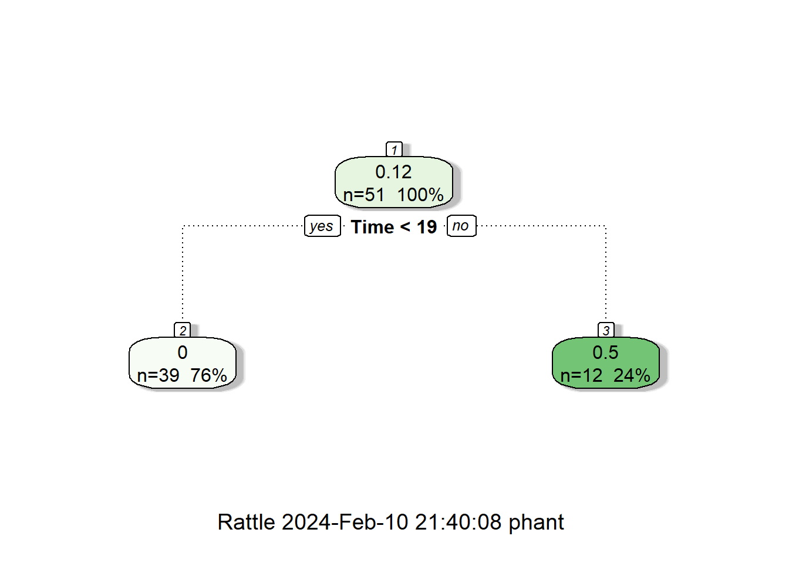
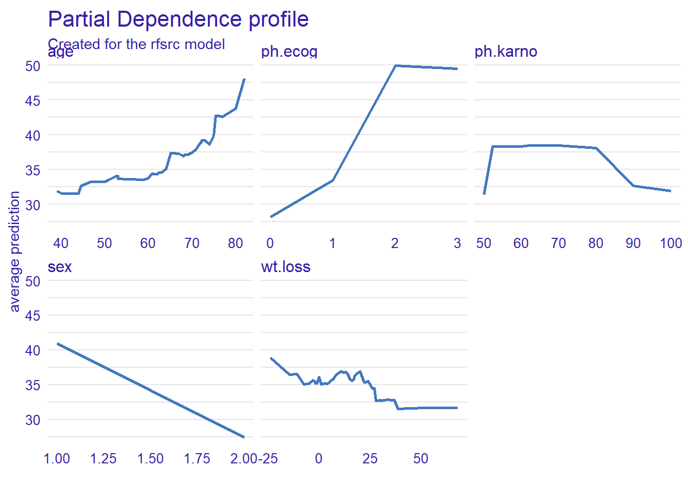
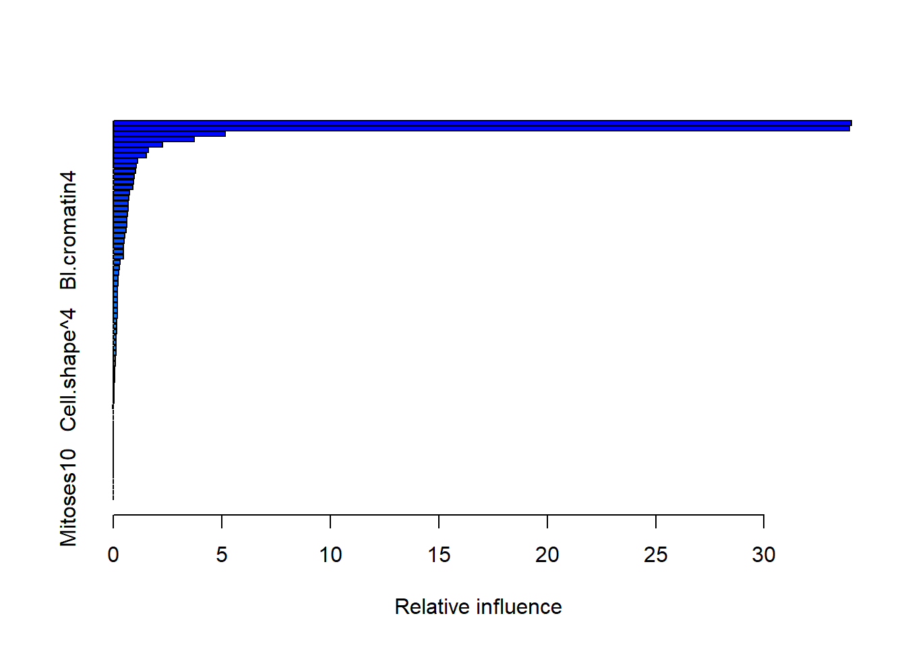
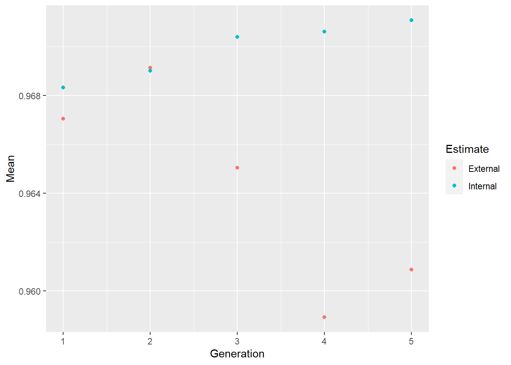
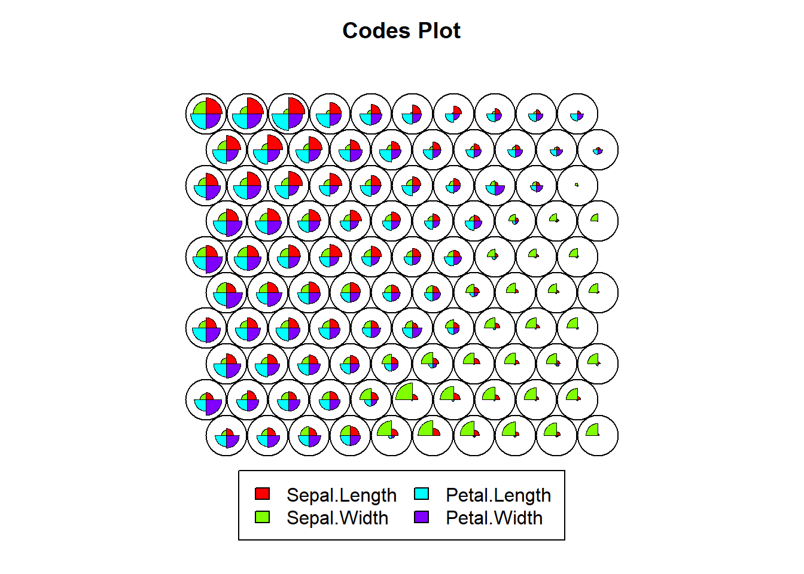

Chapter 6 Machine learning
A key aspect of machine learning is cross validation to evaluate the model. It repeatedly evaluate the model based on different subsets of the model and using different parameters to select the optimal parameters. The models are compared against subset of the data. The caret library is an excellent tool for performing model selection.
6.1 Decision tree analysis
Decision tree method generates a logical flow diagram that resembles a tree. This triangulated diagram, with repeated partitioning of the original data into smaller groups (nodes) on a yes or no basis, resembles clinical reasoning. By way of contrast, regression methods generate significant predictors but its not clear how those predictors enter the sequential nature of clinical reasoning. Regression models assume that all of the variables are required at once to formulate an accurate prediction. This would make some of the elements of any model from regression analysis superfluous.
There are several different approaches to performing decision tree analyses. The most famous method CART is implemented in R as rpart. The second approaches uses chi-square test to partition the tree, available from the party library. Decision tree may also reveal complex intreactions (relationship) among the predictors in a way that regression analyses do not easily reveal.
6.1.1 Information theory driven
The tree is grown using a divide and conquer strategy, with repeated partitioning of the original data into smaller groups (nodes) on a yes or no basis. The method uses a splitting rule built around the notion of purity. A node in the tree is defined as pure when all the elements belong to one class. When there is impurity in the node, a split occurs to maximize reduction in impurity. In some cases, the split may be biased toward attributes that contain many different ordinal levels or scales. Thus, the selection of an attribute as the root node may vary according to the splitting rule and the scaling of the attribute. The decision tree package rpart does tolerate certain degree of missing number because the data are split using the available data for that attribute to calculate the Gini index (rather than the entire cohort). One major advantage of rpart is the presentation of the classification rules in the easily interpretable form of a tree. The hierarchical nature of the decision tree is similar to many decision processes (Phan et al. 2018). A criticism of decision tree is that its prone to overfitting and or preference for variable with many levels. Decision tree do not handle collinearity issues well.
## Rattle: A free graphical interface for data science with R.
## Version 5.5.1 Copyright (c) 2006-2021 Togaware Pty Ltd.
## Type 'rattle()' to shake, rattle, and roll your data.## [1] "Age" "Smear" "Infil" "Index" "Blasts" "Temp" "Resp" "Time" "Status"#decision tree model for AML treatment
treLeukemia<-rpart(Status~., data=Leukemia)
fancyRpartPlot(treLeukemia)
6.1.2 Conditional decision tree
The conditional decision tree approach has been proposed to be superior to CART method because that method uses information criterion for partitioning and which can lead to overtting.The scenario of overtting describes model which works well on training data but less so with new data.The conditional approach by party is less prone to overtting as it includes signicance testing (Phan, Kooblal, et al. 2019).
## [1] "gos6" "outcome" "gender" "age" "wfns" "s100b" "ndka"#decision tree model
treeSAH<-ctree(outcome~., data=aSAH, control = ctree_control(mincriterion=0.95, minsplit=50))
plot(treeSAH,type = "simple",main = "Conditional Inference for aSAH")
6.2 Ensemble tree methods
6.2.1 Bagging trees
Both gradient boost machine and random forest are examples of tree-based method with the former based on boosting of the residuals of the model and the latter based on bagging with random selection (rows and columns) of multiple subsets of the data. As such random forest regression ensembles the model from multiple decision trees. The trees are created by obtaining multiple subset of the data without replacement (random selection of data by rows and columns). Decision tree comes at certain disadvantage such as overfitting. Random forest avoids the problems of single decision tree analyses by aggregating the results of multiple trees obtained by performing analysis on random subsets of the original data. This method is different from the bootstrapping procedure in which the data is subsetted with replacement. Theoretically, decision tree can look very similar as the data structure is not significantly changed. There is a theoretical risk of overfitting with random forest and underfitting with boosting tree methods.
6.2.1.1 Random Forest
Random forest is available as randomForest or ranger or via caret. A major drawback to random forest is that the hierarchical nature of the trees is lost. As such this method is seen as a black box tool and is less commonly embraced in the medical literature. One way us to use an interpretable machine learning tool iml (Molnar, Bischl, and Casalicchio 2018) (Shapley values) tool to aid interpretation of the model. This method uses ideas from coalition game theory to fairly distribute the contribution of the coalition of covariates to the random forest model.
The machine learning models are tuned using caret library.
#https://topepo.github.io/caret/index.html
library(caret)
data("BreastCancer",package = "mlbench")
#The Breast Cancer data contains NA as well as factors
#note Class is benign or malignant of class factor
#column Bare.nuclei removed due to NA
BreastCancer<-BreastCancer[,-c(1,7)]
#split data using caTools.
#The next example will use createDataPartition from caret
set.seed(123)
split = caTools::sample.split(BreastCancer$Class, SplitRatio = 0.75)
Train = subset(BreastCancer, split == TRUE)
Test = subset(BreastCancer, split == FALSE)
# specify that resampling method is
rf_control <- trainControl(## 10-fold CV
method = "cv",
number = 10)
#scaling data is performed here under preProcess
#note that ranger handles the outcome variable as factor
rf <- caret::train(Class ~ .,
data = Train,
method = "ranger",
trControl=rf_control,
preProcess = c("center", "scale"),
tuneLength = 10, verbose=F)
summary(rf)## Length Class Mode
## predictions 525 factor numeric
## num.trees 1 -none- numeric
## num.independent.variables 1 -none- numeric
## mtry 1 -none- numeric
## min.node.size 1 -none- numeric
## prediction.error 1 -none- numeric
## forest 9 ranger.forest list
## confusion.matrix 4 table numeric
## splitrule 1 -none- character
## num.random.splits 1 -none- numeric
## treetype 1 -none- character
## call 9 -none- call
## importance.mode 1 -none- character
## num.samples 1 -none- numeric
## replace 1 -none- logical
## xNames 71 -none- character
## problemType 1 -none- character
## tuneValue 3 data.frame list
## obsLevels 2 -none- character
## param 1 -none- list## [,1] [,2]
## [1,] 0 0
## [2,] 0 461## Setting levels: control = benign, case = malignant## Setting direction: controls < cases##
## Call:
## roc.default(response = BreastCancer$Class, predictor = as.numeric(pred_rf))
##
## Data: as.numeric(pred_rf) in 458 controls (BreastCancer$Class benign) < 241 cases (BreastCancer$Class malignant).
## Area under the curve: 0.98436.2.1.2 Random survival forest with rfsrc
Random survival forest example is provided below using rfsrc library. The survex library is used for explanation on the model. This library is also available as a learner in the mlr3verse.
library(survival)
library(survminer)
library(randomForestSRC)
library(survex)
library(dplyr)
#data from survival package on NCCTG lung cancer trial
#https://stat.ethz.ch/R-manual/R-devel/library/survival/html/lung.html
data(cancer, package="survival")
#time in days
#status censored=1, dead=2
#sex:Male=1 Female=2
cancer2<- cancer %>% mutate(
status=ifelse(status==1,0,1)) %>%
rename(Dead=status, Days=time)
time=cancer2$Days
status=cancer2$Dead
RF<- rfsrc(Surv(Days, Dead) ~ age+sex+ph.ecog+ph.karno+wt.loss, data = cancer2)
#specify library to avoid confusion with dplyr
explainer<-survex::explain(RF)## Preparation of a new explainer is initiated
## -> model label : rfsrc ( [33m default [39m )
## -> data : 213 rows 5 cols ( extracted from the model )
## -> target variable : 213 values ( 151 events and 62 censored , censoring rate = 0.291 ) ( extracted from the model )
## -> times : 50 unique time points , min = 5 , mean = 304.1224 , median = 263.16 , max = 835.44
## -> times : ( generated from y as 50 time points being consecutive quantiles (0.00, 0.02, ..., 0.98) )
## -> predict function : sum over the predict_cumulative_hazard_function will be used ( [33m default [39m )
## -> predict survival function : stepfun based on predict.rfsrc()$survival will be used ( [33m default [39m )
## -> predict cumulative hazard function : stepfun based on predict.rfsrc()$chf will be used ( [33m default [39m )
## -> model_info : package randomForestSRC , ver. 3.2.2 , task survival ( [33m default [39m )
## A new explainer has been created!Plot a single tree from the random survival forest model.
Dynamic AUC
y <- explainer$y
times <- explainer$times
surv <- explainer$predict_survival_function(RF, explainer$data, times)
cd_auc(y, surv = surv, times = times)## [1] 1.0000000 0.9307568 0.9112200 0.9096154 0.8829532 0.8786292 0.8560335 0.8517304
## [9] 0.8459069 0.8241969 0.8231190 0.8146465 0.7873396 0.7604641 0.7722174 0.7696099
## [17] 0.7667343 0.7605675 0.7514324 0.7500935 0.7638787 0.7621149 0.7673878 0.7606034
## [25] 0.7352058 0.7093474 0.7040276 0.7112689 0.7135705 0.7084011 0.7085640 0.7135241
## [33] 0.7028266 0.6921722 0.6955375 0.7029153 0.6907407 0.6919927 0.7015251 0.7019995
## [41] 0.7273598 0.7425582 0.7499178 0.7495446 0.7548334 0.7822465 0.8160264 0.8361538
## [49] 0.8801743 0.9048077Plot variable importance for random survival forest using permutation of features and measure impact on Brier score.
Plot partial dependence
## Registered S3 method overwritten by 'ingredients':
## method from
## plot.feature_importance_explainer survex
6.2.1.3 Random survival forest with ranger
Random forest can be used for performing survival analysis using ranger, randomforestSRC. The example below is an example using the lung cancer trial.
#data from survival package on NCCTG lung cancer trial
#https://stat.ethz.ch/R-manual/R-devel/library/survival/html/lung.html
data(cancer, package="survival")
#time in days
#status censored=1, dead=2
#sex:Male=1 Female=2
library(ranger)##
## Attaching package: 'ranger'## The following object is masked from 'package:rattle':
##
## importancelibrary(tidyverse)
library(survival)
cancer2<-cancer %>% dplyr::select(time, status, age,sex, ph.ecog) %>% na.omit()
survival_formula<-formula(paste('Surv(', 'time', ',', 'status', ') ~ ','age+sex+ph.ecog'))
survival_forest <- ranger(survival_formula,
data = cancer2,
seed = 1234,
importance = 'permutation',
mtry = 2,
verbose = TRUE,
num.trees = 200,
write.forest=TRUE)
print("error:"); print(survival_forest$prediction.error)## [1] "error:"## [1] 0.391924Print variable importance
## age sex ph.ecog
## 0.008386083 0.030801816 0.065970251Probability of survival
plot(survival_forest$unique.death.times, survival_forest$survival[1,], type='l', col='orange', ylim=c(0.01,1))
lines(survival_forest$unique.death.times, survival_forest$survival[56,], col='blue')
plot(survival_forest$unique.death.times, survival_forest$survival[1,], type='l', col='orange', ylim=c(0.01,1))
for (x in c(2:100)) {
lines(survival_forest$unique.death.times, survival_forest$survival[x,], col='red')
}
6.2.2 Boosting trees
6.2.2.1 Gradient Boost Machine
Gradient boost machine is available as gradient boost machine_gbm.
#the breast cancer data from random forest is used here
# specify that the resampling method is
gbm_control <- trainControl(## 10-fold CV
method = "repeatedcv",
number = 10)
#scaling data is performed here under preProcess
#note that ranger handles the outcome variable as factor
gbm <- caret::train(Class ~ .,
data = Train,
method = "gbm",
trControl=gbm_control,
preProcess = c("center", "scale"),
tuneLength = 10)## Iter TrainDeviance ValidDeviance StepSize Improve
## 1 1.1427 nan 0.1000 0.0725
## 2 1.0265 nan 0.1000 0.0564
## 3 0.9280 nan 0.1000 0.0462
## 4 0.8512 nan 0.1000 0.0377
## 5 0.7835 nan 0.1000 0.0319
## 6 0.7269 nan 0.1000 0.0280
## 7 0.6797 nan 0.1000 0.0211
## 8 0.6261 nan 0.1000 0.0225
## 9 0.5811 nan 0.1000 0.0192
## 10 0.5462 nan 0.1000 0.0161
## 20 0.3514 nan 0.1000 0.0047
## 40 0.2348 nan 0.1000 0.0009
## 60 0.1887 nan 0.1000 -0.0002
## 80 0.1648 nan 0.1000 -0.0007
## 100 0.1492 nan 0.1000 -0.0017
## 120 0.1416 nan 0.1000 -0.0002
## 140 0.1289 nan 0.1000 -0.0007
## 160 0.1239 nan 0.1000 -0.0007
## 180 0.1199 nan 0.1000 -0.0006
## 200 0.1155 nan 0.1000 -0.0004
## 220 0.1131 nan 0.1000 -0.0015
## 240 0.1085 nan 0.1000 -0.0005
## 260 0.1074 nan 0.1000 -0.0009
## 280 0.1013 nan 0.1000 0.0001
## 300 0.1001 nan 0.1000 -0.0007
## 320 0.0970 nan 0.1000 -0.0008
## 340 0.0940 nan 0.1000 -0.0004
## 360 0.0940 nan 0.1000 -0.0012
## 380 0.0926 nan 0.1000 -0.0005
## 400 0.0902 nan 0.1000 -0.0008
## 420 0.0885 nan 0.1000 -0.0012
## 440 0.0871 nan 0.1000 -0.0004
## 460 0.0859 nan 0.1000 -0.0010
## 480 0.0848 nan 0.1000 -0.0008
## 500 0.0839 nan 0.1000 -0.0006
##
## Iter TrainDeviance ValidDeviance StepSize Improve
## 1 1.1404 nan 0.1000 0.0706
## 2 1.0186 nan 0.1000 0.0602
## 3 0.9203 nan 0.1000 0.0470
## 4 0.8335 nan 0.1000 0.0422
## 5 0.7527 nan 0.1000 0.0384
## 6 0.6890 nan 0.1000 0.0303
## 7 0.6323 nan 0.1000 0.0267
## 8 0.5864 nan 0.1000 0.0216
## 9 0.5459 nan 0.1000 0.0175
## 10 0.5093 nan 0.1000 0.0178
## 20 0.2971 nan 0.1000 0.0053
## 40 0.1873 nan 0.1000 0.0010
## 60 0.1372 nan 0.1000 -0.0002
## 80 0.1117 nan 0.1000 -0.0006
## 100 0.0929 nan 0.1000 -0.0014
## 120 0.0825 nan 0.1000 -0.0004
## 140 0.0723 nan 0.1000 -0.0007
## 160 0.0657 nan 0.1000 -0.0009
## 180 0.0592 nan 0.1000 -0.0009
## 200 0.0534 nan 0.1000 -0.0004
## 220 0.0501 nan 0.1000 -0.0006
## 240 0.0432 nan 0.1000 -0.0005
## 260 0.0409 nan 0.1000 -0.0005
## 280 0.0358 nan 0.1000 -0.0004
## 300 0.0338 nan 0.1000 -0.0001
## 320 0.0310 nan 0.1000 -0.0004
## 340 0.0285 nan 0.1000 -0.0001
## 360 0.0256 nan 0.1000 -0.0000
## 380 0.0230 nan 0.1000 -0.0002
## 400 0.0207 nan 0.1000 -0.0001
## 420 0.0185 nan 0.1000 -0.0002
## 440 0.0173 nan 0.1000 -0.0002
## 460 0.0153 nan 0.1000 -0.0002
## 480 0.0139 nan 0.1000 -0.0002
## 500 0.0126 nan 0.1000 -0.0002
##
## Iter TrainDeviance ValidDeviance StepSize Improve
## 1 1.1317 nan 0.1000 0.0753
## 2 1.0143 nan 0.1000 0.0530
## 3 0.9039 nan 0.1000 0.0534
## 4 0.8172 nan 0.1000 0.0429
## 5 0.7454 nan 0.1000 0.0339
## 6 0.6799 nan 0.1000 0.0335
## 7 0.6212 nan 0.1000 0.0261
## 8 0.5719 nan 0.1000 0.0244
## 9 0.5298 nan 0.1000 0.0205
## 10 0.4910 nan 0.1000 0.0179
## 20 0.2803 nan 0.1000 0.0041
## 40 0.1490 nan 0.1000 -0.0011
## 60 0.1038 nan 0.1000 -0.0008
## 80 0.0793 nan 0.1000 -0.0004
## 100 0.0626 nan 0.1000 -0.0004
## 120 0.0511 nan 0.1000 -0.0009
## 140 0.0421 nan 0.1000 -0.0004
## 160 0.0342 nan 0.1000 -0.0006
## 180 0.0305 nan 0.1000 -0.0004
## 200 0.0256 nan 0.1000 -0.0002
## 220 0.0210 nan 0.1000 -0.0000
## 240 0.0173 nan 0.1000 -0.0001
## 260 0.0150 nan 0.1000 -0.0001
## 280 0.0122 nan 0.1000 -0.0001
## 300 0.0108 nan 0.1000 -0.0002
## 320 0.0090 nan 0.1000 -0.0000
## 340 0.0083 nan 0.1000 -0.0001
## 360 0.0073 nan 0.1000 -0.0001
## 380 0.0060 nan 0.1000 -0.0001
## 400 0.0051 nan 0.1000 -0.0001
## 420 0.0044 nan 0.1000 -0.0000
## 440 0.0038 nan 0.1000 -0.0000
## 460 0.0033 nan 0.1000 -0.0000
## 480 0.0029 nan 0.1000 -0.0000
## 500 0.0024 nan 0.1000 -0.0000
##
## Iter TrainDeviance ValidDeviance StepSize Improve
## 1 1.1353 nan 0.1000 0.0720
## 2 1.0104 nan 0.1000 0.0585
## 3 0.9082 nan 0.1000 0.0494
## 4 0.8160 nan 0.1000 0.0445
## 5 0.7366 nan 0.1000 0.0358
## 6 0.6760 nan 0.1000 0.0278
## 7 0.6191 nan 0.1000 0.0264
## 8 0.5679 nan 0.1000 0.0237
## 9 0.5251 nan 0.1000 0.0188
## 10 0.4870 nan 0.1000 0.0190
## 20 0.2760 nan 0.1000 0.0037
## 40 0.1335 nan 0.1000 -0.0004
## 60 0.0908 nan 0.1000 -0.0011
## 80 0.0640 nan 0.1000 -0.0009
## 100 0.0491 nan 0.1000 -0.0003
## 120 0.0382 nan 0.1000 -0.0003
## 140 0.0283 nan 0.1000 -0.0004
## 160 0.0213 nan 0.1000 -0.0002
## 180 0.0172 nan 0.1000 0.0000
## 200 0.0139 nan 0.1000 -0.0001
## 220 0.0114 nan 0.1000 -0.0002
## 240 0.0089 nan 0.1000 -0.0000
## 260 0.0071 nan 0.1000 -0.0001
## 280 0.0060 nan 0.1000 -0.0001
## 300 0.0048 nan 0.1000 -0.0001
## 320 0.0037 nan 0.1000 -0.0000
## 340 0.0029 nan 0.1000 -0.0000
## 360 0.0024 nan 0.1000 -0.0000
## 380 0.0020 nan 0.1000 -0.0001
## 400 0.0017 nan 0.1000 -0.0000
## 420 0.0014 nan 0.1000 -0.0000
## 440 0.0011 nan 0.1000 -0.0000
## 460 0.0009 nan 0.1000 -0.0000
## 480 0.0008 nan 0.1000 -0.0000
## 500 0.0006 nan 0.1000 -0.0000
##
## Iter TrainDeviance ValidDeviance StepSize Improve
## 1 1.1263 nan 0.1000 0.0779
## 2 1.0050 nan 0.1000 0.0553
## 3 0.9025 nan 0.1000 0.0489
## 4 0.8142 nan 0.1000 0.0412
## 5 0.7407 nan 0.1000 0.0350
## 6 0.6754 nan 0.1000 0.0294
## 7 0.6170 nan 0.1000 0.0271
## 8 0.5667 nan 0.1000 0.0230
## 9 0.5237 nan 0.1000 0.0188
## 10 0.4848 nan 0.1000 0.0183
## 20 0.2694 nan 0.1000 0.0050
## 40 0.1239 nan 0.1000 -0.0009
## 60 0.0745 nan 0.1000 -0.0007
## 80 0.0505 nan 0.1000 -0.0004
## 100 0.0386 nan 0.1000 -0.0006
## 120 0.0289 nan 0.1000 -0.0006
## 140 0.0219 nan 0.1000 -0.0000
## 160 0.0175 nan 0.1000 -0.0004
## 180 0.0122 nan 0.1000 -0.0001
## 200 0.0090 nan 0.1000 -0.0001
## 220 0.0070 nan 0.1000 0.0000
## 240 0.0057 nan 0.1000 -0.0001
## 260 0.0043 nan 0.1000 -0.0001
## 280 0.0036 nan 0.1000 -0.0001
## 300 0.0025 nan 0.1000 -0.0000
## 320 0.0021 nan 0.1000 -0.0000
## 340 0.0019 nan 0.1000 -0.0001
## 360 0.0015 nan 0.1000 -0.0001
## 380 0.0011 nan 0.1000 -0.0000
## 400 0.0010 nan 0.1000 -0.0000
## 420 0.0008 nan 0.1000 -0.0000
## 440 0.0006 nan 0.1000 0.0000
## 460 0.0005 nan 0.1000 -0.0000
## 480 0.0005 nan 0.1000 -0.0000
## 500 0.0004 nan 0.1000 -0.0000
##
## Iter TrainDeviance ValidDeviance StepSize Improve
## 1 1.1278 nan 0.1000 0.0764
## 2 1.0050 nan 0.1000 0.0633
## 3 0.9025 nan 0.1000 0.0509
## 4 0.8140 nan 0.1000 0.0421
## 5 0.7402 nan 0.1000 0.0339
## 6 0.6744 nan 0.1000 0.0312
## 7 0.6183 nan 0.1000 0.0251
## 8 0.5694 nan 0.1000 0.0216
## 9 0.5268 nan 0.1000 0.0180
## 10 0.4886 nan 0.1000 0.0174
## 20 0.2618 nan 0.1000 0.0054
## 40 0.1126 nan 0.1000 -0.0006
## 60 0.0650 nan 0.1000 -0.0005
## 80 0.0418 nan 0.1000 -0.0002
## 100 0.0305 nan 0.1000 -0.0006
## 120 0.0197 nan 0.1000 -0.0004
## 140 0.0148 nan 0.1000 -0.0002
## 160 0.0112 nan 0.1000 -0.0001
## 180 0.0080 nan 0.1000 -0.0001
## 200 0.0057 nan 0.1000 -0.0001
## 220 0.0047 nan 0.1000 -0.0001
## 240 0.0035 nan 0.1000 -0.0001
## 260 0.0024 nan 0.1000 -0.0000
## 280 0.0018 nan 0.1000 0.0000
## 300 0.0013 nan 0.1000 -0.0000
## 320 0.0010 nan 0.1000 -0.0000
## 340 0.0007 nan 0.1000 -0.0000
## 360 0.0006 nan 0.1000 -0.0000
## 380 0.0004 nan 0.1000 -0.0000
## 400 0.0003 nan 0.1000 0.0000
## 420 0.0002 nan 0.1000 -0.0000
## 440 0.0002 nan 0.1000 -0.0000
## 460 0.0001 nan 0.1000 -0.0000
## 480 0.0001 nan 0.1000 -0.0000
## 500 0.0001 nan 0.1000 -0.0000
##
## Iter TrainDeviance ValidDeviance StepSize Improve
## 1 1.1250 nan 0.1000 0.0753
## 2 0.9960 nan 0.1000 0.0631
## 3 0.8924 nan 0.1000 0.0494
## 4 0.8091 nan 0.1000 0.0411
## 5 0.7351 nan 0.1000 0.0342
## 6 0.6707 nan 0.1000 0.0309
## 7 0.6129 nan 0.1000 0.0269
## 8 0.5629 nan 0.1000 0.0229
## 9 0.5179 nan 0.1000 0.0207
## 10 0.4805 nan 0.1000 0.0161
## 20 0.2540 nan 0.1000 0.0044
## 40 0.1119 nan 0.1000 -0.0003
## 60 0.0606 nan 0.1000 -0.0013
## 80 0.0402 nan 0.1000 -0.0008
## 100 0.0262 nan 0.1000 -0.0003
## 120 0.0165 nan 0.1000 -0.0003
## 140 0.0115 nan 0.1000 -0.0002
## 160 0.0074 nan 0.1000 -0.0001
## 180 0.0054 nan 0.1000 -0.0001
## 200 0.0041 nan 0.1000 -0.0001
## 220 0.0033 nan 0.1000 -0.0001
## 240 0.0026 nan 0.1000 -0.0000
## 260 0.0017 nan 0.1000 -0.0000
## 280 0.0012 nan 0.1000 0.0000
## 300 0.0009 nan 0.1000 -0.0000
## 320 0.0007 nan 0.1000 -0.0000
## 340 0.0005 nan 0.1000 -0.0000
## 360 0.0004 nan 0.1000 -0.0000
## 380 0.0003 nan 0.1000 -0.0000
## 400 0.0002 nan 0.1000 -0.0000
## 420 0.0002 nan 0.1000 -0.0000
## 440 0.0002 nan 0.1000 -0.0000
## 460 0.0002 nan 0.1000 -0.0000
## 480 0.0002 nan 0.1000 -0.0000
## 500 0.0001 nan 0.1000 0.0000
##
## Iter TrainDeviance ValidDeviance StepSize Improve
## 1 1.1322 nan 0.1000 0.0773
## 2 1.0083 nan 0.1000 0.0644
## 3 0.9031 nan 0.1000 0.0521
## 4 0.8129 nan 0.1000 0.0427
## 5 0.7366 nan 0.1000 0.0359
## 6 0.6681 nan 0.1000 0.0318
## 7 0.6107 nan 0.1000 0.0254
## 8 0.5587 nan 0.1000 0.0240
## 9 0.5183 nan 0.1000 0.0177
## 10 0.4820 nan 0.1000 0.0155
## 20 0.2625 nan 0.1000 0.0036
## 40 0.1160 nan 0.1000 0.0000
## 60 0.0647 nan 0.1000 -0.0010
## 80 0.0391 nan 0.1000 -0.0010
## 100 0.0254 nan 0.1000 -0.0005
## 120 0.0179 nan 0.1000 -0.0003
## 140 0.0115 nan 0.1000 -0.0002
## 160 0.0085 nan 0.1000 0.0000
## 180 0.0068 nan 0.1000 -0.0002
## 200 0.0043 nan 0.1000 -0.0001
## 220 0.0036 nan 0.1000 -0.0002
## 240 0.0023 nan 0.1000 -0.0000
## 260 0.0017 nan 0.1000 -0.0000
## 280 0.0015 nan 0.1000 -0.0000
## 300 0.0013 nan 0.1000 -0.0001
## 320 0.0010 nan 0.1000 -0.0000
## 340 0.0008 nan 0.1000 -0.0000
## 360 0.0006 nan 0.1000 0.0000
## 380 0.0005 nan 0.1000 -0.0000
## 400 0.0003 nan 0.1000 -0.0000
## 420 0.0003 nan 0.1000 -0.0000
## 440 0.0002 nan 0.1000 -0.0000
## 460 0.0002 nan 0.1000 -0.0000
## 480 0.0002 nan 0.1000 -0.0000
## 500 0.0001 nan 0.1000 -0.0000
##
## Iter TrainDeviance ValidDeviance StepSize Improve
## 1 1.1300 nan 0.1000 0.0741
## 2 1.0023 nan 0.1000 0.0610
## 3 0.8978 nan 0.1000 0.0495
## 4 0.8107 nan 0.1000 0.0434
## 5 0.7360 nan 0.1000 0.0348
## 6 0.6670 nan 0.1000 0.0315
## 7 0.6116 nan 0.1000 0.0256
## 8 0.5640 nan 0.1000 0.0211
## 9 0.5222 nan 0.1000 0.0192
## 10 0.4862 nan 0.1000 0.0161
## 20 0.2622 nan 0.1000 0.0043
## 40 0.1118 nan 0.1000 -0.0002
## 60 0.0655 nan 0.1000 -0.0012
## 80 0.0416 nan 0.1000 -0.0009
## 100 0.0246 nan 0.1000 -0.0006
## 120 0.0170 nan 0.1000 -0.0005
## 140 0.0114 nan 0.1000 -0.0001
## 160 0.0089 nan 0.1000 -0.0003
## 180 0.0063 nan 0.1000 -0.0003
## 200 0.0053 nan 0.1000 -0.0002
## 220 0.0035 nan 0.1000 -0.0000
## 240 0.0029 nan 0.1000 -0.0001
## 260 0.0025 nan 0.1000 -0.0001
## 280 0.0021 nan 0.1000 -0.0001
## 300 0.0015 nan 0.1000 -0.0001
## 320 0.0013 nan 0.1000 -0.0001
## 340 0.0009 nan 0.1000 -0.0000
## 360 0.0009 nan 0.1000 -0.0000
## 380 0.0007 nan 0.1000 -0.0000
## 400 0.0005 nan 0.1000 -0.0000
## 420 0.0004 nan 0.1000 -0.0000
## 440 0.0003 nan 0.1000 -0.0000
## 460 0.0002 nan 0.1000 -0.0000
## 480 0.0002 nan 0.1000 0.0000
## 500 0.0001 nan 0.1000 -0.0000
##
## Iter TrainDeviance ValidDeviance StepSize Improve
## 1 1.1290 nan 0.1000 0.0814
## 2 1.0029 nan 0.1000 0.0630
## 3 0.8975 nan 0.1000 0.0507
## 4 0.8085 nan 0.1000 0.0428
## 5 0.7330 nan 0.1000 0.0374
## 6 0.6735 nan 0.1000 0.0277
## 7 0.6214 nan 0.1000 0.0244
## 8 0.5721 nan 0.1000 0.0227
## 9 0.5293 nan 0.1000 0.0185
## 10 0.4898 nan 0.1000 0.0172
## 20 0.2701 nan 0.1000 0.0041
## 40 0.1231 nan 0.1000 0.0001
## 60 0.0643 nan 0.1000 -0.0006
## 80 0.0365 nan 0.1000 -0.0010
## 100 0.0260 nan 0.1000 -0.0003
## 120 0.0180 nan 0.1000 -0.0001
## 140 0.0123 nan 0.1000 -0.0001
## 160 0.0090 nan 0.1000 -0.0002
## 180 0.0074 nan 0.1000 -0.0003
## 200 0.0065 nan 0.1000 -0.0001
## 220 0.0041 nan 0.1000 -0.0001
## 240 0.0038 nan 0.1000 -0.0001
## 260 0.0027 nan 0.1000 -0.0000
## 280 0.0024 nan 0.1000 -0.0001
## 300 0.0019 nan 0.1000 -0.0001
## 320 0.0016 nan 0.1000 -0.0000
## 340 0.0011 nan 0.1000 -0.0000
## 360 0.0009 nan 0.1000 -0.0000
## 380 0.0008 nan 0.1000 0.0000
## 400 0.0007 nan 0.1000 -0.0000
## 420 0.0005 nan 0.1000 -0.0000
## 440 0.0005 nan 0.1000 0.0000
## 460 0.0004 nan 0.1000 -0.0000
## 480 0.0003 nan 0.1000 -0.0000
## 500 0.0002 nan 0.1000 -0.0000
##
## Iter TrainDeviance ValidDeviance StepSize Improve
## 1 1.1580 nan 0.1000 0.0611
## 2 1.0377 nan 0.1000 0.0574
## 3 0.9452 nan 0.1000 0.0466
## 4 0.8664 nan 0.1000 0.0386
## 5 0.7939 nan 0.1000 0.0362
## 6 0.7283 nan 0.1000 0.0299
## 7 0.6776 nan 0.1000 0.0254
## 8 0.6344 nan 0.1000 0.0205
## 9 0.5950 nan 0.1000 0.0191
## 10 0.5567 nan 0.1000 0.0189
## 20 0.3469 nan 0.1000 0.0059
## 40 0.2207 nan 0.1000 0.0011
## 60 0.1758 nan 0.1000 0.0000
## 80 0.1545 nan 0.1000 -0.0008
## 100 0.1393 nan 0.1000 -0.0005
## 120 0.1251 nan 0.1000 -0.0004
## 140 0.1143 nan 0.1000 -0.0004
## 160 0.1082 nan 0.1000 -0.0011
## 180 0.1027 nan 0.1000 -0.0004
## 200 0.0993 nan 0.1000 -0.0007
## 220 0.0929 nan 0.1000 -0.0006
## 240 0.0911 nan 0.1000 -0.0007
## 260 0.0881 nan 0.1000 -0.0003
## 280 0.0848 nan 0.1000 -0.0003
## 300 0.0825 nan 0.1000 -0.0007
## 320 0.0813 nan 0.1000 -0.0007
## 340 0.0818 nan 0.1000 -0.0008
## 360 0.0789 nan 0.1000 -0.0006
## 380 0.0762 nan 0.1000 -0.0004
## 400 0.0743 nan 0.1000 -0.0004
## 420 0.0715 nan 0.1000 -0.0005
## 440 0.0707 nan 0.1000 -0.0003
## 460 0.0699 nan 0.1000 -0.0007
## 480 0.0671 nan 0.1000 -0.0007
## 500 0.0663 nan 0.1000 -0.0011
##
## Iter TrainDeviance ValidDeviance StepSize Improve
## 1 1.1434 nan 0.1000 0.0754
## 2 1.0214 nan 0.1000 0.0553
## 3 0.9171 nan 0.1000 0.0528
## 4 0.8311 nan 0.1000 0.0430
## 5 0.7546 nan 0.1000 0.0369
## 6 0.6928 nan 0.1000 0.0298
## 7 0.6388 nan 0.1000 0.0265
## 8 0.5956 nan 0.1000 0.0201
## 9 0.5531 nan 0.1000 0.0191
## 10 0.5121 nan 0.1000 0.0177
## 20 0.2979 nan 0.1000 0.0071
## 40 0.1715 nan 0.1000 -0.0003
## 60 0.1296 nan 0.1000 -0.0004
## 80 0.1005 nan 0.1000 -0.0008
## 100 0.0831 nan 0.1000 -0.0011
## 120 0.0710 nan 0.1000 -0.0010
## 140 0.0625 nan 0.1000 -0.0002
## 160 0.0525 nan 0.1000 -0.0001
## 180 0.0466 nan 0.1000 -0.0004
## 200 0.0416 nan 0.1000 -0.0003
## 220 0.0377 nan 0.1000 -0.0001
## 240 0.0334 nan 0.1000 -0.0005
## 260 0.0292 nan 0.1000 -0.0000
## 280 0.0264 nan 0.1000 -0.0003
## 300 0.0244 nan 0.1000 -0.0003
## 320 0.0217 nan 0.1000 -0.0003
## 340 0.0192 nan 0.1000 -0.0001
## 360 0.0178 nan 0.1000 -0.0001
## 380 0.0163 nan 0.1000 -0.0001
## 400 0.0150 nan 0.1000 -0.0001
## 420 0.0136 nan 0.1000 -0.0001
## 440 0.0127 nan 0.1000 -0.0001
## 460 0.0114 nan 0.1000 -0.0001
## 480 0.0104 nan 0.1000 -0.0000
## 500 0.0094 nan 0.1000 -0.0000
##
## Iter TrainDeviance ValidDeviance StepSize Improve
## 1 1.1385 nan 0.1000 0.0672
## 2 1.0083 nan 0.1000 0.0636
## 3 0.9009 nan 0.1000 0.0501
## 4 0.8127 nan 0.1000 0.0400
## 5 0.7386 nan 0.1000 0.0361
## 6 0.6771 nan 0.1000 0.0278
## 7 0.6206 nan 0.1000 0.0270
## 8 0.5651 nan 0.1000 0.0260
## 9 0.5235 nan 0.1000 0.0191
## 10 0.4884 nan 0.1000 0.0157
## 20 0.2743 nan 0.1000 0.0061
## 40 0.1431 nan 0.1000 -0.0017
## 60 0.0981 nan 0.1000 -0.0001
## 80 0.0772 nan 0.1000 -0.0006
## 100 0.0582 nan 0.1000 -0.0006
## 120 0.0462 nan 0.1000 -0.0005
## 140 0.0366 nan 0.1000 -0.0005
## 160 0.0302 nan 0.1000 -0.0003
## 180 0.0251 nan 0.1000 -0.0004
## 200 0.0211 nan 0.1000 -0.0001
## 220 0.0179 nan 0.1000 -0.0001
## 240 0.0158 nan 0.1000 -0.0002
## 260 0.0125 nan 0.1000 -0.0001
## 280 0.0104 nan 0.1000 -0.0001
## 300 0.0087 nan 0.1000 -0.0002
## 320 0.0076 nan 0.1000 -0.0000
## 340 0.0062 nan 0.1000 -0.0000
## 360 0.0051 nan 0.1000 0.0000
## 380 0.0044 nan 0.1000 -0.0000
## 400 0.0037 nan 0.1000 -0.0000
## 420 0.0031 nan 0.1000 -0.0000
## 440 0.0027 nan 0.1000 -0.0000
## 460 0.0023 nan 0.1000 -0.0000
## 480 0.0019 nan 0.1000 -0.0000
## 500 0.0016 nan 0.1000 -0.0000
##
## Iter TrainDeviance ValidDeviance StepSize Improve
## 1 1.1259 nan 0.1000 0.0798
## 2 1.0046 nan 0.1000 0.0586
## 3 0.9048 nan 0.1000 0.0443
## 4 0.8163 nan 0.1000 0.0404
## 5 0.7430 nan 0.1000 0.0351
## 6 0.6765 nan 0.1000 0.0327
## 7 0.6222 nan 0.1000 0.0226
## 8 0.5747 nan 0.1000 0.0222
## 9 0.5300 nan 0.1000 0.0202
## 10 0.4897 nan 0.1000 0.0192
## 20 0.2680 nan 0.1000 0.0036
## 40 0.1345 nan 0.1000 0.0003
## 60 0.0871 nan 0.1000 -0.0004
## 80 0.0633 nan 0.1000 -0.0002
## 100 0.0474 nan 0.1000 -0.0003
## 120 0.0342 nan 0.1000 -0.0001
## 140 0.0270 nan 0.1000 -0.0003
## 160 0.0210 nan 0.1000 -0.0000
## 180 0.0152 nan 0.1000 -0.0001
## 200 0.0122 nan 0.1000 -0.0002
## 220 0.0101 nan 0.1000 -0.0001
## 240 0.0075 nan 0.1000 -0.0001
## 260 0.0058 nan 0.1000 -0.0000
## 280 0.0047 nan 0.1000 -0.0001
## 300 0.0038 nan 0.1000 -0.0000
## 320 0.0030 nan 0.1000 -0.0000
## 340 0.0025 nan 0.1000 -0.0000
## 360 0.0020 nan 0.1000 -0.0001
## 380 0.0016 nan 0.1000 -0.0000
## 400 0.0013 nan 0.1000 -0.0000
## 420 0.0010 nan 0.1000 -0.0000
## 440 0.0009 nan 0.1000 -0.0000
## 460 0.0006 nan 0.1000 -0.0000
## 480 0.0005 nan 0.1000 -0.0000
## 500 0.0004 nan 0.1000 -0.0000
##
## Iter TrainDeviance ValidDeviance StepSize Improve
## 1 1.1225 nan 0.1000 0.0872
## 2 0.9954 nan 0.1000 0.0610
## 3 0.8951 nan 0.1000 0.0487
## 4 0.8114 nan 0.1000 0.0412
## 5 0.7393 nan 0.1000 0.0336
## 6 0.6786 nan 0.1000 0.0281
## 7 0.6211 nan 0.1000 0.0256
## 8 0.5740 nan 0.1000 0.0202
## 9 0.5319 nan 0.1000 0.0186
## 10 0.4951 nan 0.1000 0.0153
## 20 0.2632 nan 0.1000 0.0040
## 40 0.1170 nan 0.1000 -0.0004
## 60 0.0701 nan 0.1000 -0.0001
## 80 0.0441 nan 0.1000 -0.0002
## 100 0.0303 nan 0.1000 0.0001
## 120 0.0217 nan 0.1000 -0.0002
## 140 0.0148 nan 0.1000 -0.0002
## 160 0.0104 nan 0.1000 -0.0001
## 180 0.0076 nan 0.1000 -0.0000
## 200 0.0059 nan 0.1000 -0.0001
## 220 0.0044 nan 0.1000 -0.0000
## 240 0.0034 nan 0.1000 -0.0001
## 260 0.0024 nan 0.1000 -0.0000
## 280 0.0019 nan 0.1000 -0.0000
## 300 0.0014 nan 0.1000 -0.0000
## 320 0.0010 nan 0.1000 -0.0000
## 340 0.0008 nan 0.1000 -0.0000
## 360 0.0006 nan 0.1000 -0.0000
## 380 0.0005 nan 0.1000 -0.0000
## 400 0.0004 nan 0.1000 -0.0000
## 420 0.0003 nan 0.1000 -0.0000
## 440 0.0002 nan 0.1000 -0.0000
## 460 0.0002 nan 0.1000 -0.0000
## 480 0.0001 nan 0.1000 0.0000
## 500 0.0001 nan 0.1000 -0.0000
##
## Iter TrainDeviance ValidDeviance StepSize Improve
## 1 1.1352 nan 0.1000 0.0697
## 2 1.0150 nan 0.1000 0.0587
## 3 0.9080 nan 0.1000 0.0514
## 4 0.8184 nan 0.1000 0.0400
## 5 0.7429 nan 0.1000 0.0372
## 6 0.6776 nan 0.1000 0.0303
## 7 0.6209 nan 0.1000 0.0270
## 8 0.5715 nan 0.1000 0.0232
## 9 0.5285 nan 0.1000 0.0201
## 10 0.4902 nan 0.1000 0.0161
## 20 0.2575 nan 0.1000 0.0046
## 40 0.1136 nan 0.1000 0.0002
## 60 0.0683 nan 0.1000 -0.0020
## 80 0.0425 nan 0.1000 -0.0002
## 100 0.0296 nan 0.1000 -0.0003
## 120 0.0201 nan 0.1000 -0.0002
## 140 0.0134 nan 0.1000 -0.0001
## 160 0.0097 nan 0.1000 -0.0001
## 180 0.0067 nan 0.1000 -0.0000
## 200 0.0045 nan 0.1000 -0.0000
## 220 0.0036 nan 0.1000 -0.0001
## 240 0.0024 nan 0.1000 0.0000
## 260 0.0019 nan 0.1000 -0.0000
## 280 0.0015 nan 0.1000 -0.0000
## 300 0.0012 nan 0.1000 -0.0000
## 320 0.0008 nan 0.1000 -0.0000
## 340 0.0006 nan 0.1000 -0.0000
## 360 0.0005 nan 0.1000 -0.0000
## 380 0.0004 nan 0.1000 -0.0000
## 400 0.0003 nan 0.1000 -0.0000
## 420 0.0003 nan 0.1000 -0.0000
## 440 0.0002 nan 0.1000 -0.0000
## 460 0.0002 nan 0.1000 -0.0000
## 480 0.0001 nan 0.1000 -0.0000
## 500 0.0001 nan 0.1000 0.0000
##
## Iter TrainDeviance ValidDeviance StepSize Improve
## 1 1.1333 nan 0.1000 0.0754
## 2 1.0020 nan 0.1000 0.0638
## 3 0.8969 nan 0.1000 0.0513
## 4 0.8124 nan 0.1000 0.0398
## 5 0.7417 nan 0.1000 0.0335
## 6 0.6767 nan 0.1000 0.0309
## 7 0.6196 nan 0.1000 0.0253
## 8 0.5642 nan 0.1000 0.0256
## 9 0.5184 nan 0.1000 0.0203
## 10 0.4820 nan 0.1000 0.0157
## 20 0.2573 nan 0.1000 0.0052
## 40 0.1094 nan 0.1000 -0.0014
## 60 0.0573 nan 0.1000 -0.0003
## 80 0.0345 nan 0.1000 -0.0004
## 100 0.0229 nan 0.1000 -0.0001
## 120 0.0170 nan 0.1000 -0.0004
## 140 0.0124 nan 0.1000 -0.0003
## 160 0.0085 nan 0.1000 -0.0002
## 180 0.0064 nan 0.1000 -0.0001
## 200 0.0045 nan 0.1000 0.0000
## 220 0.0032 nan 0.1000 -0.0000
## 240 0.0024 nan 0.1000 -0.0001
## 260 0.0017 nan 0.1000 -0.0000
## 280 0.0016 nan 0.1000 -0.0000
## 300 0.0013 nan 0.1000 -0.0000
## 320 0.0012 nan 0.1000 -0.0001
## 340 0.0010 nan 0.1000 -0.0000
## 360 0.0011 nan 0.1000 -0.0000
## 380 0.0007 nan 0.1000 -0.0000
## 400 0.0004 nan 0.1000 -0.0000
## 420 0.0003 nan 0.1000 -0.0000
## 440 0.0002 nan 0.1000 -0.0000
## 460 0.0001 nan 0.1000 -0.0000
## 480 0.0001 nan 0.1000 -0.0000
## 500 0.0001 nan 0.1000 -0.0000
##
## Iter TrainDeviance ValidDeviance StepSize Improve
## 1 1.1353 nan 0.1000 0.0748
## 2 1.0077 nan 0.1000 0.0615
## 3 0.9042 nan 0.1000 0.0505
## 4 0.8200 nan 0.1000 0.0388
## 5 0.7463 nan 0.1000 0.0333
## 6 0.6782 nan 0.1000 0.0318
## 7 0.6199 nan 0.1000 0.0287
## 8 0.5685 nan 0.1000 0.0246
## 9 0.5259 nan 0.1000 0.0161
## 10 0.4856 nan 0.1000 0.0194
## 20 0.2593 nan 0.1000 0.0047
## 40 0.1079 nan 0.1000 -0.0001
## 60 0.0608 nan 0.1000 -0.0012
## 80 0.0391 nan 0.1000 -0.0007
## 100 0.0248 nan 0.1000 -0.0003
## 120 0.0191 nan 0.1000 -0.0004
## 140 0.0126 nan 0.1000 -0.0002
## 160 0.0088 nan 0.1000 -0.0003
## 180 0.0059 nan 0.1000 -0.0001
## 200 0.0045 nan 0.1000 -0.0001
## 220 0.0036 nan 0.1000 -0.0001
## 240 0.0029 nan 0.1000 -0.0001
## 260 0.0022 nan 0.1000 -0.0000
## 280 0.0017 nan 0.1000 -0.0001
## 300 0.0011 nan 0.1000 -0.0000
## 320 0.0009 nan 0.1000 -0.0000
## 340 0.0007 nan 0.1000 0.0000
## 360 0.0005 nan 0.1000 -0.0000
## 380 0.0004 nan 0.1000 -0.0000
## 400 0.0003 nan 0.1000 -0.0000
## 420 0.0002 nan 0.1000 -0.0000
## 440 0.0002 nan 0.1000 -0.0000
## 460 0.0001 nan 0.1000 -0.0000
## 480 0.0001 nan 0.1000 -0.0000
## 500 0.0001 nan 0.1000 -0.0000
##
## Iter TrainDeviance ValidDeviance StepSize Improve
## 1 1.1282 nan 0.1000 0.0818
## 2 1.0091 nan 0.1000 0.0571
## 3 0.9103 nan 0.1000 0.0479
## 4 0.8243 nan 0.1000 0.0384
## 5 0.7461 nan 0.1000 0.0363
## 6 0.6807 nan 0.1000 0.0299
## 7 0.6239 nan 0.1000 0.0259
## 8 0.5742 nan 0.1000 0.0234
## 9 0.5260 nan 0.1000 0.0208
## 10 0.4871 nan 0.1000 0.0186
## 20 0.2600 nan 0.1000 0.0038
## 40 0.0998 nan 0.1000 -0.0002
## 60 0.0490 nan 0.1000 -0.0004
## 80 0.0296 nan 0.1000 0.0001
## 100 0.0181 nan 0.1000 -0.0002
## 120 0.0153 nan 0.1000 -0.0006
## 140 0.0113 nan 0.1000 -0.0004
## 160 0.0079 nan 0.1000 -0.0000
## 180 0.0054 nan 0.1000 -0.0001
## 200 0.0038 nan 0.1000 -0.0000
## 220 0.0025 nan 0.1000 -0.0001
## 240 0.0018 nan 0.1000 -0.0000
## 260 0.0014 nan 0.1000 -0.0000
## 280 0.0009 nan 0.1000 -0.0000
## 300 0.0007 nan 0.1000 -0.0000
## 320 0.0005 nan 0.1000 -0.0000
## 340 0.0004 nan 0.1000 -0.0000
## 360 0.0003 nan 0.1000 -0.0000
## 380 0.0003 nan 0.1000 -0.0000
## 400 0.0002 nan 0.1000 -0.0000
## 420 0.0002 nan 0.1000 0.0000
## 440 0.0001 nan 0.1000 -0.0000
## 460 0.0001 nan 0.1000 -0.0000
## 480 0.0001 nan 0.1000 -0.0000
## 500 0.0000 nan 0.1000 -0.0000
##
## Iter TrainDeviance ValidDeviance StepSize Improve
## 1 1.1378 nan 0.1000 0.0711
## 2 1.0160 nan 0.1000 0.0605
## 3 0.9141 nan 0.1000 0.0498
## 4 0.8268 nan 0.1000 0.0398
## 5 0.7493 nan 0.1000 0.0364
## 6 0.6872 nan 0.1000 0.0280
## 7 0.6286 nan 0.1000 0.0271
## 8 0.5763 nan 0.1000 0.0238
## 9 0.5324 nan 0.1000 0.0200
## 10 0.4900 nan 0.1000 0.0182
## 20 0.2624 nan 0.1000 0.0053
## 40 0.1128 nan 0.1000 0.0000
## 60 0.0578 nan 0.1000 -0.0006
## 80 0.0331 nan 0.1000 -0.0006
## 100 0.0202 nan 0.1000 -0.0005
## 120 0.0143 nan 0.1000 -0.0001
## 140 0.0100 nan 0.1000 -0.0001
## 160 0.0062 nan 0.1000 0.0001
## 180 0.0045 nan 0.1000 -0.0001
## 200 0.0035 nan 0.1000 -0.0001
## 220 0.0025 nan 0.1000 -0.0001
## 240 0.0020 nan 0.1000 -0.0001
## 260 0.0015 nan 0.1000 -0.0000
## 280 0.0014 nan 0.1000 -0.0000
## 300 0.0011 nan 0.1000 -0.0000
## 320 0.0008 nan 0.1000 -0.0000
## 340 0.0007 nan 0.1000 -0.0000
## 360 0.0006 nan 0.1000 -0.0000
## 380 0.0004 nan 0.1000 -0.0000
## 400 0.0003 nan 0.1000 -0.0000
## 420 0.0003 nan 0.1000 -0.0000
## 440 0.0002 nan 0.1000 -0.0000
## 460 0.0001 nan 0.1000 -0.0000
## 480 0.0001 nan 0.1000 -0.0000
## 500 0.0001 nan 0.1000 -0.0000
##
## Iter TrainDeviance ValidDeviance StepSize Improve
## 1 1.1544 nan 0.1000 0.0682
## 2 1.0388 nan 0.1000 0.0544
## 3 0.9470 nan 0.1000 0.0440
## 4 0.8735 nan 0.1000 0.0374
## 5 0.8105 nan 0.1000 0.0315
## 6 0.7587 nan 0.1000 0.0281
## 7 0.7108 nan 0.1000 0.0228
## 8 0.6644 nan 0.1000 0.0221
## 9 0.6236 nan 0.1000 0.0181
## 10 0.5893 nan 0.1000 0.0171
## 20 0.3826 nan 0.1000 0.0061
## 40 0.2487 nan 0.1000 0.0011
## 60 0.2049 nan 0.1000 0.0010
## 80 0.1810 nan 0.1000 -0.0012
## 100 0.1627 nan 0.1000 0.0000
## 120 0.1530 nan 0.1000 -0.0021
## 140 0.1433 nan 0.1000 -0.0006
## 160 0.1397 nan 0.1000 -0.0015
## 180 0.1362 nan 0.1000 -0.0007
## 200 0.1298 nan 0.1000 -0.0013
## 220 0.1243 nan 0.1000 -0.0010
## 240 0.1199 nan 0.1000 -0.0006
## 260 0.1141 nan 0.1000 -0.0010
## 280 0.1109 nan 0.1000 -0.0007
## 300 0.1094 nan 0.1000 -0.0001
## 320 0.1066 nan 0.1000 -0.0003
## 340 0.1072 nan 0.1000 -0.0005
## 360 0.1057 nan 0.1000 -0.0011
## 380 0.1037 nan 0.1000 -0.0003
## 400 0.1014 nan 0.1000 -0.0005
## 420 0.1004 nan 0.1000 -0.0007
## 440 0.0992 nan 0.1000 -0.0009
## 460 0.0987 nan 0.1000 -0.0004
## 480 0.0966 nan 0.1000 -0.0011
## 500 0.0943 nan 0.1000 -0.0013
##
## Iter TrainDeviance ValidDeviance StepSize Improve
## 1 1.1419 nan 0.1000 0.0710
## 2 1.0233 nan 0.1000 0.0548
## 3 0.9248 nan 0.1000 0.0468
## 4 0.8439 nan 0.1000 0.0393
## 5 0.7700 nan 0.1000 0.0353
## 6 0.7088 nan 0.1000 0.0275
## 7 0.6580 nan 0.1000 0.0266
## 8 0.6117 nan 0.1000 0.0243
## 9 0.5686 nan 0.1000 0.0199
## 10 0.5331 nan 0.1000 0.0132
## 20 0.3141 nan 0.1000 0.0064
## 40 0.1937 nan 0.1000 -0.0005
## 60 0.1530 nan 0.1000 -0.0006
## 80 0.1272 nan 0.1000 -0.0001
## 100 0.1072 nan 0.1000 -0.0019
## 120 0.0929 nan 0.1000 -0.0010
## 140 0.0799 nan 0.1000 -0.0008
## 160 0.0705 nan 0.1000 -0.0004
## 180 0.0632 nan 0.1000 -0.0003
## 200 0.0557 nan 0.1000 -0.0004
## 220 0.0515 nan 0.1000 -0.0002
## 240 0.0455 nan 0.1000 -0.0006
## 260 0.0409 nan 0.1000 -0.0001
## 280 0.0368 nan 0.1000 -0.0001
## 300 0.0343 nan 0.1000 -0.0002
## 320 0.0313 nan 0.1000 -0.0003
## 340 0.0285 nan 0.1000 -0.0001
## 360 0.0258 nan 0.1000 -0.0001
## 380 0.0242 nan 0.1000 -0.0002
## 400 0.0222 nan 0.1000 -0.0003
## 420 0.0200 nan 0.1000 -0.0000
## 440 0.0190 nan 0.1000 -0.0002
## 460 0.0178 nan 0.1000 -0.0002
## 480 0.0167 nan 0.1000 -0.0002
## 500 0.0152 nan 0.1000 -0.0002
##
## Iter TrainDeviance ValidDeviance StepSize Improve
## 1 1.1342 nan 0.1000 0.0749
## 2 1.0089 nan 0.1000 0.0582
## 3 0.9088 nan 0.1000 0.0485
## 4 0.8249 nan 0.1000 0.0406
## 5 0.7519 nan 0.1000 0.0339
## 6 0.6923 nan 0.1000 0.0285
## 7 0.6389 nan 0.1000 0.0258
## 8 0.5940 nan 0.1000 0.0212
## 9 0.5503 nan 0.1000 0.0176
## 10 0.5102 nan 0.1000 0.0185
## 20 0.2955 nan 0.1000 0.0061
## 40 0.1627 nan 0.1000 -0.0002
## 60 0.1176 nan 0.1000 -0.0003
## 80 0.0902 nan 0.1000 -0.0010
## 100 0.0721 nan 0.1000 -0.0008
## 120 0.0605 nan 0.1000 -0.0008
## 140 0.0504 nan 0.1000 -0.0007
## 160 0.0398 nan 0.1000 0.0000
## 180 0.0349 nan 0.1000 -0.0006
## 200 0.0288 nan 0.1000 -0.0003
## 220 0.0233 nan 0.1000 -0.0001
## 240 0.0198 nan 0.1000 -0.0003
## 260 0.0168 nan 0.1000 -0.0002
## 280 0.0146 nan 0.1000 -0.0001
## 300 0.0126 nan 0.1000 -0.0002
## 320 0.0107 nan 0.1000 -0.0002
## 340 0.0092 nan 0.1000 -0.0001
## 360 0.0078 nan 0.1000 -0.0000
## 380 0.0068 nan 0.1000 -0.0000
## 400 0.0060 nan 0.1000 -0.0001
## 420 0.0053 nan 0.1000 -0.0001
## 440 0.0045 nan 0.1000 -0.0000
## 460 0.0039 nan 0.1000 -0.0000
## 480 0.0034 nan 0.1000 -0.0001
## 500 0.0030 nan 0.1000 -0.0000
##
## Iter TrainDeviance ValidDeviance StepSize Improve
## 1 1.1329 nan 0.1000 0.0733
## 2 1.0106 nan 0.1000 0.0586
## 3 0.9059 nan 0.1000 0.0503
## 4 0.8209 nan 0.1000 0.0407
## 5 0.7498 nan 0.1000 0.0339
## 6 0.6882 nan 0.1000 0.0279
## 7 0.6348 nan 0.1000 0.0260
## 8 0.5856 nan 0.1000 0.0221
## 9 0.5414 nan 0.1000 0.0200
## 10 0.5078 nan 0.1000 0.0152
## 20 0.2789 nan 0.1000 0.0040
## 40 0.1368 nan 0.1000 -0.0005
## 60 0.0946 nan 0.1000 -0.0014
## 80 0.0653 nan 0.1000 -0.0009
## 100 0.0509 nan 0.1000 -0.0003
## 120 0.0385 nan 0.1000 -0.0002
## 140 0.0307 nan 0.1000 -0.0003
## 160 0.0245 nan 0.1000 -0.0003
## 180 0.0200 nan 0.1000 -0.0001
## 200 0.0161 nan 0.1000 -0.0001
## 220 0.0125 nan 0.1000 -0.0001
## 240 0.0100 nan 0.1000 -0.0001
## 260 0.0079 nan 0.1000 -0.0001
## 280 0.0064 nan 0.1000 -0.0001
## 300 0.0050 nan 0.1000 -0.0000
## 320 0.0041 nan 0.1000 -0.0000
## 340 0.0034 nan 0.1000 -0.0000
## 360 0.0028 nan 0.1000 -0.0000
## 380 0.0024 nan 0.1000 -0.0000
## 400 0.0021 nan 0.1000 -0.0000
## 420 0.0017 nan 0.1000 -0.0000
## 440 0.0014 nan 0.1000 -0.0000
## 460 0.0011 nan 0.1000 -0.0000
## 480 0.0009 nan 0.1000 -0.0000
## 500 0.0007 nan 0.1000 -0.0000
##
## Iter TrainDeviance ValidDeviance StepSize Improve
## 1 1.1282 nan 0.1000 0.0785
## 2 1.0040 nan 0.1000 0.0604
## 3 0.9023 nan 0.1000 0.0488
## 4 0.8131 nan 0.1000 0.0447
## 5 0.7425 nan 0.1000 0.0350
## 6 0.6794 nan 0.1000 0.0287
## 7 0.6257 nan 0.1000 0.0246
## 8 0.5811 nan 0.1000 0.0208
## 9 0.5420 nan 0.1000 0.0169
## 10 0.5046 nan 0.1000 0.0160
## 20 0.2855 nan 0.1000 0.0052
## 40 0.1359 nan 0.1000 -0.0013
## 60 0.0868 nan 0.1000 -0.0000
## 80 0.0590 nan 0.1000 -0.0010
## 100 0.0423 nan 0.1000 -0.0006
## 120 0.0281 nan 0.1000 -0.0001
## 140 0.0219 nan 0.1000 -0.0003
## 160 0.0165 nan 0.1000 -0.0001
## 180 0.0120 nan 0.1000 0.0000
## 200 0.0092 nan 0.1000 -0.0001
## 220 0.0072 nan 0.1000 -0.0002
## 240 0.0050 nan 0.1000 -0.0000
## 260 0.0040 nan 0.1000 -0.0001
## 280 0.0032 nan 0.1000 -0.0000
## 300 0.0024 nan 0.1000 -0.0000
## 320 0.0019 nan 0.1000 -0.0000
## 340 0.0015 nan 0.1000 -0.0000
## 360 0.0014 nan 0.1000 -0.0000
## 380 0.0012 nan 0.1000 -0.0000
## 400 0.0009 nan 0.1000 -0.0000
## 420 0.0007 nan 0.1000 -0.0000
## 440 0.0006 nan 0.1000 -0.0000
## 460 0.0005 nan 0.1000 -0.0000
## 480 0.0004 nan 0.1000 -0.0000
## 500 0.0003 nan 0.1000 -0.0000
##
## Iter TrainDeviance ValidDeviance StepSize Improve
## 1 1.1425 nan 0.1000 0.0755
## 2 1.0146 nan 0.1000 0.0609
## 3 0.9154 nan 0.1000 0.0461
## 4 0.8268 nan 0.1000 0.0431
## 5 0.7495 nan 0.1000 0.0374
## 6 0.6868 nan 0.1000 0.0272
## 7 0.6357 nan 0.1000 0.0221
## 8 0.5841 nan 0.1000 0.0209
## 9 0.5411 nan 0.1000 0.0195
## 10 0.5054 nan 0.1000 0.0147
## 20 0.2709 nan 0.1000 0.0052
## 40 0.1237 nan 0.1000 -0.0012
## 60 0.0691 nan 0.1000 -0.0006
## 80 0.0462 nan 0.1000 -0.0001
## 100 0.0317 nan 0.1000 -0.0003
## 120 0.0236 nan 0.1000 -0.0001
## 140 0.0165 nan 0.1000 -0.0003
## 160 0.0120 nan 0.1000 -0.0003
## 180 0.0092 nan 0.1000 -0.0002
## 200 0.0068 nan 0.1000 -0.0000
## 220 0.0051 nan 0.1000 -0.0000
## 240 0.0037 nan 0.1000 -0.0001
## 260 0.0030 nan 0.1000 -0.0001
## 280 0.0024 nan 0.1000 -0.0000
## 300 0.0017 nan 0.1000 -0.0000
## 320 0.0013 nan 0.1000 -0.0000
## 340 0.0010 nan 0.1000 0.0000
## 360 0.0007 nan 0.1000 -0.0000
## 380 0.0005 nan 0.1000 -0.0000
## 400 0.0004 nan 0.1000 -0.0000
## 420 0.0003 nan 0.1000 -0.0000
## 440 0.0002 nan 0.1000 -0.0000
## 460 0.0002 nan 0.1000 -0.0000
## 480 0.0001 nan 0.1000 -0.0000
## 500 0.0001 nan 0.1000 -0.0000
##
## Iter TrainDeviance ValidDeviance StepSize Improve
## 1 1.1346 nan 0.1000 0.0747
## 2 1.0183 nan 0.1000 0.0585
## 3 0.9138 nan 0.1000 0.0477
## 4 0.8298 nan 0.1000 0.0376
## 5 0.7601 nan 0.1000 0.0335
## 6 0.6965 nan 0.1000 0.0301
## 7 0.6399 nan 0.1000 0.0243
## 8 0.5890 nan 0.1000 0.0238
## 9 0.5482 nan 0.1000 0.0182
## 10 0.5074 nan 0.1000 0.0182
## 20 0.2710 nan 0.1000 0.0057
## 40 0.1190 nan 0.1000 0.0002
## 60 0.0709 nan 0.1000 -0.0002
## 80 0.0473 nan 0.1000 -0.0002
## 100 0.0306 nan 0.1000 -0.0003
## 120 0.0222 nan 0.1000 0.0001
## 140 0.0152 nan 0.1000 -0.0002
## 160 0.0117 nan 0.1000 -0.0002
## 180 0.0083 nan 0.1000 0.0000
## 200 0.0062 nan 0.1000 -0.0001
## 220 0.0049 nan 0.1000 -0.0001
## 240 0.0034 nan 0.1000 -0.0001
## 260 0.0026 nan 0.1000 -0.0000
## 280 0.0019 nan 0.1000 -0.0000
## 300 0.0014 nan 0.1000 0.0000
## 320 0.0010 nan 0.1000 -0.0000
## 340 0.0007 nan 0.1000 -0.0000
## 360 0.0005 nan 0.1000 -0.0000
## 380 0.0004 nan 0.1000 -0.0000
## 400 0.0003 nan 0.1000 -0.0000
## 420 0.0003 nan 0.1000 -0.0000
## 440 0.0002 nan 0.1000 -0.0000
## 460 0.0001 nan 0.1000 -0.0000
## 480 0.0001 nan 0.1000 -0.0000
## 500 0.0001 nan 0.1000 -0.0000
##
## Iter TrainDeviance ValidDeviance StepSize Improve
## 1 1.1354 nan 0.1000 0.0728
## 2 1.0156 nan 0.1000 0.0574
## 3 0.9111 nan 0.1000 0.0484
## 4 0.8198 nan 0.1000 0.0425
## 5 0.7457 nan 0.1000 0.0354
## 6 0.6865 nan 0.1000 0.0255
## 7 0.6311 nan 0.1000 0.0270
## 8 0.5809 nan 0.1000 0.0221
## 9 0.5401 nan 0.1000 0.0154
## 10 0.4998 nan 0.1000 0.0193
## 20 0.2713 nan 0.1000 0.0043
## 40 0.1208 nan 0.1000 0.0003
## 60 0.0650 nan 0.1000 -0.0009
## 80 0.0417 nan 0.1000 -0.0002
## 100 0.0268 nan 0.1000 -0.0004
## 120 0.0211 nan 0.1000 -0.0004
## 140 0.0145 nan 0.1000 -0.0003
## 160 0.0095 nan 0.1000 -0.0002
## 180 0.0071 nan 0.1000 -0.0001
## 200 0.0055 nan 0.1000 -0.0001
## 220 0.0041 nan 0.1000 -0.0001
## 240 0.0027 nan 0.1000 -0.0000
## 260 0.0020 nan 0.1000 -0.0000
## 280 0.0015 nan 0.1000 -0.0000
## 300 0.0011 nan 0.1000 -0.0000
## 320 0.0008 nan 0.1000 -0.0000
## 340 0.0006 nan 0.1000 -0.0000
## 360 0.0004 nan 0.1000 -0.0000
## 380 0.0003 nan 0.1000 -0.0000
## 400 0.0002 nan 0.1000 0.0000
## 420 0.0002 nan 0.1000 -0.0000
## 440 0.0001 nan 0.1000 -0.0000
## 460 0.0001 nan 0.1000 -0.0000
## 480 0.0001 nan 0.1000 -0.0000
## 500 0.0000 nan 0.1000 -0.0000
##
## Iter TrainDeviance ValidDeviance StepSize Improve
## 1 1.1347 nan 0.1000 0.0758
## 2 1.0060 nan 0.1000 0.0639
## 3 0.9023 nan 0.1000 0.0482
## 4 0.8221 nan 0.1000 0.0367
## 5 0.7454 nan 0.1000 0.0378
## 6 0.6834 nan 0.1000 0.0272
## 7 0.6238 nan 0.1000 0.0266
## 8 0.5761 nan 0.1000 0.0214
## 9 0.5363 nan 0.1000 0.0170
## 10 0.5024 nan 0.1000 0.0129
## 20 0.2659 nan 0.1000 0.0049
## 40 0.1100 nan 0.1000 0.0003
## 60 0.0624 nan 0.1000 -0.0010
## 80 0.0347 nan 0.1000 -0.0005
## 100 0.0236 nan 0.1000 -0.0005
## 120 0.0167 nan 0.1000 0.0001
## 140 0.0122 nan 0.1000 -0.0003
## 160 0.0084 nan 0.1000 -0.0001
## 180 0.0059 nan 0.1000 -0.0001
## 200 0.0045 nan 0.1000 -0.0000
## 220 0.0037 nan 0.1000 -0.0000
## 240 0.0026 nan 0.1000 -0.0001
## 260 0.0022 nan 0.1000 -0.0001
## 280 0.0020 nan 0.1000 -0.0001
## 300 0.0015 nan 0.1000 -0.0001
## 320 0.0009 nan 0.1000 -0.0000
## 340 0.0007 nan 0.1000 -0.0000
## 360 0.0005 nan 0.1000 -0.0000
## 380 0.0003 nan 0.1000 -0.0000
## 400 0.0002 nan 0.1000 -0.0000
## 420 0.0002 nan 0.1000 -0.0000
## 440 0.0001 nan 0.1000 -0.0000
## 460 0.0001 nan 0.1000 -0.0000
## 480 0.0001 nan 0.1000 -0.0000
## 500 0.0001 nan 0.1000 -0.0000
##
## Iter TrainDeviance ValidDeviance StepSize Improve
## 1 1.1324 nan 0.1000 0.0723
## 2 1.0078 nan 0.1000 0.0613
## 3 0.9095 nan 0.1000 0.0440
## 4 0.8226 nan 0.1000 0.0427
## 5 0.7499 nan 0.1000 0.0324
## 6 0.6845 nan 0.1000 0.0277
## 7 0.6241 nan 0.1000 0.0298
## 8 0.5777 nan 0.1000 0.0205
## 9 0.5360 nan 0.1000 0.0189
## 10 0.4970 nan 0.1000 0.0166
## 20 0.2639 nan 0.1000 0.0036
## 40 0.1150 nan 0.1000 -0.0013
## 60 0.0633 nan 0.1000 -0.0010
## 80 0.0371 nan 0.1000 -0.0003
## 100 0.0236 nan 0.1000 -0.0001
## 120 0.0170 nan 0.1000 -0.0003
## 140 0.0116 nan 0.1000 0.0001
## 160 0.0087 nan 0.1000 -0.0002
## 180 0.0054 nan 0.1000 -0.0001
## 200 0.0037 nan 0.1000 0.0000
## 220 0.0030 nan 0.1000 -0.0001
## 240 0.0022 nan 0.1000 -0.0001
## 260 0.0014 nan 0.1000 -0.0000
## 280 0.0015 nan 0.1000 -0.0001
## 300 0.0009 nan 0.1000 -0.0000
## 320 0.0006 nan 0.1000 -0.0000
## 340 0.0005 nan 0.1000 -0.0000
## 360 0.0003 nan 0.1000 -0.0000
## 380 0.0003 nan 0.1000 -0.0000
## 400 0.0002 nan 0.1000 -0.0000
## 420 0.0001 nan 0.1000 -0.0000
## 440 0.0001 nan 0.1000 -0.0000
## 460 0.0001 nan 0.1000 -0.0000
## 480 0.0001 nan 0.1000 -0.0000
## 500 0.0000 nan 0.1000 -0.0000
##
## Iter TrainDeviance ValidDeviance StepSize Improve
## 1 1.1528 nan 0.1000 0.0645
## 2 1.0397 nan 0.1000 0.0563
## 3 0.9505 nan 0.1000 0.0427
## 4 0.8719 nan 0.1000 0.0396
## 5 0.8112 nan 0.1000 0.0304
## 6 0.7577 nan 0.1000 0.0246
## 7 0.7050 nan 0.1000 0.0255
## 8 0.6613 nan 0.1000 0.0203
## 9 0.6254 nan 0.1000 0.0157
## 10 0.5899 nan 0.1000 0.0153
## 20 0.3914 nan 0.1000 0.0058
## 40 0.2505 nan 0.1000 0.0012
## 60 0.2096 nan 0.1000 -0.0007
## 80 0.1829 nan 0.1000 -0.0005
## 100 0.1648 nan 0.1000 -0.0010
## 120 0.1545 nan 0.1000 -0.0011
## 140 0.1443 nan 0.1000 -0.0002
## 160 0.1367 nan 0.1000 -0.0004
## 180 0.1315 nan 0.1000 -0.0009
## 200 0.1264 nan 0.1000 -0.0011
## 220 0.1225 nan 0.1000 -0.0014
## 240 0.1187 nan 0.1000 -0.0018
## 260 0.1158 nan 0.1000 -0.0011
## 280 0.1133 nan 0.1000 -0.0009
## 300 0.1102 nan 0.1000 -0.0008
## 320 0.1087 nan 0.1000 -0.0003
## 340 0.1061 nan 0.1000 -0.0012
## 360 0.1044 nan 0.1000 -0.0004
## 380 0.1020 nan 0.1000 -0.0013
## 400 0.1004 nan 0.1000 -0.0006
## 420 0.0992 nan 0.1000 -0.0008
## 440 0.0977 nan 0.1000 -0.0014
## 460 0.0975 nan 0.1000 -0.0009
## 480 0.0962 nan 0.1000 -0.0006
## 500 0.0943 nan 0.1000 -0.0006
##
## Iter TrainDeviance ValidDeviance StepSize Improve
## 1 1.1424 nan 0.1000 0.0727
## 2 1.0433 nan 0.1000 0.0449
## 3 0.9408 nan 0.1000 0.0497
## 4 0.8590 nan 0.1000 0.0416
## 5 0.7901 nan 0.1000 0.0344
## 6 0.7248 nan 0.1000 0.0323
## 7 0.6707 nan 0.1000 0.0249
## 8 0.6248 nan 0.1000 0.0221
## 9 0.5798 nan 0.1000 0.0215
## 10 0.5412 nan 0.1000 0.0191
## 20 0.3270 nan 0.1000 0.0062
## 40 0.1909 nan 0.1000 0.0001
## 60 0.1503 nan 0.1000 -0.0004
## 80 0.1235 nan 0.1000 -0.0012
## 100 0.1058 nan 0.1000 -0.0002
## 120 0.0891 nan 0.1000 -0.0008
## 140 0.0774 nan 0.1000 -0.0005
## 160 0.0681 nan 0.1000 -0.0002
## 180 0.0597 nan 0.1000 -0.0002
## 200 0.0541 nan 0.1000 -0.0005
## 220 0.0502 nan 0.1000 -0.0007
## 240 0.0450 nan 0.1000 -0.0002
## 260 0.0420 nan 0.1000 -0.0001
## 280 0.0378 nan 0.1000 -0.0005
## 300 0.0352 nan 0.1000 -0.0002
## 320 0.0309 nan 0.1000 -0.0000
## 340 0.0286 nan 0.1000 -0.0002
## 360 0.0253 nan 0.1000 0.0000
## 380 0.0237 nan 0.1000 -0.0002
## 400 0.0213 nan 0.1000 0.0000
## 420 0.0197 nan 0.1000 -0.0002
## 440 0.0178 nan 0.1000 -0.0002
## 460 0.0160 nan 0.1000 -0.0001
## 480 0.0151 nan 0.1000 0.0000
## 500 0.0140 nan 0.1000 -0.0001
##
## Iter TrainDeviance ValidDeviance StepSize Improve
## 1 1.1362 nan 0.1000 0.0738
## 2 1.0147 nan 0.1000 0.0574
## 3 0.9190 nan 0.1000 0.0476
## 4 0.8340 nan 0.1000 0.0405
## 5 0.7610 nan 0.1000 0.0344
## 6 0.7002 nan 0.1000 0.0272
## 7 0.6420 nan 0.1000 0.0269
## 8 0.5938 nan 0.1000 0.0223
## 9 0.5528 nan 0.1000 0.0177
## 10 0.5133 nan 0.1000 0.0171
## 20 0.2956 nan 0.1000 0.0037
## 40 0.1720 nan 0.1000 -0.0010
## 60 0.1188 nan 0.1000 -0.0007
## 80 0.0933 nan 0.1000 -0.0016
## 100 0.0736 nan 0.1000 -0.0008
## 120 0.0582 nan 0.1000 -0.0004
## 140 0.0482 nan 0.1000 -0.0007
## 160 0.0394 nan 0.1000 -0.0000
## 180 0.0329 nan 0.1000 -0.0003
## 200 0.0266 nan 0.1000 -0.0001
## 220 0.0226 nan 0.1000 -0.0002
## 240 0.0197 nan 0.1000 -0.0001
## 260 0.0169 nan 0.1000 -0.0002
## 280 0.0147 nan 0.1000 -0.0002
## 300 0.0132 nan 0.1000 -0.0001
## 320 0.0111 nan 0.1000 -0.0000
## 340 0.0099 nan 0.1000 -0.0001
## 360 0.0083 nan 0.1000 -0.0001
## 380 0.0071 nan 0.1000 -0.0000
## 400 0.0062 nan 0.1000 -0.0001
## 420 0.0054 nan 0.1000 -0.0001
## 440 0.0045 nan 0.1000 -0.0000
## 460 0.0038 nan 0.1000 -0.0000
## 480 0.0032 nan 0.1000 -0.0001
## 500 0.0028 nan 0.1000 -0.0000
##
## Iter TrainDeviance ValidDeviance StepSize Improve
## 1 1.1345 nan 0.1000 0.0697
## 2 1.0138 nan 0.1000 0.0605
## 3 0.9126 nan 0.1000 0.0455
## 4 0.8249 nan 0.1000 0.0412
## 5 0.7514 nan 0.1000 0.0338
## 6 0.6883 nan 0.1000 0.0240
## 7 0.6337 nan 0.1000 0.0259
## 8 0.5856 nan 0.1000 0.0212
## 9 0.5438 nan 0.1000 0.0184
## 10 0.5100 nan 0.1000 0.0132
## 20 0.2926 nan 0.1000 0.0050
## 40 0.1482 nan 0.1000 -0.0013
## 60 0.1000 nan 0.1000 -0.0007
## 80 0.0728 nan 0.1000 -0.0007
## 100 0.0568 nan 0.1000 -0.0007
## 120 0.0432 nan 0.1000 -0.0004
## 140 0.0365 nan 0.1000 -0.0006
## 160 0.0272 nan 0.1000 -0.0000
## 180 0.0222 nan 0.1000 -0.0003
## 200 0.0177 nan 0.1000 -0.0001
## 220 0.0141 nan 0.1000 -0.0000
## 240 0.0116 nan 0.1000 -0.0000
## 260 0.0094 nan 0.1000 -0.0000
## 280 0.0076 nan 0.1000 -0.0001
## 300 0.0061 nan 0.1000 -0.0001
## 320 0.0049 nan 0.1000 -0.0001
## 340 0.0042 nan 0.1000 -0.0000
## 360 0.0034 nan 0.1000 -0.0001
## 380 0.0028 nan 0.1000 -0.0000
## 400 0.0023 nan 0.1000 -0.0000
## 420 0.0019 nan 0.1000 -0.0000
## 440 0.0016 nan 0.1000 -0.0000
## 460 0.0013 nan 0.1000 -0.0000
## 480 0.0011 nan 0.1000 -0.0000
## 500 0.0009 nan 0.1000 -0.0000
##
## Iter TrainDeviance ValidDeviance StepSize Improve
## 1 1.1398 nan 0.1000 0.0696
## 2 1.0158 nan 0.1000 0.0613
## 3 0.9136 nan 0.1000 0.0465
## 4 0.8248 nan 0.1000 0.0426
## 5 0.7481 nan 0.1000 0.0343
## 6 0.6840 nan 0.1000 0.0285
## 7 0.6295 nan 0.1000 0.0231
## 8 0.5773 nan 0.1000 0.0235
## 9 0.5304 nan 0.1000 0.0226
## 10 0.4939 nan 0.1000 0.0151
## 20 0.2782 nan 0.1000 0.0044
## 40 0.1285 nan 0.1000 -0.0005
## 60 0.0774 nan 0.1000 -0.0003
## 80 0.0538 nan 0.1000 -0.0013
## 100 0.0422 nan 0.1000 -0.0006
## 120 0.0301 nan 0.1000 -0.0004
## 140 0.0229 nan 0.1000 0.0001
## 160 0.0173 nan 0.1000 -0.0001
## 180 0.0126 nan 0.1000 -0.0001
## 200 0.0096 nan 0.1000 -0.0000
## 220 0.0074 nan 0.1000 -0.0000
## 240 0.0059 nan 0.1000 0.0000
## 260 0.0045 nan 0.1000 -0.0001
## 280 0.0036 nan 0.1000 -0.0000
## 300 0.0030 nan 0.1000 -0.0001
## 320 0.0023 nan 0.1000 -0.0000
## 340 0.0018 nan 0.1000 0.0000
## 360 0.0015 nan 0.1000 0.0000
## 380 0.0012 nan 0.1000 -0.0000
## 400 0.0009 nan 0.1000 -0.0000
## 420 0.0008 nan 0.1000 -0.0000
## 440 0.0006 nan 0.1000 -0.0000
## 460 0.0005 nan 0.1000 -0.0000
## 480 0.0004 nan 0.1000 -0.0000
## 500 0.0003 nan 0.1000 -0.0000
##
## Iter TrainDeviance ValidDeviance StepSize Improve
## 1 1.1339 nan 0.1000 0.0721
## 2 1.0110 nan 0.1000 0.0580
## 3 0.9158 nan 0.1000 0.0418
## 4 0.8311 nan 0.1000 0.0349
## 5 0.7590 nan 0.1000 0.0326
## 6 0.6977 nan 0.1000 0.0267
## 7 0.6444 nan 0.1000 0.0264
## 8 0.5978 nan 0.1000 0.0196
## 9 0.5541 nan 0.1000 0.0183
## 10 0.5189 nan 0.1000 0.0144
## 20 0.2903 nan 0.1000 0.0036
## 40 0.1335 nan 0.1000 -0.0002
## 60 0.0805 nan 0.1000 -0.0010
## 80 0.0526 nan 0.1000 -0.0007
## 100 0.0356 nan 0.1000 -0.0005
## 120 0.0244 nan 0.1000 -0.0002
## 140 0.0175 nan 0.1000 -0.0001
## 160 0.0129 nan 0.1000 -0.0003
## 180 0.0096 nan 0.1000 -0.0002
## 200 0.0074 nan 0.1000 -0.0002
## 220 0.0056 nan 0.1000 -0.0000
## 240 0.0041 nan 0.1000 -0.0000
## 260 0.0031 nan 0.1000 -0.0000
## 280 0.0024 nan 0.1000 -0.0000
## 300 0.0017 nan 0.1000 -0.0000
## 320 0.0013 nan 0.1000 -0.0000
## 340 0.0010 nan 0.1000 -0.0000
## 360 0.0007 nan 0.1000 -0.0000
## 380 0.0006 nan 0.1000 -0.0000
## 400 0.0004 nan 0.1000 -0.0000
## 420 0.0003 nan 0.1000 -0.0000
## 440 0.0002 nan 0.1000 -0.0000
## 460 0.0002 nan 0.1000 -0.0000
## 480 0.0001 nan 0.1000 0.0000
## 500 0.0001 nan 0.1000 -0.0000
##
## Iter TrainDeviance ValidDeviance StepSize Improve
## 1 1.1377 nan 0.1000 0.0754
## 2 1.0152 nan 0.1000 0.0602
## 3 0.9181 nan 0.1000 0.0465
## 4 0.8325 nan 0.1000 0.0389
## 5 0.7566 nan 0.1000 0.0346
## 6 0.6902 nan 0.1000 0.0305
## 7 0.6386 nan 0.1000 0.0237
## 8 0.5919 nan 0.1000 0.0204
## 9 0.5451 nan 0.1000 0.0199
## 10 0.5085 nan 0.1000 0.0164
## 20 0.2726 nan 0.1000 0.0055
## 40 0.1179 nan 0.1000 -0.0011
## 60 0.0651 nan 0.1000 -0.0005
## 80 0.0406 nan 0.1000 -0.0003
## 100 0.0275 nan 0.1000 -0.0005
## 120 0.0194 nan 0.1000 -0.0002
## 140 0.0131 nan 0.1000 -0.0003
## 160 0.0099 nan 0.1000 -0.0002
## 180 0.0071 nan 0.1000 -0.0001
## 200 0.0053 nan 0.1000 -0.0001
## 220 0.0042 nan 0.1000 0.0000
## 240 0.0032 nan 0.1000 -0.0001
## 260 0.0025 nan 0.1000 -0.0001
## 280 0.0018 nan 0.1000 -0.0000
## 300 0.0015 nan 0.1000 -0.0000
## 320 0.0010 nan 0.1000 -0.0000
## 340 0.0008 nan 0.1000 -0.0000
## 360 0.0007 nan 0.1000 -0.0000
## 380 0.0005 nan 0.1000 -0.0000
## 400 0.0004 nan 0.1000 -0.0000
## 420 0.0003 nan 0.1000 -0.0000
## 440 0.0002 nan 0.1000 -0.0000
## 460 0.0002 nan 0.1000 -0.0000
## 480 0.0001 nan 0.1000 -0.0000
## 500 0.0001 nan 0.1000 -0.0000
##
## Iter TrainDeviance ValidDeviance StepSize Improve
## 1 1.1401 nan 0.1000 0.0692
## 2 1.0161 nan 0.1000 0.0609
## 3 0.9169 nan 0.1000 0.0460
## 4 0.8297 nan 0.1000 0.0396
## 5 0.7569 nan 0.1000 0.0352
## 6 0.6929 nan 0.1000 0.0286
## 7 0.6395 nan 0.1000 0.0237
## 8 0.5921 nan 0.1000 0.0214
## 9 0.5477 nan 0.1000 0.0204
## 10 0.5064 nan 0.1000 0.0186
## 20 0.2742 nan 0.1000 0.0049
## 40 0.1151 nan 0.1000 -0.0000
## 60 0.0641 nan 0.1000 -0.0011
## 80 0.0370 nan 0.1000 -0.0005
## 100 0.0250 nan 0.1000 -0.0001
## 120 0.0165 nan 0.1000 -0.0003
## 140 0.0108 nan 0.1000 -0.0000
## 160 0.0082 nan 0.1000 -0.0001
## 180 0.0062 nan 0.1000 -0.0001
## 200 0.0039 nan 0.1000 -0.0000
## 220 0.0029 nan 0.1000 -0.0001
## 240 0.0020 nan 0.1000 -0.0000
## 260 0.0017 nan 0.1000 0.0000
## 280 0.0013 nan 0.1000 -0.0000
## 300 0.0009 nan 0.1000 -0.0000
## 320 0.0007 nan 0.1000 -0.0000
## 340 0.0006 nan 0.1000 -0.0000
## 360 0.0004 nan 0.1000 -0.0000
## 380 0.0003 nan 0.1000 -0.0000
## 400 0.0002 nan 0.1000 -0.0000
## 420 0.0002 nan 0.1000 -0.0000
## 440 0.0001 nan 0.1000 -0.0000
## 460 0.0001 nan 0.1000 -0.0000
## 480 0.0001 nan 0.1000 -0.0000
## 500 0.0001 nan 0.1000 -0.0000
##
## Iter TrainDeviance ValidDeviance StepSize Improve
## 1 1.1392 nan 0.1000 0.0726
## 2 1.0200 nan 0.1000 0.0547
## 3 0.9143 nan 0.1000 0.0520
## 4 0.8277 nan 0.1000 0.0405
## 5 0.7552 nan 0.1000 0.0329
## 6 0.6930 nan 0.1000 0.0286
## 7 0.6350 nan 0.1000 0.0276
## 8 0.5902 nan 0.1000 0.0201
## 9 0.5456 nan 0.1000 0.0177
## 10 0.5091 nan 0.1000 0.0157
## 20 0.2824 nan 0.1000 0.0042
## 40 0.1189 nan 0.1000 -0.0005
## 60 0.0606 nan 0.1000 -0.0001
## 80 0.0384 nan 0.1000 -0.0000
## 100 0.0264 nan 0.1000 -0.0005
## 120 0.0177 nan 0.1000 -0.0002
## 140 0.0122 nan 0.1000 -0.0002
## 160 0.0081 nan 0.1000 -0.0000
## 180 0.0061 nan 0.1000 -0.0001
## 200 0.0038 nan 0.1000 -0.0001
## 220 0.0028 nan 0.1000 -0.0001
## 240 0.0021 nan 0.1000 -0.0001
## 260 0.0017 nan 0.1000 -0.0000
## 280 0.0012 nan 0.1000 -0.0000
## 300 0.0008 nan 0.1000 0.0000
## 320 0.0007 nan 0.1000 -0.0000
## 340 0.0005 nan 0.1000 -0.0000
## 360 0.0004 nan 0.1000 -0.0000
## 380 0.0003 nan 0.1000 -0.0000
## 400 0.0002 nan 0.1000 -0.0000
## 420 0.0002 nan 0.1000 0.0000
## 440 0.0001 nan 0.1000 -0.0000
## 460 0.0001 nan 0.1000 -0.0000
## 480 0.0001 nan 0.1000 -0.0000
## 500 0.0000 nan 0.1000 0.0000
##
## Iter TrainDeviance ValidDeviance StepSize Improve
## 1 1.1318 nan 0.1000 0.0715
## 2 1.0075 nan 0.1000 0.0554
## 3 0.9060 nan 0.1000 0.0482
## 4 0.8234 nan 0.1000 0.0360
## 5 0.7562 nan 0.1000 0.0275
## 6 0.6914 nan 0.1000 0.0302
## 7 0.6367 nan 0.1000 0.0232
## 8 0.5860 nan 0.1000 0.0209
## 9 0.5426 nan 0.1000 0.0198
## 10 0.5054 nan 0.1000 0.0156
## 20 0.2762 nan 0.1000 0.0061
## 40 0.1178 nan 0.1000 -0.0002
## 60 0.0710 nan 0.1000 -0.0010
## 80 0.0451 nan 0.1000 0.0003
## 100 0.0287 nan 0.1000 -0.0005
## 120 0.0180 nan 0.1000 -0.0003
## 140 0.0118 nan 0.1000 -0.0003
## 160 0.0080 nan 0.1000 0.0000
## 180 0.0048 nan 0.1000 -0.0002
## 200 0.0035 nan 0.1000 -0.0001
## 220 0.0025 nan 0.1000 -0.0000
## 240 0.0018 nan 0.1000 -0.0000
## 260 0.0014 nan 0.1000 -0.0000
## 280 0.0011 nan 0.1000 -0.0000
## 300 0.0008 nan 0.1000 -0.0000
## 320 0.0006 nan 0.1000 -0.0000
## 340 0.0004 nan 0.1000 -0.0000
## 360 0.0004 nan 0.1000 -0.0000
## 380 0.0002 nan 0.1000 -0.0000
## 400 0.0002 nan 0.1000 -0.0000
## 420 0.0001 nan 0.1000 -0.0000
## 440 0.0001 nan 0.1000 -0.0000
## 460 0.0001 nan 0.1000 0.0000
## 480 0.0000 nan 0.1000 -0.0000
## 500 0.0000 nan 0.1000 -0.0000
##
## Iter TrainDeviance ValidDeviance StepSize Improve
## 1 1.1475 nan 0.1000 0.0706
## 2 1.0392 nan 0.1000 0.0534
## 3 0.9468 nan 0.1000 0.0420
## 4 0.8658 nan 0.1000 0.0372
## 5 0.8018 nan 0.1000 0.0291
## 6 0.7504 nan 0.1000 0.0262
## 7 0.6970 nan 0.1000 0.0249
## 8 0.6489 nan 0.1000 0.0220
## 9 0.6042 nan 0.1000 0.0201
## 10 0.5682 nan 0.1000 0.0152
## 20 0.3703 nan 0.1000 0.0052
## 40 0.2381 nan 0.1000 -0.0001
## 60 0.1871 nan 0.1000 -0.0010
## 80 0.1644 nan 0.1000 -0.0002
## 100 0.1491 nan 0.1000 0.0001
## 120 0.1434 nan 0.1000 -0.0013
## 140 0.1311 nan 0.1000 -0.0021
## 160 0.1252 nan 0.1000 -0.0009
## 180 0.1202 nan 0.1000 -0.0006
## 200 0.1145 nan 0.1000 -0.0006
## 220 0.1091 nan 0.1000 -0.0007
## 240 0.1070 nan 0.1000 -0.0008
## 260 0.1058 nan 0.1000 0.0001
## 280 0.1026 nan 0.1000 -0.0004
## 300 0.1008 nan 0.1000 -0.0006
## 320 0.1003 nan 0.1000 -0.0006
## 340 0.0965 nan 0.1000 -0.0008
## 360 0.0942 nan 0.1000 -0.0011
## 380 0.0943 nan 0.1000 -0.0007
## 400 0.0911 nan 0.1000 -0.0008
## 420 0.0897 nan 0.1000 -0.0005
## 440 0.0891 nan 0.1000 -0.0008
## 460 0.0880 nan 0.1000 -0.0004
## 480 0.0853 nan 0.1000 -0.0000
## 500 0.0841 nan 0.1000 -0.0006
##
## Iter TrainDeviance ValidDeviance StepSize Improve
## 1 1.1376 nan 0.1000 0.0744
## 2 1.0190 nan 0.1000 0.0594
## 3 0.9172 nan 0.1000 0.0507
## 4 0.8337 nan 0.1000 0.0410
## 5 0.7591 nan 0.1000 0.0344
## 6 0.6982 nan 0.1000 0.0287
## 7 0.6435 nan 0.1000 0.0264
## 8 0.5949 nan 0.1000 0.0236
## 9 0.5542 nan 0.1000 0.0179
## 10 0.5145 nan 0.1000 0.0194
## 20 0.2957 nan 0.1000 0.0053
## 40 0.1843 nan 0.1000 -0.0002
## 60 0.1345 nan 0.1000 -0.0012
## 80 0.1073 nan 0.1000 -0.0006
## 100 0.0906 nan 0.1000 -0.0004
## 120 0.0811 nan 0.1000 -0.0011
## 140 0.0674 nan 0.1000 -0.0007
## 160 0.0598 nan 0.1000 -0.0004
## 180 0.0531 nan 0.1000 -0.0005
## 200 0.0471 nan 0.1000 -0.0003
## 220 0.0427 nan 0.1000 -0.0007
## 240 0.0383 nan 0.1000 -0.0003
## 260 0.0335 nan 0.1000 -0.0001
## 280 0.0307 nan 0.1000 -0.0003
## 300 0.0285 nan 0.1000 -0.0002
## 320 0.0247 nan 0.1000 -0.0004
## 340 0.0220 nan 0.1000 -0.0001
## 360 0.0202 nan 0.1000 -0.0002
## 380 0.0184 nan 0.1000 -0.0002
## 400 0.0166 nan 0.1000 -0.0002
## 420 0.0155 nan 0.1000 -0.0001
## 440 0.0144 nan 0.1000 -0.0002
## 460 0.0132 nan 0.1000 -0.0000
## 480 0.0118 nan 0.1000 -0.0000
## 500 0.0109 nan 0.1000 -0.0001
##
## Iter TrainDeviance ValidDeviance StepSize Improve
## 1 1.1354 nan 0.1000 0.0780
## 2 1.0171 nan 0.1000 0.0538
## 3 0.9099 nan 0.1000 0.0489
## 4 0.8314 nan 0.1000 0.0375
## 5 0.7601 nan 0.1000 0.0303
## 6 0.6969 nan 0.1000 0.0310
## 7 0.6421 nan 0.1000 0.0252
## 8 0.5919 nan 0.1000 0.0234
## 9 0.5460 nan 0.1000 0.0217
## 10 0.5045 nan 0.1000 0.0191
## 20 0.2867 nan 0.1000 0.0043
## 40 0.1520 nan 0.1000 -0.0010
## 60 0.0999 nan 0.1000 0.0003
## 80 0.0753 nan 0.1000 -0.0007
## 100 0.0595 nan 0.1000 -0.0009
## 120 0.0462 nan 0.1000 -0.0000
## 140 0.0354 nan 0.1000 -0.0003
## 160 0.0279 nan 0.1000 0.0000
## 180 0.0232 nan 0.1000 -0.0002
## 200 0.0196 nan 0.1000 -0.0001
## 220 0.0162 nan 0.1000 -0.0001
## 240 0.0136 nan 0.1000 -0.0000
## 260 0.0116 nan 0.1000 -0.0002
## 280 0.0095 nan 0.1000 -0.0001
## 300 0.0079 nan 0.1000 -0.0000
## 320 0.0067 nan 0.1000 -0.0000
## 340 0.0054 nan 0.1000 -0.0000
## 360 0.0047 nan 0.1000 -0.0000
## 380 0.0039 nan 0.1000 -0.0000
## 400 0.0032 nan 0.1000 -0.0000
## 420 0.0027 nan 0.1000 -0.0000
## 440 0.0022 nan 0.1000 -0.0000
## 460 0.0019 nan 0.1000 -0.0000
## 480 0.0017 nan 0.1000 -0.0000
## 500 0.0014 nan 0.1000 -0.0000
##
## Iter TrainDeviance ValidDeviance StepSize Improve
## 1 1.1363 nan 0.1000 0.0749
## 2 1.0129 nan 0.1000 0.0612
## 3 0.9164 nan 0.1000 0.0471
## 4 0.8267 nan 0.1000 0.0448
## 5 0.7478 nan 0.1000 0.0372
## 6 0.6799 nan 0.1000 0.0314
## 7 0.6238 nan 0.1000 0.0272
## 8 0.5708 nan 0.1000 0.0243
## 9 0.5309 nan 0.1000 0.0193
## 10 0.4911 nan 0.1000 0.0180
## 20 0.2644 nan 0.1000 0.0036
## 40 0.1236 nan 0.1000 -0.0001
## 60 0.0782 nan 0.1000 -0.0007
## 80 0.0538 nan 0.1000 -0.0002
## 100 0.0390 nan 0.1000 -0.0003
## 120 0.0286 nan 0.1000 -0.0004
## 140 0.0202 nan 0.1000 0.0000
## 160 0.0153 nan 0.1000 -0.0000
## 180 0.0120 nan 0.1000 -0.0002
## 200 0.0097 nan 0.1000 -0.0001
## 220 0.0073 nan 0.1000 -0.0001
## 240 0.0055 nan 0.1000 -0.0000
## 260 0.0045 nan 0.1000 -0.0000
## 280 0.0034 nan 0.1000 -0.0000
## 300 0.0026 nan 0.1000 0.0000
## 320 0.0021 nan 0.1000 -0.0000
## 340 0.0016 nan 0.1000 -0.0000
## 360 0.0013 nan 0.1000 -0.0000
## 380 0.0010 nan 0.1000 -0.0000
## 400 0.0008 nan 0.1000 -0.0000
## 420 0.0006 nan 0.1000 -0.0000
## 440 0.0005 nan 0.1000 -0.0000
## 460 0.0004 nan 0.1000 -0.0000
## 480 0.0003 nan 0.1000 -0.0000
## 500 0.0003 nan 0.1000 -0.0000
##
## Iter TrainDeviance ValidDeviance StepSize Improve
## 1 1.1356 nan 0.1000 0.0767
## 2 1.0090 nan 0.1000 0.0600
## 3 0.9026 nan 0.1000 0.0484
## 4 0.8203 nan 0.1000 0.0371
## 5 0.7483 nan 0.1000 0.0346
## 6 0.6843 nan 0.1000 0.0289
## 7 0.6226 nan 0.1000 0.0277
## 8 0.5706 nan 0.1000 0.0251
## 9 0.5269 nan 0.1000 0.0201
## 10 0.4938 nan 0.1000 0.0122
## 20 0.2635 nan 0.1000 0.0057
## 40 0.1224 nan 0.1000 -0.0011
## 60 0.0744 nan 0.1000 -0.0004
## 80 0.0497 nan 0.1000 -0.0000
## 100 0.0347 nan 0.1000 -0.0006
## 120 0.0248 nan 0.1000 -0.0006
## 140 0.0179 nan 0.1000 -0.0002
## 160 0.0124 nan 0.1000 0.0000
## 180 0.0091 nan 0.1000 -0.0001
## 200 0.0066 nan 0.1000 -0.0001
## 220 0.0046 nan 0.1000 -0.0001
## 240 0.0038 nan 0.1000 -0.0001
## 260 0.0027 nan 0.1000 -0.0000
## 280 0.0022 nan 0.1000 -0.0001
## 300 0.0017 nan 0.1000 -0.0000
## 320 0.0012 nan 0.1000 -0.0000
## 340 0.0010 nan 0.1000 -0.0000
## 360 0.0008 nan 0.1000 -0.0000
## 380 0.0005 nan 0.1000 -0.0000
## 400 0.0004 nan 0.1000 -0.0000
## 420 0.0003 nan 0.1000 -0.0000
## 440 0.0002 nan 0.1000 -0.0000
## 460 0.0002 nan 0.1000 -0.0000
## 480 0.0001 nan 0.1000 -0.0000
## 500 0.0001 nan 0.1000 -0.0000
##
## Iter TrainDeviance ValidDeviance StepSize Improve
## 1 1.1349 nan 0.1000 0.0758
## 2 1.0082 nan 0.1000 0.0599
## 3 0.9050 nan 0.1000 0.0468
## 4 0.8195 nan 0.1000 0.0388
## 5 0.7440 nan 0.1000 0.0358
## 6 0.6813 nan 0.1000 0.0279
## 7 0.6251 nan 0.1000 0.0252
## 8 0.5765 nan 0.1000 0.0201
## 9 0.5335 nan 0.1000 0.0185
## 10 0.4957 nan 0.1000 0.0155
## 20 0.2561 nan 0.1000 0.0068
## 40 0.1068 nan 0.1000 0.0002
## 60 0.0596 nan 0.1000 -0.0002
## 80 0.0375 nan 0.1000 -0.0002
## 100 0.0246 nan 0.1000 -0.0004
## 120 0.0160 nan 0.1000 -0.0001
## 140 0.0117 nan 0.1000 -0.0002
## 160 0.0081 nan 0.1000 -0.0002
## 180 0.0060 nan 0.1000 -0.0000
## 200 0.0044 nan 0.1000 -0.0000
## 220 0.0035 nan 0.1000 -0.0001
## 240 0.0028 nan 0.1000 -0.0000
## 260 0.0020 nan 0.1000 -0.0001
## 280 0.0017 nan 0.1000 -0.0001
## 300 0.0014 nan 0.1000 -0.0000
## 320 0.0012 nan 0.1000 -0.0000
## 340 0.0007 nan 0.1000 -0.0000
## 360 0.0007 nan 0.1000 -0.0000
## 380 0.0004 nan 0.1000 -0.0000
## 400 0.0003 nan 0.1000 -0.0000
## 420 0.0002 nan 0.1000 -0.0000
## 440 0.0001 nan 0.1000 -0.0000
## 460 0.0001 nan 0.1000 -0.0000
## 480 0.0001 nan 0.1000 -0.0000
## 500 0.0001 nan 0.1000 -0.0000
##
## Iter TrainDeviance ValidDeviance StepSize Improve
## 1 1.1296 nan 0.1000 0.0712
## 2 1.0069 nan 0.1000 0.0608
## 3 0.9031 nan 0.1000 0.0502
## 4 0.8138 nan 0.1000 0.0391
## 5 0.7399 nan 0.1000 0.0351
## 6 0.6726 nan 0.1000 0.0327
## 7 0.6172 nan 0.1000 0.0254
## 8 0.5704 nan 0.1000 0.0194
## 9 0.5253 nan 0.1000 0.0206
## 10 0.4847 nan 0.1000 0.0164
## 20 0.2611 nan 0.1000 0.0046
## 40 0.1067 nan 0.1000 0.0001
## 60 0.0597 nan 0.1000 -0.0012
## 80 0.0323 nan 0.1000 -0.0001
## 100 0.0224 nan 0.1000 -0.0007
## 120 0.0137 nan 0.1000 -0.0002
## 140 0.0100 nan 0.1000 -0.0004
## 160 0.0066 nan 0.1000 0.0000
## 180 0.0048 nan 0.1000 -0.0001
## 200 0.0036 nan 0.1000 -0.0000
## 220 0.0027 nan 0.1000 -0.0000
## 240 0.0022 nan 0.1000 -0.0000
## 260 0.0018 nan 0.1000 -0.0000
## 280 0.0013 nan 0.1000 -0.0000
## 300 0.0012 nan 0.1000 -0.0001
## 320 0.0012 nan 0.1000 -0.0000
## 340 0.0009 nan 0.1000 -0.0001
## 360 0.0006 nan 0.1000 -0.0000
## 380 0.0005 nan 0.1000 -0.0000
## 400 0.0004 nan 0.1000 -0.0000
## 420 0.0003 nan 0.1000 -0.0000
## 440 0.0002 nan 0.1000 0.0000
## 460 0.0001 nan 0.1000 -0.0000
## 480 0.0001 nan 0.1000 -0.0000
## 500 0.0001 nan 0.1000 -0.0000
##
## Iter TrainDeviance ValidDeviance StepSize Improve
## 1 1.1392 nan 0.1000 0.0741
## 2 1.0146 nan 0.1000 0.0564
## 3 0.9167 nan 0.1000 0.0434
## 4 0.8264 nan 0.1000 0.0443
## 5 0.7587 nan 0.1000 0.0306
## 6 0.6915 nan 0.1000 0.0317
## 7 0.6360 nan 0.1000 0.0256
## 8 0.5836 nan 0.1000 0.0247
## 9 0.5370 nan 0.1000 0.0228
## 10 0.4964 nan 0.1000 0.0190
## 20 0.2599 nan 0.1000 0.0049
## 40 0.1050 nan 0.1000 -0.0005
## 60 0.0562 nan 0.1000 -0.0008
## 80 0.0324 nan 0.1000 -0.0006
## 100 0.0207 nan 0.1000 0.0000
## 120 0.0146 nan 0.1000 -0.0002
## 140 0.0112 nan 0.1000 -0.0004
## 160 0.0077 nan 0.1000 -0.0003
## 180 0.0061 nan 0.1000 -0.0002
## 200 0.0041 nan 0.1000 -0.0000
## 220 0.0033 nan 0.1000 -0.0001
## 240 0.0024 nan 0.1000 -0.0000
## 260 0.0021 nan 0.1000 -0.0001
## 280 0.0015 nan 0.1000 -0.0000
## 300 0.0014 nan 0.1000 -0.0000
## 320 0.0013 nan 0.1000 -0.0001
## 340 0.0009 nan 0.1000 -0.0000
## 360 0.0006 nan 0.1000 -0.0000
## 380 0.0006 nan 0.1000 -0.0000
## 400 0.0004 nan 0.1000 0.0000
## 420 0.0003 nan 0.1000 -0.0000
## 440 0.0003 nan 0.1000 -0.0000
## 460 0.0002 nan 0.1000 -0.0000
## 480 0.0002 nan 0.1000 -0.0000
## 500 0.0001 nan 0.1000 -0.0000
##
## Iter TrainDeviance ValidDeviance StepSize Improve
## 1 1.1225 nan 0.1000 0.0810
## 2 0.9911 nan 0.1000 0.0652
## 3 0.8884 nan 0.1000 0.0475
## 4 0.8045 nan 0.1000 0.0395
## 5 0.7317 nan 0.1000 0.0328
## 6 0.6671 nan 0.1000 0.0288
## 7 0.6106 nan 0.1000 0.0256
## 8 0.5619 nan 0.1000 0.0218
## 9 0.5189 nan 0.1000 0.0197
## 10 0.4792 nan 0.1000 0.0184
## 20 0.2472 nan 0.1000 0.0068
## 40 0.0999 nan 0.1000 -0.0002
## 60 0.0558 nan 0.1000 -0.0004
## 80 0.0412 nan 0.1000 -0.0009
## 100 0.0275 nan 0.1000 -0.0007
## 120 0.0175 nan 0.1000 -0.0004
## 140 0.0128 nan 0.1000 -0.0004
## 160 0.0100 nan 0.1000 -0.0002
## 180 0.0071 nan 0.1000 -0.0003
## 200 0.0046 nan 0.1000 -0.0001
## 220 0.0030 nan 0.1000 -0.0001
## 240 0.0021 nan 0.1000 -0.0000
## 260 0.0014 nan 0.1000 -0.0000
## 280 0.0011 nan 0.1000 -0.0000
## 300 0.0009 nan 0.1000 -0.0000
## 320 0.0008 nan 0.1000 -0.0000
## 340 0.0007 nan 0.1000 -0.0000
## 360 0.0005 nan 0.1000 -0.0000
## 380 0.0005 nan 0.1000 -0.0000
## 400 0.0004 nan 0.1000 -0.0000
## 420 0.0003 nan 0.1000 -0.0000
## 440 0.0004 nan 0.1000 -0.0000
## 460 0.0003 nan 0.1000 -0.0000
## 480 0.0003 nan 0.1000 -0.0000
## 500 0.0002 nan 0.1000 0.0000
##
## Iter TrainDeviance ValidDeviance StepSize Improve
## 1 1.1338 nan 0.1000 0.0711
## 2 1.0086 nan 0.1000 0.0608
## 3 0.9022 nan 0.1000 0.0488
## 4 0.8210 nan 0.1000 0.0366
## 5 0.7431 nan 0.1000 0.0361
## 6 0.6752 nan 0.1000 0.0334
## 7 0.6174 nan 0.1000 0.0262
## 8 0.5661 nan 0.1000 0.0247
## 9 0.5200 nan 0.1000 0.0198
## 10 0.4807 nan 0.1000 0.0176
## 20 0.2570 nan 0.1000 0.0050
## 40 0.1002 nan 0.1000 0.0021
## 60 0.0547 nan 0.1000 -0.0011
## 80 0.0324 nan 0.1000 0.0000
## 100 0.0213 nan 0.1000 0.0003
## 120 0.0147 nan 0.1000 0.0000
## 140 0.0099 nan 0.1000 -0.0003
## 160 0.0070 nan 0.1000 -0.0001
## 180 0.0047 nan 0.1000 -0.0001
## 200 0.0038 nan 0.1000 -0.0002
## 220 0.0028 nan 0.1000 -0.0001
## 240 0.0021 nan 0.1000 -0.0000
## 260 0.0015 nan 0.1000 -0.0000
## 280 0.0014 nan 0.1000 -0.0001
## 300 0.0008 nan 0.1000 -0.0000
## 320 0.0007 nan 0.1000 -0.0000
## 340 0.0006 nan 0.1000 -0.0000
## 360 0.0005 nan 0.1000 -0.0000
## 380 0.0004 nan 0.1000 -0.0000
## 400 0.0003 nan 0.1000 -0.0000
## 420 0.0002 nan 0.1000 -0.0000
## 440 0.0002 nan 0.1000 -0.0000
## 460 0.0001 nan 0.1000 -0.0000
## 480 0.0001 nan 0.1000 -0.0000
## 500 0.0001 nan 0.1000 -0.0000
##
## Iter TrainDeviance ValidDeviance StepSize Improve
## 1 1.1491 nan 0.1000 0.0664
## 2 1.0313 nan 0.1000 0.0568
## 3 0.9371 nan 0.1000 0.0447
## 4 0.8564 nan 0.1000 0.0363
## 5 0.7965 nan 0.1000 0.0289
## 6 0.7345 nan 0.1000 0.0285
## 7 0.6827 nan 0.1000 0.0231
## 8 0.6438 nan 0.1000 0.0162
## 9 0.6098 nan 0.1000 0.0132
## 10 0.5737 nan 0.1000 0.0177
## 20 0.3615 nan 0.1000 0.0062
## 40 0.2176 nan 0.1000 0.0004
## 60 0.1620 nan 0.1000 -0.0005
## 80 0.1335 nan 0.1000 -0.0002
## 100 0.1178 nan 0.1000 -0.0006
## 120 0.1079 nan 0.1000 -0.0013
## 140 0.1002 nan 0.1000 -0.0006
## 160 0.0927 nan 0.1000 -0.0009
## 180 0.0860 nan 0.1000 -0.0005
## 200 0.0837 nan 0.1000 -0.0002
## 220 0.0761 nan 0.1000 -0.0006
## 240 0.0741 nan 0.1000 -0.0006
## 260 0.0700 nan 0.1000 -0.0004
## 280 0.0690 nan 0.1000 -0.0009
## 300 0.0661 nan 0.1000 -0.0004
## 320 0.0647 nan 0.1000 -0.0010
## 340 0.0636 nan 0.1000 -0.0006
## 360 0.0611 nan 0.1000 -0.0004
## 380 0.0604 nan 0.1000 -0.0008
## 400 0.0593 nan 0.1000 -0.0006
## 420 0.0582 nan 0.1000 -0.0002
## 440 0.0573 nan 0.1000 -0.0008
## 460 0.0580 nan 0.1000 -0.0008
## 480 0.0563 nan 0.1000 -0.0005
## 500 0.0562 nan 0.1000 -0.0005
##
## Iter TrainDeviance ValidDeviance StepSize Improve
## 1 1.1387 nan 0.1000 0.0695
## 2 1.0214 nan 0.1000 0.0589
## 3 0.9154 nan 0.1000 0.0522
## 4 0.8278 nan 0.1000 0.0422
## 5 0.7554 nan 0.1000 0.0367
## 6 0.6943 nan 0.1000 0.0287
## 7 0.6317 nan 0.1000 0.0272
## 8 0.5856 nan 0.1000 0.0222
## 9 0.5431 nan 0.1000 0.0196
## 10 0.5087 nan 0.1000 0.0168
## 20 0.2833 nan 0.1000 0.0052
## 40 0.1593 nan 0.1000 0.0003
## 60 0.1132 nan 0.1000 -0.0005
## 80 0.0895 nan 0.1000 0.0002
## 100 0.0734 nan 0.1000 -0.0005
## 120 0.0598 nan 0.1000 -0.0006
## 140 0.0519 nan 0.1000 -0.0003
## 160 0.0448 nan 0.1000 -0.0004
## 180 0.0399 nan 0.1000 -0.0005
## 200 0.0361 nan 0.1000 -0.0002
## 220 0.0321 nan 0.1000 -0.0001
## 240 0.0297 nan 0.1000 -0.0003
## 260 0.0264 nan 0.1000 -0.0002
## 280 0.0227 nan 0.1000 -0.0001
## 300 0.0206 nan 0.1000 -0.0002
## 320 0.0190 nan 0.1000 -0.0002
## 340 0.0167 nan 0.1000 -0.0001
## 360 0.0143 nan 0.1000 -0.0001
## 380 0.0128 nan 0.1000 -0.0002
## 400 0.0112 nan 0.1000 -0.0000
## 420 0.0102 nan 0.1000 -0.0000
## 440 0.0091 nan 0.1000 -0.0001
## 460 0.0086 nan 0.1000 -0.0001
## 480 0.0079 nan 0.1000 -0.0000
## 500 0.0070 nan 0.1000 -0.0001
##
## Iter TrainDeviance ValidDeviance StepSize Improve
## 1 1.1324 nan 0.1000 0.0750
## 2 1.0107 nan 0.1000 0.0597
## 3 0.9140 nan 0.1000 0.0449
## 4 0.8229 nan 0.1000 0.0446
## 5 0.7546 nan 0.1000 0.0296
## 6 0.6960 nan 0.1000 0.0255
## 7 0.6398 nan 0.1000 0.0275
## 8 0.5914 nan 0.1000 0.0239
## 9 0.5463 nan 0.1000 0.0194
## 10 0.5062 nan 0.1000 0.0189
## 20 0.2759 nan 0.1000 0.0026
## 40 0.1280 nan 0.1000 0.0009
## 60 0.0883 nan 0.1000 -0.0009
## 80 0.0666 nan 0.1000 -0.0005
## 100 0.0504 nan 0.1000 -0.0003
## 120 0.0402 nan 0.1000 -0.0003
## 140 0.0321 nan 0.1000 -0.0003
## 160 0.0271 nan 0.1000 0.0000
## 180 0.0218 nan 0.1000 -0.0004
## 200 0.0176 nan 0.1000 -0.0001
## 220 0.0143 nan 0.1000 0.0000
## 240 0.0122 nan 0.1000 -0.0002
## 260 0.0099 nan 0.1000 -0.0001
## 280 0.0088 nan 0.1000 -0.0001
## 300 0.0074 nan 0.1000 -0.0000
## 320 0.0063 nan 0.1000 -0.0000
## 340 0.0050 nan 0.1000 -0.0000
## 360 0.0042 nan 0.1000 -0.0000
## 380 0.0033 nan 0.1000 -0.0000
## 400 0.0027 nan 0.1000 -0.0000
## 420 0.0022 nan 0.1000 -0.0000
## 440 0.0019 nan 0.1000 -0.0000
## 460 0.0016 nan 0.1000 -0.0000
## 480 0.0014 nan 0.1000 -0.0000
## 500 0.0012 nan 0.1000 -0.0000
##
## Iter TrainDeviance ValidDeviance StepSize Improve
## 1 1.1365 nan 0.1000 0.0709
## 2 1.0144 nan 0.1000 0.0599
## 3 0.9107 nan 0.1000 0.0509
## 4 0.8248 nan 0.1000 0.0405
## 5 0.7534 nan 0.1000 0.0329
## 6 0.6857 nan 0.1000 0.0303
## 7 0.6307 nan 0.1000 0.0258
## 8 0.5759 nan 0.1000 0.0264
## 9 0.5315 nan 0.1000 0.0199
## 10 0.4908 nan 0.1000 0.0178
## 20 0.2617 nan 0.1000 0.0050
## 40 0.1223 nan 0.1000 0.0000
## 60 0.0736 nan 0.1000 -0.0011
## 80 0.0518 nan 0.1000 -0.0006
## 100 0.0383 nan 0.1000 -0.0002
## 120 0.0312 nan 0.1000 -0.0000
## 140 0.0218 nan 0.1000 -0.0001
## 160 0.0179 nan 0.1000 -0.0000
## 180 0.0147 nan 0.1000 -0.0001
## 200 0.0113 nan 0.1000 -0.0002
## 220 0.0088 nan 0.1000 -0.0001
## 240 0.0068 nan 0.1000 -0.0001
## 260 0.0053 nan 0.1000 -0.0001
## 280 0.0043 nan 0.1000 -0.0001
## 300 0.0036 nan 0.1000 -0.0000
## 320 0.0031 nan 0.1000 -0.0001
## 340 0.0022 nan 0.1000 -0.0000
## 360 0.0018 nan 0.1000 -0.0000
## 380 0.0015 nan 0.1000 -0.0000
## 400 0.0013 nan 0.1000 -0.0000
## 420 0.0010 nan 0.1000 -0.0000
## 440 0.0008 nan 0.1000 -0.0000
## 460 0.0007 nan 0.1000 -0.0000
## 480 0.0006 nan 0.1000 -0.0000
## 500 0.0005 nan 0.1000 -0.0000
##
## Iter TrainDeviance ValidDeviance StepSize Improve
## 1 1.1274 nan 0.1000 0.0824
## 2 1.0048 nan 0.1000 0.0603
## 3 0.9093 nan 0.1000 0.0487
## 4 0.8202 nan 0.1000 0.0408
## 5 0.7465 nan 0.1000 0.0352
## 6 0.6835 nan 0.1000 0.0300
## 7 0.6276 nan 0.1000 0.0248
## 8 0.5766 nan 0.1000 0.0235
## 9 0.5329 nan 0.1000 0.0173
## 10 0.4927 nan 0.1000 0.0171
## 20 0.2589 nan 0.1000 0.0061
## 40 0.1114 nan 0.1000 0.0002
## 60 0.0634 nan 0.1000 0.0000
## 80 0.0413 nan 0.1000 -0.0004
## 100 0.0277 nan 0.1000 -0.0002
## 120 0.0197 nan 0.1000 -0.0001
## 140 0.0139 nan 0.1000 -0.0002
## 160 0.0107 nan 0.1000 -0.0002
## 180 0.0077 nan 0.1000 -0.0002
## 200 0.0061 nan 0.1000 -0.0002
## 220 0.0045 nan 0.1000 -0.0001
## 240 0.0036 nan 0.1000 -0.0000
## 260 0.0026 nan 0.1000 -0.0000
## 280 0.0019 nan 0.1000 -0.0000
## 300 0.0016 nan 0.1000 -0.0000
## 320 0.0012 nan 0.1000 -0.0000
## 340 0.0009 nan 0.1000 -0.0000
## 360 0.0007 nan 0.1000 0.0000
## 380 0.0006 nan 0.1000 -0.0000
## 400 0.0005 nan 0.1000 -0.0000
## 420 0.0004 nan 0.1000 -0.0000
## 440 0.0003 nan 0.1000 -0.0000
## 460 0.0002 nan 0.1000 0.0000
## 480 0.0002 nan 0.1000 -0.0000
## 500 0.0001 nan 0.1000 -0.0000
##
## Iter TrainDeviance ValidDeviance StepSize Improve
## 1 1.1371 nan 0.1000 0.0687
## 2 1.0153 nan 0.1000 0.0552
## 3 0.9113 nan 0.1000 0.0498
## 4 0.8274 nan 0.1000 0.0391
## 5 0.7517 nan 0.1000 0.0341
## 6 0.6833 nan 0.1000 0.0336
## 7 0.6269 nan 0.1000 0.0270
## 8 0.5778 nan 0.1000 0.0209
## 9 0.5322 nan 0.1000 0.0206
## 10 0.4922 nan 0.1000 0.0189
## 20 0.2678 nan 0.1000 0.0042
## 40 0.1037 nan 0.1000 -0.0006
## 60 0.0565 nan 0.1000 -0.0004
## 80 0.0353 nan 0.1000 -0.0003
## 100 0.0237 nan 0.1000 -0.0002
## 120 0.0183 nan 0.1000 -0.0002
## 140 0.0120 nan 0.1000 -0.0002
## 160 0.0090 nan 0.1000 -0.0001
## 180 0.0065 nan 0.1000 0.0001
## 200 0.0050 nan 0.1000 -0.0001
## 220 0.0037 nan 0.1000 -0.0001
## 240 0.0028 nan 0.1000 -0.0000
## 260 0.0020 nan 0.1000 -0.0001
## 280 0.0015 nan 0.1000 0.0000
## 300 0.0013 nan 0.1000 -0.0000
## 320 0.0010 nan 0.1000 -0.0000
## 340 0.0008 nan 0.1000 -0.0000
## 360 0.0006 nan 0.1000 -0.0000
## 380 0.0004 nan 0.1000 -0.0000
## 400 0.0004 nan 0.1000 -0.0000
## 420 0.0003 nan 0.1000 -0.0000
## 440 0.0002 nan 0.1000 0.0000
## 460 0.0002 nan 0.1000 -0.0000
## 480 0.0002 nan 0.1000 -0.0000
## 500 0.0001 nan 0.1000 -0.0000
##
## Iter TrainDeviance ValidDeviance StepSize Improve
## 1 1.1314 nan 0.1000 0.0756
## 2 1.0051 nan 0.1000 0.0611
## 3 0.9026 nan 0.1000 0.0461
## 4 0.8142 nan 0.1000 0.0401
## 5 0.7389 nan 0.1000 0.0339
## 6 0.6725 nan 0.1000 0.0320
## 7 0.6198 nan 0.1000 0.0226
## 8 0.5711 nan 0.1000 0.0236
## 9 0.5246 nan 0.1000 0.0216
## 10 0.4829 nan 0.1000 0.0181
## 20 0.2550 nan 0.1000 0.0072
## 40 0.0953 nan 0.1000 0.0007
## 60 0.0522 nan 0.1000 -0.0008
## 80 0.0301 nan 0.1000 -0.0002
## 100 0.0195 nan 0.1000 -0.0001
## 120 0.0133 nan 0.1000 -0.0001
## 140 0.0090 nan 0.1000 -0.0002
## 160 0.0066 nan 0.1000 -0.0001
## 180 0.0048 nan 0.1000 -0.0000
## 200 0.0035 nan 0.1000 -0.0001
## 220 0.0027 nan 0.1000 -0.0000
## 240 0.0021 nan 0.1000 -0.0000
## 260 0.0014 nan 0.1000 0.0000
## 280 0.0010 nan 0.1000 -0.0000
## 300 0.0007 nan 0.1000 -0.0000
## 320 0.0005 nan 0.1000 -0.0000
## 340 0.0004 nan 0.1000 -0.0000
## 360 0.0003 nan 0.1000 -0.0000
## 380 0.0002 nan 0.1000 -0.0000
## 400 0.0002 nan 0.1000 -0.0000
## 420 0.0001 nan 0.1000 -0.0000
## 440 0.0001 nan 0.1000 0.0000
## 460 0.0001 nan 0.1000 -0.0000
## 480 0.0001 nan 0.1000 -0.0000
## 500 0.0000 nan 0.1000 -0.0000
##
## Iter TrainDeviance ValidDeviance StepSize Improve
## 1 1.1328 nan 0.1000 0.0737
## 2 1.0077 nan 0.1000 0.0619
## 3 0.9030 nan 0.1000 0.0490
## 4 0.8121 nan 0.1000 0.0439
## 5 0.7381 nan 0.1000 0.0332
## 6 0.6694 nan 0.1000 0.0339
## 7 0.6131 nan 0.1000 0.0260
## 8 0.5641 nan 0.1000 0.0221
## 9 0.5202 nan 0.1000 0.0205
## 10 0.4843 nan 0.1000 0.0148
## 20 0.2529 nan 0.1000 0.0045
## 40 0.0938 nan 0.1000 -0.0005
## 60 0.0456 nan 0.1000 0.0000
## 80 0.0264 nan 0.1000 -0.0005
## 100 0.0182 nan 0.1000 -0.0002
## 120 0.0118 nan 0.1000 -0.0002
## 140 0.0079 nan 0.1000 -0.0001
## 160 0.0062 nan 0.1000 -0.0001
## 180 0.0045 nan 0.1000 -0.0002
## 200 0.0032 nan 0.1000 -0.0000
## 220 0.0023 nan 0.1000 -0.0000
## 240 0.0020 nan 0.1000 -0.0001
## 260 0.0015 nan 0.1000 -0.0001
## 280 0.0012 nan 0.1000 -0.0000
## 300 0.0008 nan 0.1000 -0.0000
## 320 0.0007 nan 0.1000 -0.0000
## 340 0.0005 nan 0.1000 -0.0000
## 360 0.0004 nan 0.1000 -0.0000
## 380 0.0003 nan 0.1000 -0.0000
## 400 0.0002 nan 0.1000 -0.0000
## 420 0.0002 nan 0.1000 -0.0000
## 440 0.0001 nan 0.1000 -0.0000
## 460 0.0001 nan 0.1000 -0.0000
## 480 0.0001 nan 0.1000 -0.0000
## 500 0.0000 nan 0.1000 0.0000
##
## Iter TrainDeviance ValidDeviance StepSize Improve
## 1 1.1297 nan 0.1000 0.0765
## 2 1.0052 nan 0.1000 0.0569
## 3 0.8979 nan 0.1000 0.0503
## 4 0.8061 nan 0.1000 0.0430
## 5 0.7345 nan 0.1000 0.0319
## 6 0.6675 nan 0.1000 0.0295
## 7 0.6085 nan 0.1000 0.0256
## 8 0.5604 nan 0.1000 0.0218
## 9 0.5150 nan 0.1000 0.0221
## 10 0.4743 nan 0.1000 0.0171
## 20 0.2487 nan 0.1000 0.0041
## 40 0.0954 nan 0.1000 0.0001
## 60 0.0521 nan 0.1000 -0.0005
## 80 0.0306 nan 0.1000 -0.0003
## 100 0.0214 nan 0.1000 -0.0002
## 120 0.0154 nan 0.1000 -0.0002
## 140 0.0113 nan 0.1000 -0.0001
## 160 0.0078 nan 0.1000 -0.0000
## 180 0.0059 nan 0.1000 -0.0001
## 200 0.0044 nan 0.1000 -0.0001
## 220 0.0030 nan 0.1000 -0.0001
## 240 0.0023 nan 0.1000 -0.0001
## 260 0.0016 nan 0.1000 -0.0000
## 280 0.0014 nan 0.1000 -0.0001
## 300 0.0009 nan 0.1000 -0.0000
## 320 0.0007 nan 0.1000 -0.0000
## 340 0.0005 nan 0.1000 -0.0000
## 360 0.0004 nan 0.1000 -0.0000
## 380 0.0003 nan 0.1000 -0.0000
## 400 0.0003 nan 0.1000 -0.0000
## 420 0.0002 nan 0.1000 -0.0000
## 440 0.0002 nan 0.1000 -0.0000
## 460 0.0001 nan 0.1000 -0.0000
## 480 0.0001 nan 0.1000 -0.0000
## 500 0.0001 nan 0.1000 -0.0000
##
## Iter TrainDeviance ValidDeviance StepSize Improve
## 1 1.1239 nan 0.1000 0.0769
## 2 0.9954 nan 0.1000 0.0626
## 3 0.8904 nan 0.1000 0.0487
## 4 0.8044 nan 0.1000 0.0383
## 5 0.7340 nan 0.1000 0.0317
## 6 0.6702 nan 0.1000 0.0305
## 7 0.6130 nan 0.1000 0.0262
## 8 0.5640 nan 0.1000 0.0218
## 9 0.5202 nan 0.1000 0.0192
## 10 0.4794 nan 0.1000 0.0187
## 20 0.2513 nan 0.1000 0.0045
## 40 0.0953 nan 0.1000 0.0005
## 60 0.0519 nan 0.1000 -0.0003
## 80 0.0350 nan 0.1000 -0.0003
## 100 0.0242 nan 0.1000 -0.0005
## 120 0.0141 nan 0.1000 -0.0001
## 140 0.0088 nan 0.1000 -0.0001
## 160 0.0056 nan 0.1000 -0.0001
## 180 0.0039 nan 0.1000 -0.0000
## 200 0.0029 nan 0.1000 -0.0001
## 220 0.0022 nan 0.1000 -0.0000
## 240 0.0019 nan 0.1000 -0.0000
## 260 0.0015 nan 0.1000 -0.0000
## 280 0.0011 nan 0.1000 -0.0000
## 300 0.0009 nan 0.1000 -0.0000
## 320 0.0008 nan 0.1000 0.0000
## 340 0.0007 nan 0.1000 -0.0000
## 360 0.0005 nan 0.1000 -0.0000
## 380 0.0004 nan 0.1000 -0.0000
## 400 0.0004 nan 0.1000 -0.0000
## 420 0.0002 nan 0.1000 -0.0000
## 440 0.0002 nan 0.1000 0.0000
## 460 0.0002 nan 0.1000 -0.0000
## 480 0.0002 nan 0.1000 -0.0000
## 500 0.0003 nan 0.1000 -0.0000
##
## Iter TrainDeviance ValidDeviance StepSize Improve
## 1 1.1466 nan 0.1000 0.0661
## 2 1.0433 nan 0.1000 0.0500
## 3 0.9458 nan 0.1000 0.0481
## 4 0.8639 nan 0.1000 0.0389
## 5 0.7918 nan 0.1000 0.0348
## 6 0.7312 nan 0.1000 0.0300
## 7 0.6776 nan 0.1000 0.0243
## 8 0.6327 nan 0.1000 0.0224
## 9 0.5925 nan 0.1000 0.0185
## 10 0.5557 nan 0.1000 0.0182
## 20 0.3583 nan 0.1000 0.0043
## 40 0.2201 nan 0.1000 -0.0006
## 60 0.1759 nan 0.1000 -0.0009
## 80 0.1527 nan 0.1000 -0.0008
## 100 0.1372 nan 0.1000 -0.0013
## 120 0.1269 nan 0.1000 0.0000
## 140 0.1154 nan 0.1000 -0.0005
## 160 0.1066 nan 0.1000 -0.0007
## 180 0.1007 nan 0.1000 -0.0003
## 200 0.0936 nan 0.1000 -0.0005
## 220 0.0914 nan 0.1000 -0.0008
## 240 0.0879 nan 0.1000 -0.0001
## 260 0.0846 nan 0.1000 -0.0003
## 280 0.0815 nan 0.1000 -0.0008
## 300 0.0797 nan 0.1000 -0.0009
## 320 0.0788 nan 0.1000 -0.0006
## 340 0.0752 nan 0.1000 -0.0011
## 360 0.0738 nan 0.1000 -0.0003
## 380 0.0721 nan 0.1000 -0.0007
## 400 0.0714 nan 0.1000 -0.0005
## 420 0.0700 nan 0.1000 -0.0008
## 440 0.0683 nan 0.1000 -0.0003
## 460 0.0676 nan 0.1000 -0.0005
## 480 0.0662 nan 0.1000 -0.0004
## 500 0.0650 nan 0.1000 -0.0007
##
## Iter TrainDeviance ValidDeviance StepSize Improve
## 1 1.1372 nan 0.1000 0.0756
## 2 1.0143 nan 0.1000 0.0598
## 3 0.9145 nan 0.1000 0.0476
## 4 0.8274 nan 0.1000 0.0421
## 5 0.7507 nan 0.1000 0.0382
## 6 0.6939 nan 0.1000 0.0250
## 7 0.6390 nan 0.1000 0.0258
## 8 0.5913 nan 0.1000 0.0232
## 9 0.5479 nan 0.1000 0.0206
## 10 0.5102 nan 0.1000 0.0164
## 20 0.2949 nan 0.1000 0.0031
## 40 0.1682 nan 0.1000 -0.0003
## 60 0.1245 nan 0.1000 -0.0008
## 80 0.0967 nan 0.1000 -0.0011
## 100 0.0835 nan 0.1000 -0.0010
## 120 0.0699 nan 0.1000 -0.0007
## 140 0.0602 nan 0.1000 -0.0002
## 160 0.0549 nan 0.1000 -0.0003
## 180 0.0487 nan 0.1000 -0.0003
## 200 0.0434 nan 0.1000 -0.0008
## 220 0.0396 nan 0.1000 -0.0005
## 240 0.0356 nan 0.1000 -0.0002
## 260 0.0310 nan 0.1000 -0.0003
## 280 0.0288 nan 0.1000 -0.0003
## 300 0.0264 nan 0.1000 -0.0003
## 320 0.0243 nan 0.1000 -0.0004
## 340 0.0231 nan 0.1000 -0.0002
## 360 0.0206 nan 0.1000 -0.0003
## 380 0.0188 nan 0.1000 -0.0002
## 400 0.0170 nan 0.1000 -0.0003
## 420 0.0154 nan 0.1000 -0.0002
## 440 0.0139 nan 0.1000 0.0000
## 460 0.0128 nan 0.1000 -0.0000
## 480 0.0114 nan 0.1000 -0.0001
## 500 0.0106 nan 0.1000 -0.0001
##
## Iter TrainDeviance ValidDeviance StepSize Improve
## 1 1.1309 nan 0.1000 0.0721
## 2 1.0076 nan 0.1000 0.0626
## 3 0.9050 nan 0.1000 0.0465
## 4 0.8241 nan 0.1000 0.0384
## 5 0.7524 nan 0.1000 0.0351
## 6 0.6838 nan 0.1000 0.0289
## 7 0.6296 nan 0.1000 0.0249
## 8 0.5843 nan 0.1000 0.0214
## 9 0.5383 nan 0.1000 0.0204
## 10 0.5013 nan 0.1000 0.0159
## 20 0.2780 nan 0.1000 0.0047
## 40 0.1375 nan 0.1000 -0.0007
## 60 0.0941 nan 0.1000 -0.0009
## 80 0.0699 nan 0.1000 -0.0010
## 100 0.0528 nan 0.1000 0.0001
## 120 0.0413 nan 0.1000 -0.0003
## 140 0.0360 nan 0.1000 0.0000
## 160 0.0308 nan 0.1000 -0.0004
## 180 0.0256 nan 0.1000 -0.0004
## 200 0.0206 nan 0.1000 -0.0001
## 220 0.0167 nan 0.1000 -0.0001
## 240 0.0141 nan 0.1000 -0.0001
## 260 0.0117 nan 0.1000 -0.0001
## 280 0.0099 nan 0.1000 -0.0002
## 300 0.0083 nan 0.1000 -0.0000
## 320 0.0073 nan 0.1000 -0.0001
## 340 0.0063 nan 0.1000 -0.0001
## 360 0.0054 nan 0.1000 -0.0000
## 380 0.0045 nan 0.1000 -0.0000
## 400 0.0041 nan 0.1000 -0.0001
## 420 0.0035 nan 0.1000 -0.0000
## 440 0.0029 nan 0.1000 -0.0000
## 460 0.0025 nan 0.1000 -0.0000
## 480 0.0021 nan 0.1000 -0.0000
## 500 0.0018 nan 0.1000 -0.0000
##
## Iter TrainDeviance ValidDeviance StepSize Improve
## 1 1.1381 nan 0.1000 0.0744
## 2 1.0124 nan 0.1000 0.0623
## 3 0.9079 nan 0.1000 0.0496
## 4 0.8168 nan 0.1000 0.0461
## 5 0.7448 nan 0.1000 0.0336
## 6 0.6799 nan 0.1000 0.0294
## 7 0.6193 nan 0.1000 0.0275
## 8 0.5729 nan 0.1000 0.0211
## 9 0.5257 nan 0.1000 0.0213
## 10 0.4862 nan 0.1000 0.0186
## 20 0.2655 nan 0.1000 0.0048
## 40 0.1255 nan 0.1000 -0.0000
## 60 0.0828 nan 0.1000 -0.0014
## 80 0.0608 nan 0.1000 -0.0008
## 100 0.0437 nan 0.1000 -0.0005
## 120 0.0317 nan 0.1000 -0.0004
## 140 0.0242 nan 0.1000 -0.0002
## 160 0.0176 nan 0.1000 -0.0001
## 180 0.0138 nan 0.1000 -0.0000
## 200 0.0106 nan 0.1000 -0.0001
## 220 0.0086 nan 0.1000 -0.0000
## 240 0.0065 nan 0.1000 -0.0000
## 260 0.0053 nan 0.1000 -0.0001
## 280 0.0042 nan 0.1000 -0.0000
## 300 0.0035 nan 0.1000 -0.0000
## 320 0.0029 nan 0.1000 -0.0000
## 340 0.0022 nan 0.1000 -0.0000
## 360 0.0018 nan 0.1000 -0.0000
## 380 0.0013 nan 0.1000 -0.0000
## 400 0.0010 nan 0.1000 -0.0000
## 420 0.0008 nan 0.1000 -0.0000
## 440 0.0006 nan 0.1000 -0.0000
## 460 0.0005 nan 0.1000 -0.0000
## 480 0.0004 nan 0.1000 -0.0000
## 500 0.0003 nan 0.1000 -0.0000
##
## Iter TrainDeviance ValidDeviance StepSize Improve
## 1 1.1331 nan 0.1000 0.0741
## 2 1.0097 nan 0.1000 0.0596
## 3 0.9025 nan 0.1000 0.0470
## 4 0.8165 nan 0.1000 0.0401
## 5 0.7428 nan 0.1000 0.0357
## 6 0.6783 nan 0.1000 0.0293
## 7 0.6228 nan 0.1000 0.0244
## 8 0.5700 nan 0.1000 0.0250
## 9 0.5274 nan 0.1000 0.0184
## 10 0.4874 nan 0.1000 0.0171
## 20 0.2637 nan 0.1000 0.0039
## 40 0.1162 nan 0.1000 0.0004
## 60 0.0662 nan 0.1000 -0.0005
## 80 0.0448 nan 0.1000 -0.0007
## 100 0.0313 nan 0.1000 -0.0002
## 120 0.0247 nan 0.1000 0.0001
## 140 0.0184 nan 0.1000 -0.0002
## 160 0.0133 nan 0.1000 -0.0002
## 180 0.0096 nan 0.1000 -0.0001
## 200 0.0069 nan 0.1000 -0.0002
## 220 0.0048 nan 0.1000 -0.0001
## 240 0.0037 nan 0.1000 -0.0001
## 260 0.0027 nan 0.1000 0.0000
## 280 0.0021 nan 0.1000 -0.0000
## 300 0.0015 nan 0.1000 -0.0000
## 320 0.0011 nan 0.1000 -0.0000
## 340 0.0008 nan 0.1000 -0.0000
## 360 0.0006 nan 0.1000 -0.0000
## 380 0.0005 nan 0.1000 -0.0000
## 400 0.0004 nan 0.1000 -0.0000
## 420 0.0003 nan 0.1000 -0.0000
## 440 0.0002 nan 0.1000 -0.0000
## 460 0.0002 nan 0.1000 -0.0000
## 480 0.0001 nan 0.1000 -0.0000
## 500 0.0001 nan 0.1000 0.0000
##
## Iter TrainDeviance ValidDeviance StepSize Improve
## 1 1.1323 nan 0.1000 0.0753
## 2 1.0085 nan 0.1000 0.0596
## 3 0.9053 nan 0.1000 0.0505
## 4 0.8160 nan 0.1000 0.0443
## 5 0.7379 nan 0.1000 0.0352
## 6 0.6789 nan 0.1000 0.0264
## 7 0.6243 nan 0.1000 0.0225
## 8 0.5747 nan 0.1000 0.0215
## 9 0.5288 nan 0.1000 0.0217
## 10 0.4891 nan 0.1000 0.0186
## 20 0.2585 nan 0.1000 0.0057
## 40 0.1027 nan 0.1000 0.0008
## 60 0.0581 nan 0.1000 -0.0008
## 80 0.0389 nan 0.1000 -0.0005
## 100 0.0256 nan 0.1000 -0.0003
## 120 0.0175 nan 0.1000 -0.0001
## 140 0.0129 nan 0.1000 -0.0003
## 160 0.0092 nan 0.1000 -0.0000
## 180 0.0067 nan 0.1000 -0.0001
## 200 0.0046 nan 0.1000 -0.0000
## 220 0.0033 nan 0.1000 0.0000
## 240 0.0024 nan 0.1000 -0.0000
## 260 0.0016 nan 0.1000 -0.0000
## 280 0.0011 nan 0.1000 -0.0000
## 300 0.0008 nan 0.1000 -0.0000
## 320 0.0006 nan 0.1000 -0.0000
## 340 0.0005 nan 0.1000 -0.0000
## 360 0.0004 nan 0.1000 -0.0000
## 380 0.0003 nan 0.1000 -0.0000
## 400 0.0002 nan 0.1000 -0.0000
## 420 0.0002 nan 0.1000 -0.0000
## 440 0.0001 nan 0.1000 -0.0000
## 460 0.0001 nan 0.1000 -0.0000
## 480 0.0001 nan 0.1000 -0.0000
## 500 0.0001 nan 0.1000 -0.0000
##
## Iter TrainDeviance ValidDeviance StepSize Improve
## 1 1.1299 nan 0.1000 0.0744
## 2 1.0018 nan 0.1000 0.0626
## 3 0.8963 nan 0.1000 0.0482
## 4 0.8076 nan 0.1000 0.0419
## 5 0.7316 nan 0.1000 0.0394
## 6 0.6672 nan 0.1000 0.0296
## 7 0.6078 nan 0.1000 0.0274
## 8 0.5607 nan 0.1000 0.0190
## 9 0.5144 nan 0.1000 0.0192
## 10 0.4789 nan 0.1000 0.0150
## 20 0.2546 nan 0.1000 0.0030
## 40 0.1082 nan 0.1000 -0.0003
## 60 0.0587 nan 0.1000 -0.0007
## 80 0.0407 nan 0.1000 -0.0016
## 100 0.0254 nan 0.1000 -0.0000
## 120 0.0171 nan 0.1000 -0.0003
## 140 0.0125 nan 0.1000 -0.0005
## 160 0.0093 nan 0.1000 -0.0003
## 180 0.0070 nan 0.1000 -0.0001
## 200 0.0053 nan 0.1000 -0.0002
## 220 0.0041 nan 0.1000 -0.0002
## 240 0.0029 nan 0.1000 -0.0000
## 260 0.0020 nan 0.1000 -0.0000
## 280 0.0014 nan 0.1000 -0.0000
## 300 0.0010 nan 0.1000 -0.0000
## 320 0.0008 nan 0.1000 -0.0000
## 340 0.0005 nan 0.1000 -0.0000
## 360 0.0004 nan 0.1000 -0.0000
## 380 0.0002 nan 0.1000 -0.0000
## 400 0.0002 nan 0.1000 -0.0000
## 420 0.0001 nan 0.1000 -0.0000
## 440 0.0001 nan 0.1000 0.0000
## 460 0.0001 nan 0.1000 -0.0000
## 480 0.0001 nan 0.1000 -0.0000
## 500 0.0000 nan 0.1000 -0.0000
##
## Iter TrainDeviance ValidDeviance StepSize Improve
## 1 1.1347 nan 0.1000 0.0719
## 2 1.0126 nan 0.1000 0.0564
## 3 0.9078 nan 0.1000 0.0518
## 4 0.8233 nan 0.1000 0.0396
## 5 0.7449 nan 0.1000 0.0365
## 6 0.6781 nan 0.1000 0.0340
## 7 0.6232 nan 0.1000 0.0226
## 8 0.5720 nan 0.1000 0.0248
## 9 0.5300 nan 0.1000 0.0174
## 10 0.4925 nan 0.1000 0.0175
## 20 0.2562 nan 0.1000 0.0051
## 40 0.1031 nan 0.1000 0.0003
## 60 0.0482 nan 0.1000 -0.0004
## 80 0.0294 nan 0.1000 -0.0004
## 100 0.0191 nan 0.1000 -0.0003
## 120 0.0145 nan 0.1000 -0.0005
## 140 0.0109 nan 0.1000 -0.0000
## 160 0.0067 nan 0.1000 -0.0001
## 180 0.0045 nan 0.1000 -0.0001
## 200 0.0036 nan 0.1000 -0.0001
## 220 0.0026 nan 0.1000 -0.0000
## 240 0.0017 nan 0.1000 -0.0000
## 260 0.0013 nan 0.1000 -0.0000
## 280 0.0009 nan 0.1000 -0.0000
## 300 0.0008 nan 0.1000 -0.0000
## 320 0.0006 nan 0.1000 0.0000
## 340 0.0005 nan 0.1000 -0.0000
## 360 0.0003 nan 0.1000 -0.0000
## 380 0.0003 nan 0.1000 -0.0000
## 400 0.0002 nan 0.1000 0.0000
## 420 0.0002 nan 0.1000 -0.0000
## 440 0.0001 nan 0.1000 -0.0000
## 460 0.0001 nan 0.1000 -0.0000
## 480 0.0001 nan 0.1000 -0.0000
## 500 0.0000 nan 0.1000 -0.0000
##
## Iter TrainDeviance ValidDeviance StepSize Improve
## 1 1.1303 nan 0.1000 0.0725
## 2 1.0023 nan 0.1000 0.0618
## 3 0.8951 nan 0.1000 0.0531
## 4 0.8087 nan 0.1000 0.0401
## 5 0.7378 nan 0.1000 0.0312
## 6 0.6752 nan 0.1000 0.0295
## 7 0.6190 nan 0.1000 0.0249
## 8 0.5697 nan 0.1000 0.0232
## 9 0.5274 nan 0.1000 0.0208
## 10 0.4886 nan 0.1000 0.0171
## 20 0.2496 nan 0.1000 0.0050
## 40 0.1027 nan 0.1000 0.0002
## 60 0.0485 nan 0.1000 -0.0004
## 80 0.0296 nan 0.1000 -0.0002
## 100 0.0194 nan 0.1000 -0.0001
## 120 0.0136 nan 0.1000 -0.0002
## 140 0.0107 nan 0.1000 -0.0003
## 160 0.0082 nan 0.1000 -0.0003
## 180 0.0060 nan 0.1000 0.0000
## 200 0.0040 nan 0.1000 -0.0001
## 220 0.0028 nan 0.1000 -0.0001
## 240 0.0021 nan 0.1000 -0.0000
## 260 0.0016 nan 0.1000 -0.0000
## 280 0.0012 nan 0.1000 0.0000
## 300 0.0009 nan 0.1000 -0.0000
## 320 0.0008 nan 0.1000 -0.0000
## 340 0.0006 nan 0.1000 -0.0000
## 360 0.0005 nan 0.1000 -0.0000
## 380 0.0004 nan 0.1000 -0.0000
## 400 0.0003 nan 0.1000 -0.0000
## 420 0.0003 nan 0.1000 -0.0000
## 440 0.0002 nan 0.1000 -0.0000
## 460 0.0002 nan 0.1000 -0.0000
## 480 0.0001 nan 0.1000 0.0000
## 500 0.0001 nan 0.1000 -0.0000
##
## Iter TrainDeviance ValidDeviance StepSize Improve
## 1 1.1345 nan 0.1000 0.0759
## 2 1.0035 nan 0.1000 0.0667
## 3 0.8998 nan 0.1000 0.0497
## 4 0.8138 nan 0.1000 0.0401
## 5 0.7339 nan 0.1000 0.0358
## 6 0.6653 nan 0.1000 0.0300
## 7 0.6077 nan 0.1000 0.0244
## 8 0.5631 nan 0.1000 0.0177
## 9 0.5199 nan 0.1000 0.0198
## 10 0.4820 nan 0.1000 0.0165
## 20 0.2487 nan 0.1000 0.0050
## 40 0.0998 nan 0.1000 -0.0003
## 60 0.0496 nan 0.1000 0.0001
## 80 0.0320 nan 0.1000 -0.0005
## 100 0.0201 nan 0.1000 -0.0002
## 120 0.0123 nan 0.1000 -0.0002
## 140 0.0090 nan 0.1000 -0.0001
## 160 0.0061 nan 0.1000 -0.0001
## 180 0.0046 nan 0.1000 -0.0001
## 200 0.0036 nan 0.1000 -0.0001
## 220 0.0025 nan 0.1000 -0.0001
## 240 0.0021 nan 0.1000 -0.0000
## 260 0.0015 nan 0.1000 -0.0000
## 280 0.0010 nan 0.1000 -0.0000
## 300 0.0007 nan 0.1000 -0.0000
## 320 0.0006 nan 0.1000 -0.0000
## 340 0.0004 nan 0.1000 -0.0000
## 360 0.0003 nan 0.1000 0.0000
## 380 0.0002 nan 0.1000 -0.0000
## 400 0.0002 nan 0.1000 -0.0000
## 420 0.0002 nan 0.1000 -0.0000
## 440 0.0001 nan 0.1000 -0.0000
## 460 0.0001 nan 0.1000 -0.0000
## 480 0.0001 nan 0.1000 -0.0000
## 500 0.0001 nan 0.1000 0.0000
##
## Iter TrainDeviance ValidDeviance StepSize Improve
## 1 1.1463 nan 0.1000 0.0652
## 2 1.0342 nan 0.1000 0.0550
## 3 0.9444 nan 0.1000 0.0453
## 4 0.8684 nan 0.1000 0.0381
## 5 0.8040 nan 0.1000 0.0321
## 6 0.7465 nan 0.1000 0.0260
## 7 0.6950 nan 0.1000 0.0241
## 8 0.6533 nan 0.1000 0.0207
## 9 0.6164 nan 0.1000 0.0183
## 10 0.5806 nan 0.1000 0.0173
## 20 0.3862 nan 0.1000 0.0055
## 40 0.2442 nan 0.1000 -0.0012
## 60 0.1975 nan 0.1000 -0.0001
## 80 0.1744 nan 0.1000 -0.0005
## 100 0.1568 nan 0.1000 -0.0007
## 120 0.1465 nan 0.1000 -0.0011
## 140 0.1346 nan 0.1000 -0.0013
## 160 0.1249 nan 0.1000 -0.0020
## 180 0.1208 nan 0.1000 -0.0011
## 200 0.1147 nan 0.1000 -0.0003
## 220 0.1088 nan 0.1000 -0.0007
## 240 0.1043 nan 0.1000 -0.0006
## 260 0.1005 nan 0.1000 -0.0006
## 280 0.0960 nan 0.1000 -0.0012
## 300 0.0923 nan 0.1000 -0.0007
## 320 0.0919 nan 0.1000 -0.0009
## 340 0.0888 nan 0.1000 -0.0004
## 360 0.0870 nan 0.1000 -0.0005
## 380 0.0856 nan 0.1000 -0.0004
## 400 0.0836 nan 0.1000 -0.0013
## 420 0.0814 nan 0.1000 -0.0004
## 440 0.0804 nan 0.1000 -0.0010
## 460 0.0796 nan 0.1000 -0.0007
## 480 0.0785 nan 0.1000 -0.0005
## 500 0.0761 nan 0.1000 -0.0007
##
## Iter TrainDeviance ValidDeviance StepSize Improve
## 1 1.1367 nan 0.1000 0.0690
## 2 1.0159 nan 0.1000 0.0581
## 3 0.9179 nan 0.1000 0.0474
## 4 0.8367 nan 0.1000 0.0380
## 5 0.7651 nan 0.1000 0.0339
## 6 0.7007 nan 0.1000 0.0311
## 7 0.6490 nan 0.1000 0.0229
## 8 0.6037 nan 0.1000 0.0213
## 9 0.5680 nan 0.1000 0.0180
## 10 0.5275 nan 0.1000 0.0175
## 20 0.3221 nan 0.1000 0.0042
## 40 0.1933 nan 0.1000 -0.0019
## 60 0.1488 nan 0.1000 -0.0002
## 80 0.1190 nan 0.1000 -0.0003
## 100 0.1011 nan 0.1000 -0.0008
## 120 0.0830 nan 0.1000 0.0000
## 140 0.0722 nan 0.1000 -0.0002
## 160 0.0639 nan 0.1000 -0.0011
## 180 0.0576 nan 0.1000 -0.0006
## 200 0.0506 nan 0.1000 -0.0006
## 220 0.0457 nan 0.1000 -0.0005
## 240 0.0421 nan 0.1000 -0.0005
## 260 0.0377 nan 0.1000 -0.0005
## 280 0.0341 nan 0.1000 -0.0005
## 300 0.0306 nan 0.1000 -0.0006
## 320 0.0274 nan 0.1000 -0.0002
## 340 0.0257 nan 0.1000 -0.0001
## 360 0.0232 nan 0.1000 -0.0002
## 380 0.0213 nan 0.1000 -0.0002
## 400 0.0193 nan 0.1000 -0.0002
## 420 0.0177 nan 0.1000 -0.0001
## 440 0.0162 nan 0.1000 -0.0001
## 460 0.0147 nan 0.1000 -0.0001
## 480 0.0130 nan 0.1000 -0.0001
## 500 0.0116 nan 0.1000 -0.0001
##
## Iter TrainDeviance ValidDeviance StepSize Improve
## 1 1.1393 nan 0.1000 0.0704
## 2 1.0126 nan 0.1000 0.0623
## 3 0.9160 nan 0.1000 0.0480
## 4 0.8293 nan 0.1000 0.0411
## 5 0.7581 nan 0.1000 0.0336
## 6 0.7001 nan 0.1000 0.0254
## 7 0.6461 nan 0.1000 0.0257
## 8 0.5928 nan 0.1000 0.0251
## 9 0.5498 nan 0.1000 0.0197
## 10 0.5110 nan 0.1000 0.0183
## 20 0.2908 nan 0.1000 0.0038
## 40 0.1528 nan 0.1000 -0.0002
## 60 0.1092 nan 0.1000 -0.0011
## 80 0.0837 nan 0.1000 -0.0004
## 100 0.0675 nan 0.1000 -0.0015
## 120 0.0551 nan 0.1000 -0.0005
## 140 0.0458 nan 0.1000 -0.0003
## 160 0.0369 nan 0.1000 -0.0004
## 180 0.0298 nan 0.1000 -0.0005
## 200 0.0244 nan 0.1000 -0.0002
## 220 0.0207 nan 0.1000 -0.0001
## 240 0.0173 nan 0.1000 -0.0002
## 260 0.0147 nan 0.1000 -0.0001
## 280 0.0126 nan 0.1000 -0.0001
## 300 0.0108 nan 0.1000 -0.0001
## 320 0.0097 nan 0.1000 -0.0001
## 340 0.0080 nan 0.1000 -0.0000
## 360 0.0068 nan 0.1000 -0.0001
## 380 0.0058 nan 0.1000 -0.0001
## 400 0.0049 nan 0.1000 0.0000
## 420 0.0041 nan 0.1000 -0.0000
## 440 0.0035 nan 0.1000 -0.0000
## 460 0.0030 nan 0.1000 -0.0000
## 480 0.0026 nan 0.1000 -0.0000
## 500 0.0022 nan 0.1000 -0.0000
##
## Iter TrainDeviance ValidDeviance StepSize Improve
## 1 1.1349 nan 0.1000 0.0692
## 2 1.0107 nan 0.1000 0.0604
## 3 0.9070 nan 0.1000 0.0479
## 4 0.8205 nan 0.1000 0.0379
## 5 0.7520 nan 0.1000 0.0313
## 6 0.6897 nan 0.1000 0.0292
## 7 0.6326 nan 0.1000 0.0264
## 8 0.5820 nan 0.1000 0.0223
## 9 0.5413 nan 0.1000 0.0183
## 10 0.5059 nan 0.1000 0.0143
## 20 0.2819 nan 0.1000 0.0051
## 40 0.1432 nan 0.1000 0.0002
## 60 0.0929 nan 0.1000 -0.0008
## 80 0.0662 nan 0.1000 -0.0010
## 100 0.0470 nan 0.1000 -0.0003
## 120 0.0355 nan 0.1000 -0.0000
## 140 0.0266 nan 0.1000 -0.0004
## 160 0.0202 nan 0.1000 -0.0000
## 180 0.0161 nan 0.1000 -0.0001
## 200 0.0125 nan 0.1000 -0.0002
## 220 0.0100 nan 0.1000 -0.0002
## 240 0.0079 nan 0.1000 -0.0000
## 260 0.0065 nan 0.1000 -0.0000
## 280 0.0051 nan 0.1000 -0.0000
## 300 0.0041 nan 0.1000 -0.0001
## 320 0.0033 nan 0.1000 -0.0000
## 340 0.0026 nan 0.1000 -0.0000
## 360 0.0021 nan 0.1000 -0.0000
## 380 0.0018 nan 0.1000 -0.0000
## 400 0.0014 nan 0.1000 -0.0000
## 420 0.0011 nan 0.1000 -0.0000
## 440 0.0009 nan 0.1000 -0.0000
## 460 0.0008 nan 0.1000 -0.0000
## 480 0.0006 nan 0.1000 -0.0000
## 500 0.0006 nan 0.1000 -0.0000
##
## Iter TrainDeviance ValidDeviance StepSize Improve
## 1 1.1244 nan 0.1000 0.0809
## 2 1.0035 nan 0.1000 0.0611
## 3 0.9046 nan 0.1000 0.0493
## 4 0.8213 nan 0.1000 0.0406
## 5 0.7470 nan 0.1000 0.0335
## 6 0.6871 nan 0.1000 0.0255
## 7 0.6310 nan 0.1000 0.0283
## 8 0.5837 nan 0.1000 0.0198
## 9 0.5376 nan 0.1000 0.0211
## 10 0.5012 nan 0.1000 0.0132
## 20 0.2792 nan 0.1000 0.0051
## 40 0.1339 nan 0.1000 -0.0007
## 60 0.0862 nan 0.1000 -0.0009
## 80 0.0562 nan 0.1000 -0.0005
## 100 0.0398 nan 0.1000 -0.0001
## 120 0.0278 nan 0.1000 -0.0000
## 140 0.0207 nan 0.1000 -0.0004
## 160 0.0153 nan 0.1000 -0.0002
## 180 0.0125 nan 0.1000 -0.0001
## 200 0.0089 nan 0.1000 -0.0001
## 220 0.0069 nan 0.1000 0.0000
## 240 0.0055 nan 0.1000 -0.0001
## 260 0.0040 nan 0.1000 -0.0000
## 280 0.0032 nan 0.1000 -0.0001
## 300 0.0026 nan 0.1000 -0.0000
## 320 0.0021 nan 0.1000 -0.0000
## 340 0.0016 nan 0.1000 -0.0000
## 360 0.0013 nan 0.1000 -0.0000
## 380 0.0010 nan 0.1000 -0.0000
## 400 0.0008 nan 0.1000 -0.0000
## 420 0.0006 nan 0.1000 -0.0000
## 440 0.0005 nan 0.1000 -0.0000
## 460 0.0004 nan 0.1000 0.0000
## 480 0.0003 nan 0.1000 -0.0000
## 500 0.0002 nan 0.1000 -0.0000
##
## Iter TrainDeviance ValidDeviance StepSize Improve
## 1 1.1337 nan 0.1000 0.0750
## 2 1.0115 nan 0.1000 0.0596
## 3 0.9078 nan 0.1000 0.0458
## 4 0.8246 nan 0.1000 0.0393
## 5 0.7494 nan 0.1000 0.0343
## 6 0.6828 nan 0.1000 0.0343
## 7 0.6270 nan 0.1000 0.0241
## 8 0.5763 nan 0.1000 0.0226
## 9 0.5320 nan 0.1000 0.0184
## 10 0.4936 nan 0.1000 0.0164
## 20 0.2718 nan 0.1000 0.0026
## 40 0.1226 nan 0.1000 -0.0000
## 60 0.0705 nan 0.1000 -0.0003
## 80 0.0464 nan 0.1000 -0.0007
## 100 0.0303 nan 0.1000 -0.0001
## 120 0.0216 nan 0.1000 -0.0003
## 140 0.0150 nan 0.1000 0.0000
## 160 0.0108 nan 0.1000 -0.0001
## 180 0.0077 nan 0.1000 -0.0001
## 200 0.0065 nan 0.1000 -0.0001
## 220 0.0043 nan 0.1000 -0.0000
## 240 0.0034 nan 0.1000 -0.0001
## 260 0.0024 nan 0.1000 -0.0000
## 280 0.0018 nan 0.1000 -0.0000
## 300 0.0013 nan 0.1000 -0.0000
## 320 0.0011 nan 0.1000 -0.0000
## 340 0.0008 nan 0.1000 -0.0000
## 360 0.0006 nan 0.1000 0.0000
## 380 0.0004 nan 0.1000 -0.0000
## 400 0.0003 nan 0.1000 -0.0000
## 420 0.0002 nan 0.1000 -0.0000
## 440 0.0002 nan 0.1000 -0.0000
## 460 0.0001 nan 0.1000 -0.0000
## 480 0.0001 nan 0.1000 0.0000
## 500 0.0001 nan 0.1000 -0.0000
##
## Iter TrainDeviance ValidDeviance StepSize Improve
## 1 1.1348 nan 0.1000 0.0735
## 2 1.0100 nan 0.1000 0.0588
## 3 0.9099 nan 0.1000 0.0496
## 4 0.8261 nan 0.1000 0.0387
## 5 0.7515 nan 0.1000 0.0358
## 6 0.6889 nan 0.1000 0.0292
## 7 0.6359 nan 0.1000 0.0250
## 8 0.5875 nan 0.1000 0.0213
## 9 0.5424 nan 0.1000 0.0186
## 10 0.5021 nan 0.1000 0.0167
## 20 0.2723 nan 0.1000 0.0039
## 40 0.1227 nan 0.1000 -0.0002
## 60 0.0722 nan 0.1000 -0.0002
## 80 0.0462 nan 0.1000 -0.0004
## 100 0.0300 nan 0.1000 -0.0006
## 120 0.0195 nan 0.1000 -0.0003
## 140 0.0131 nan 0.1000 -0.0001
## 160 0.0093 nan 0.1000 -0.0001
## 180 0.0066 nan 0.1000 -0.0002
## 200 0.0050 nan 0.1000 -0.0001
## 220 0.0040 nan 0.1000 -0.0001
## 240 0.0023 nan 0.1000 -0.0000
## 260 0.0016 nan 0.1000 -0.0000
## 280 0.0012 nan 0.1000 -0.0000
## 300 0.0009 nan 0.1000 -0.0000
## 320 0.0007 nan 0.1000 0.0000
## 340 0.0005 nan 0.1000 -0.0000
## 360 0.0004 nan 0.1000 -0.0000
## 380 0.0003 nan 0.1000 -0.0000
## 400 0.0003 nan 0.1000 -0.0000
## 420 0.0002 nan 0.1000 -0.0000
## 440 0.0002 nan 0.1000 -0.0000
## 460 0.0002 nan 0.1000 -0.0000
## 480 0.0001 nan 0.1000 0.0000
## 500 0.0001 nan 0.1000 -0.0000
##
## Iter TrainDeviance ValidDeviance StepSize Improve
## 1 1.1304 nan 0.1000 0.0791
## 2 1.0064 nan 0.1000 0.0616
## 3 0.9016 nan 0.1000 0.0474
## 4 0.8138 nan 0.1000 0.0432
## 5 0.7401 nan 0.1000 0.0356
## 6 0.6764 nan 0.1000 0.0305
## 7 0.6219 nan 0.1000 0.0246
## 8 0.5741 nan 0.1000 0.0222
## 9 0.5332 nan 0.1000 0.0175
## 10 0.4967 nan 0.1000 0.0156
## 20 0.2779 nan 0.1000 0.0029
## 40 0.1226 nan 0.1000 0.0011
## 60 0.0673 nan 0.1000 -0.0007
## 80 0.0416 nan 0.1000 -0.0005
## 100 0.0285 nan 0.1000 -0.0005
## 120 0.0192 nan 0.1000 -0.0004
## 140 0.0138 nan 0.1000 -0.0002
## 160 0.0111 nan 0.1000 -0.0004
## 180 0.0074 nan 0.1000 -0.0000
## 200 0.0053 nan 0.1000 -0.0001
## 220 0.0044 nan 0.1000 -0.0002
## 240 0.0037 nan 0.1000 -0.0000
## 260 0.0028 nan 0.1000 -0.0001
## 280 0.0020 nan 0.1000 -0.0000
## 300 0.0013 nan 0.1000 -0.0000
## 320 0.0009 nan 0.1000 -0.0000
## 340 0.0007 nan 0.1000 -0.0000
## 360 0.0006 nan 0.1000 -0.0000
## 380 0.0006 nan 0.1000 -0.0000
## 400 0.0005 nan 0.1000 -0.0000
## 420 0.0003 nan 0.1000 -0.0000
## 440 0.0003 nan 0.1000 -0.0000
## 460 0.0003 nan 0.1000 0.0000
## 480 0.0002 nan 0.1000 -0.0000
## 500 0.0002 nan 0.1000 -0.0000
##
## Iter TrainDeviance ValidDeviance StepSize Improve
## 1 1.1304 nan 0.1000 0.0727
## 2 1.0121 nan 0.1000 0.0582
## 3 0.9117 nan 0.1000 0.0507
## 4 0.8243 nan 0.1000 0.0427
## 5 0.7510 nan 0.1000 0.0332
## 6 0.6856 nan 0.1000 0.0305
## 7 0.6327 nan 0.1000 0.0237
## 8 0.5842 nan 0.1000 0.0210
## 9 0.5379 nan 0.1000 0.0211
## 10 0.5016 nan 0.1000 0.0171
## 20 0.2693 nan 0.1000 0.0052
## 40 0.1153 nan 0.1000 0.0004
## 60 0.0604 nan 0.1000 -0.0011
## 80 0.0375 nan 0.1000 -0.0002
## 100 0.0245 nan 0.1000 -0.0003
## 120 0.0164 nan 0.1000 -0.0006
## 140 0.0108 nan 0.1000 -0.0001
## 160 0.0081 nan 0.1000 -0.0002
## 180 0.0056 nan 0.1000 -0.0001
## 200 0.0038 nan 0.1000 -0.0001
## 220 0.0026 nan 0.1000 -0.0001
## 240 0.0018 nan 0.1000 -0.0000
## 260 0.0014 nan 0.1000 -0.0000
## 280 0.0009 nan 0.1000 -0.0000
## 300 0.0008 nan 0.1000 -0.0000
## 320 0.0007 nan 0.1000 -0.0000
## 340 0.0005 nan 0.1000 -0.0000
## 360 0.0004 nan 0.1000 -0.0000
## 380 0.0003 nan 0.1000 -0.0000
## 400 0.0003 nan 0.1000 -0.0000
## 420 0.0002 nan 0.1000 -0.0000
## 440 0.0002 nan 0.1000 -0.0000
## 460 0.0001 nan 0.1000 -0.0000
## 480 0.0001 nan 0.1000 0.0000
## 500 0.0001 nan 0.1000 -0.0000
##
## Iter TrainDeviance ValidDeviance StepSize Improve
## 1 1.1335 nan 0.1000 0.0747
## 2 1.0122 nan 0.1000 0.0595
## 3 0.9150 nan 0.1000 0.0479
## 4 0.8230 nan 0.1000 0.0435
## 5 0.7477 nan 0.1000 0.0336
## 6 0.6883 nan 0.1000 0.0286
## 7 0.6328 nan 0.1000 0.0233
## 8 0.5826 nan 0.1000 0.0239
## 9 0.5380 nan 0.1000 0.0212
## 10 0.4963 nan 0.1000 0.0202
## 20 0.2634 nan 0.1000 0.0058
## 40 0.1070 nan 0.1000 -0.0011
## 60 0.0553 nan 0.1000 -0.0001
## 80 0.0353 nan 0.1000 -0.0003
## 100 0.0256 nan 0.1000 -0.0006
## 120 0.0167 nan 0.1000 -0.0002
## 140 0.0114 nan 0.1000 -0.0004
## 160 0.0083 nan 0.1000 -0.0000
## 180 0.0056 nan 0.1000 -0.0000
## 200 0.0038 nan 0.1000 0.0000
## 220 0.0029 nan 0.1000 -0.0000
## 240 0.0025 nan 0.1000 -0.0000
## 260 0.0016 nan 0.1000 -0.0000
## 280 0.0012 nan 0.1000 -0.0000
## 300 0.0008 nan 0.1000 -0.0000
## 320 0.0006 nan 0.1000 0.0000
## 340 0.0005 nan 0.1000 0.0000
## 360 0.0003 nan 0.1000 -0.0000
## 380 0.0002 nan 0.1000 -0.0000
## 400 0.0001 nan 0.1000 -0.0000
## 420 0.0001 nan 0.1000 0.0000
## 440 0.0001 nan 0.1000 -0.0000
## 460 0.0001 nan 0.1000 -0.0000
## 480 0.0001 nan 0.1000 -0.0000
## 500 0.0000 nan 0.1000 -0.0000
##
## Iter TrainDeviance ValidDeviance StepSize Improve
## 1 1.1672 nan 0.1000 0.0564
## 2 1.0603 nan 0.1000 0.0543
## 3 0.9636 nan 0.1000 0.0452
## 4 0.8785 nan 0.1000 0.0405
## 5 0.8108 nan 0.1000 0.0341
## 6 0.7523 nan 0.1000 0.0273
## 7 0.7144 nan 0.1000 0.0156
## 8 0.6715 nan 0.1000 0.0199
## 9 0.6278 nan 0.1000 0.0205
## 10 0.5939 nan 0.1000 0.0161
## 20 0.3797 nan 0.1000 0.0051
## 40 0.2421 nan 0.1000 0.0007
## 60 0.1969 nan 0.1000 -0.0014
## 80 0.1797 nan 0.1000 -0.0004
## 100 0.1635 nan 0.1000 -0.0017
## 120 0.1491 nan 0.1000 -0.0014
## 140 0.1417 nan 0.1000 -0.0015
## 160 0.1361 nan 0.1000 -0.0005
## 180 0.1312 nan 0.1000 -0.0022
## 200 0.1242 nan 0.1000 -0.0005
## 220 0.1216 nan 0.1000 -0.0011
## 240 0.1192 nan 0.1000 -0.0012
## 260 0.1166 nan 0.1000 -0.0004
## 280 0.1128 nan 0.1000 -0.0005
## 300 0.1107 nan 0.1000 -0.0007
## 320 0.1084 nan 0.1000 -0.0006
## 340 0.1085 nan 0.1000 -0.0015
## 360 0.1039 nan 0.1000 -0.0006
## 380 0.1031 nan 0.1000 -0.0013
## 400 0.1028 nan 0.1000 -0.0018
## 420 0.0991 nan 0.1000 -0.0016
## 440 0.0997 nan 0.1000 -0.0011
## 460 0.0971 nan 0.1000 -0.0002
## 480 0.0960 nan 0.1000 -0.0005
## 500 0.0955 nan 0.1000 -0.0007
##
## Iter TrainDeviance ValidDeviance StepSize Improve
## 1 1.1491 nan 0.1000 0.0640
## 2 1.0313 nan 0.1000 0.0579
## 3 0.9290 nan 0.1000 0.0491
## 4 0.8475 nan 0.1000 0.0415
## 5 0.7828 nan 0.1000 0.0330
## 6 0.7193 nan 0.1000 0.0292
## 7 0.6685 nan 0.1000 0.0250
## 8 0.6244 nan 0.1000 0.0199
## 9 0.5826 nan 0.1000 0.0192
## 10 0.5412 nan 0.1000 0.0196
## 20 0.3160 nan 0.1000 0.0050
## 40 0.1956 nan 0.1000 -0.0024
## 60 0.1517 nan 0.1000 -0.0015
## 80 0.1246 nan 0.1000 -0.0009
## 100 0.1079 nan 0.1000 -0.0010
## 120 0.0911 nan 0.1000 -0.0010
## 140 0.0796 nan 0.1000 -0.0008
## 160 0.0713 nan 0.1000 -0.0011
## 180 0.0642 nan 0.1000 -0.0001
## 200 0.0555 nan 0.1000 -0.0000
## 220 0.0509 nan 0.1000 -0.0009
## 240 0.0448 nan 0.1000 -0.0003
## 260 0.0418 nan 0.1000 -0.0005
## 280 0.0372 nan 0.1000 -0.0003
## 300 0.0339 nan 0.1000 -0.0002
## 320 0.0312 nan 0.1000 -0.0002
## 340 0.0284 nan 0.1000 -0.0002
## 360 0.0260 nan 0.1000 -0.0002
## 380 0.0240 nan 0.1000 -0.0002
## 400 0.0223 nan 0.1000 -0.0001
## 420 0.0208 nan 0.1000 -0.0001
## 440 0.0194 nan 0.1000 -0.0002
## 460 0.0182 nan 0.1000 -0.0001
## 480 0.0170 nan 0.1000 -0.0001
## 500 0.0154 nan 0.1000 -0.0002
##
## Iter TrainDeviance ValidDeviance StepSize Improve
## 1 1.1390 nan 0.1000 0.0718
## 2 1.0173 nan 0.1000 0.0584
## 3 0.9175 nan 0.1000 0.0492
## 4 0.8303 nan 0.1000 0.0419
## 5 0.7591 nan 0.1000 0.0341
## 6 0.6968 nan 0.1000 0.0300
## 7 0.6442 nan 0.1000 0.0249
## 8 0.5967 nan 0.1000 0.0214
## 9 0.5527 nan 0.1000 0.0201
## 10 0.5113 nan 0.1000 0.0183
## 20 0.2895 nan 0.1000 0.0030
## 40 0.1563 nan 0.1000 0.0004
## 60 0.1143 nan 0.1000 -0.0011
## 80 0.0909 nan 0.1000 -0.0011
## 100 0.0727 nan 0.1000 0.0002
## 120 0.0593 nan 0.1000 -0.0004
## 140 0.0459 nan 0.1000 -0.0006
## 160 0.0385 nan 0.1000 -0.0002
## 180 0.0317 nan 0.1000 -0.0001
## 200 0.0265 nan 0.1000 -0.0001
## 220 0.0223 nan 0.1000 -0.0002
## 240 0.0185 nan 0.1000 -0.0002
## 260 0.0160 nan 0.1000 -0.0001
## 280 0.0135 nan 0.1000 -0.0002
## 300 0.0116 nan 0.1000 -0.0001
## 320 0.0106 nan 0.1000 -0.0001
## 340 0.0090 nan 0.1000 -0.0001
## 360 0.0079 nan 0.1000 -0.0001
## 380 0.0069 nan 0.1000 -0.0001
## 400 0.0060 nan 0.1000 -0.0000
## 420 0.0051 nan 0.1000 -0.0000
## 440 0.0043 nan 0.1000 -0.0000
## 460 0.0037 nan 0.1000 -0.0000
## 480 0.0032 nan 0.1000 -0.0001
## 500 0.0028 nan 0.1000 -0.0000
##
## Iter TrainDeviance ValidDeviance StepSize Improve
## 1 1.1380 nan 0.1000 0.0739
## 2 1.0122 nan 0.1000 0.0624
## 3 0.9070 nan 0.1000 0.0495
## 4 0.8218 nan 0.1000 0.0407
## 5 0.7438 nan 0.1000 0.0360
## 6 0.6787 nan 0.1000 0.0311
## 7 0.6260 nan 0.1000 0.0253
## 8 0.5797 nan 0.1000 0.0214
## 9 0.5373 nan 0.1000 0.0184
## 10 0.5047 nan 0.1000 0.0143
## 20 0.2770 nan 0.1000 0.0052
## 40 0.1391 nan 0.1000 0.0005
## 60 0.0904 nan 0.1000 -0.0004
## 80 0.0656 nan 0.1000 -0.0010
## 100 0.0477 nan 0.1000 -0.0004
## 120 0.0366 nan 0.1000 -0.0004
## 140 0.0273 nan 0.1000 -0.0000
## 160 0.0218 nan 0.1000 -0.0006
## 180 0.0176 nan 0.1000 -0.0001
## 200 0.0137 nan 0.1000 -0.0001
## 220 0.0114 nan 0.1000 -0.0001
## 240 0.0095 nan 0.1000 -0.0001
## 260 0.0078 nan 0.1000 -0.0001
## 280 0.0063 nan 0.1000 -0.0001
## 300 0.0052 nan 0.1000 -0.0001
## 320 0.0042 nan 0.1000 -0.0000
## 340 0.0033 nan 0.1000 -0.0000
## 360 0.0027 nan 0.1000 -0.0000
## 380 0.0022 nan 0.1000 -0.0000
## 400 0.0018 nan 0.1000 -0.0000
## 420 0.0015 nan 0.1000 -0.0000
## 440 0.0012 nan 0.1000 -0.0000
## 460 0.0010 nan 0.1000 -0.0000
## 480 0.0008 nan 0.1000 -0.0000
## 500 0.0007 nan 0.1000 -0.0000
##
## Iter TrainDeviance ValidDeviance StepSize Improve
## 1 1.1361 nan 0.1000 0.0735
## 2 1.0105 nan 0.1000 0.0628
## 3 0.9093 nan 0.1000 0.0493
## 4 0.8260 nan 0.1000 0.0402
## 5 0.7538 nan 0.1000 0.0338
## 6 0.6921 nan 0.1000 0.0296
## 7 0.6380 nan 0.1000 0.0244
## 8 0.5886 nan 0.1000 0.0229
## 9 0.5461 nan 0.1000 0.0178
## 10 0.5031 nan 0.1000 0.0182
## 20 0.2787 nan 0.1000 0.0024
## 40 0.1288 nan 0.1000 -0.0009
## 60 0.0781 nan 0.1000 -0.0003
## 80 0.0530 nan 0.1000 -0.0003
## 100 0.0359 nan 0.1000 -0.0004
## 120 0.0261 nan 0.1000 -0.0005
## 140 0.0208 nan 0.1000 -0.0001
## 160 0.0162 nan 0.1000 -0.0003
## 180 0.0119 nan 0.1000 -0.0000
## 200 0.0091 nan 0.1000 -0.0000
## 220 0.0068 nan 0.1000 -0.0001
## 240 0.0056 nan 0.1000 -0.0001
## 260 0.0043 nan 0.1000 -0.0001
## 280 0.0032 nan 0.1000 -0.0000
## 300 0.0025 nan 0.1000 -0.0000
## 320 0.0021 nan 0.1000 -0.0000
## 340 0.0018 nan 0.1000 -0.0000
## 360 0.0015 nan 0.1000 -0.0000
## 380 0.0011 nan 0.1000 -0.0000
## 400 0.0009 nan 0.1000 -0.0000
## 420 0.0007 nan 0.1000 -0.0000
## 440 0.0005 nan 0.1000 -0.0000
## 460 0.0004 nan 0.1000 -0.0000
## 480 0.0003 nan 0.1000 -0.0000
## 500 0.0003 nan 0.1000 -0.0000
##
## Iter TrainDeviance ValidDeviance StepSize Improve
## 1 1.1312 nan 0.1000 0.0757
## 2 1.0038 nan 0.1000 0.0626
## 3 0.9045 nan 0.1000 0.0462
## 4 0.8277 nan 0.1000 0.0321
## 5 0.7513 nan 0.1000 0.0355
## 6 0.6904 nan 0.1000 0.0273
## 7 0.6364 nan 0.1000 0.0233
## 8 0.5904 nan 0.1000 0.0195
## 9 0.5493 nan 0.1000 0.0177
## 10 0.5145 nan 0.1000 0.0136
## 20 0.2801 nan 0.1000 0.0065
## 40 0.1282 nan 0.1000 -0.0007
## 60 0.0780 nan 0.1000 -0.0011
## 80 0.0543 nan 0.1000 -0.0005
## 100 0.0413 nan 0.1000 -0.0008
## 120 0.0270 nan 0.1000 -0.0002
## 140 0.0183 nan 0.1000 -0.0002
## 160 0.0142 nan 0.1000 -0.0004
## 180 0.0110 nan 0.1000 -0.0001
## 200 0.0078 nan 0.1000 -0.0002
## 220 0.0061 nan 0.1000 -0.0001
## 240 0.0046 nan 0.1000 -0.0001
## 260 0.0035 nan 0.1000 -0.0000
## 280 0.0028 nan 0.1000 -0.0000
## 300 0.0022 nan 0.1000 0.0000
## 320 0.0017 nan 0.1000 -0.0000
## 340 0.0012 nan 0.1000 -0.0000
## 360 0.0009 nan 0.1000 -0.0000
## 380 0.0007 nan 0.1000 -0.0000
## 400 0.0006 nan 0.1000 -0.0000
## 420 0.0004 nan 0.1000 -0.0000
## 440 0.0003 nan 0.1000 -0.0000
## 460 0.0003 nan 0.1000 -0.0000
## 480 0.0002 nan 0.1000 -0.0000
## 500 0.0002 nan 0.1000 -0.0000
##
## Iter TrainDeviance ValidDeviance StepSize Improve
## 1 1.1331 nan 0.1000 0.0763
## 2 1.0114 nan 0.1000 0.0600
## 3 0.9073 nan 0.1000 0.0494
## 4 0.8249 nan 0.1000 0.0370
## 5 0.7560 nan 0.1000 0.0323
## 6 0.6937 nan 0.1000 0.0306
## 7 0.6357 nan 0.1000 0.0247
## 8 0.5864 nan 0.1000 0.0221
## 9 0.5455 nan 0.1000 0.0174
## 10 0.5062 nan 0.1000 0.0179
## 20 0.2692 nan 0.1000 0.0048
## 40 0.1150 nan 0.1000 -0.0012
## 60 0.0692 nan 0.1000 -0.0002
## 80 0.0454 nan 0.1000 -0.0011
## 100 0.0309 nan 0.1000 -0.0006
## 120 0.0233 nan 0.1000 -0.0004
## 140 0.0173 nan 0.1000 -0.0004
## 160 0.0139 nan 0.1000 -0.0004
## 180 0.0085 nan 0.1000 0.0000
## 200 0.0066 nan 0.1000 -0.0002
## 220 0.0054 nan 0.1000 -0.0002
## 240 0.0040 nan 0.1000 -0.0002
## 260 0.0030 nan 0.1000 -0.0001
## 280 0.0020 nan 0.1000 -0.0000
## 300 0.0015 nan 0.1000 -0.0001
## 320 0.0011 nan 0.1000 -0.0000
## 340 0.0009 nan 0.1000 -0.0000
## 360 0.0006 nan 0.1000 -0.0000
## 380 0.0004 nan 0.1000 -0.0000
## 400 0.0003 nan 0.1000 -0.0000
## 420 0.0003 nan 0.1000 -0.0000
## 440 0.0003 nan 0.1000 -0.0000
## 460 0.0002 nan 0.1000 -0.0000
## 480 0.0001 nan 0.1000 -0.0000
## 500 0.0001 nan 0.1000 -0.0000
##
## Iter TrainDeviance ValidDeviance StepSize Improve
## 1 1.1371 nan 0.1000 0.0716
## 2 1.0154 nan 0.1000 0.0542
## 3 0.9140 nan 0.1000 0.0434
## 4 0.8200 nan 0.1000 0.0431
## 5 0.7398 nan 0.1000 0.0370
## 6 0.6788 nan 0.1000 0.0273
## 7 0.6220 nan 0.1000 0.0266
## 8 0.5774 nan 0.1000 0.0162
## 9 0.5341 nan 0.1000 0.0190
## 10 0.4956 nan 0.1000 0.0169
## 20 0.2704 nan 0.1000 0.0045
## 40 0.1160 nan 0.1000 -0.0005
## 60 0.0646 nan 0.1000 -0.0001
## 80 0.0383 nan 0.1000 0.0000
## 100 0.0238 nan 0.1000 -0.0001
## 120 0.0160 nan 0.1000 -0.0003
## 140 0.0103 nan 0.1000 -0.0002
## 160 0.0068 nan 0.1000 -0.0001
## 180 0.0045 nan 0.1000 -0.0001
## 200 0.0034 nan 0.1000 -0.0001
## 220 0.0027 nan 0.1000 -0.0000
## 240 0.0020 nan 0.1000 -0.0000
## 260 0.0015 nan 0.1000 -0.0000
## 280 0.0011 nan 0.1000 0.0000
## 300 0.0008 nan 0.1000 -0.0000
## 320 0.0006 nan 0.1000 -0.0000
## 340 0.0005 nan 0.1000 -0.0000
## 360 0.0004 nan 0.1000 -0.0000
## 380 0.0003 nan 0.1000 -0.0000
## 400 0.0002 nan 0.1000 -0.0000
## 420 0.0001 nan 0.1000 0.0000
## 440 0.0001 nan 0.1000 -0.0000
## 460 0.0001 nan 0.1000 -0.0000
## 480 0.0001 nan 0.1000 -0.0000
## 500 0.0000 nan 0.1000 -0.0000
##
## Iter TrainDeviance ValidDeviance StepSize Improve
## 1 1.1364 nan 0.1000 0.0763
## 2 1.0169 nan 0.1000 0.0565
## 3 0.9170 nan 0.1000 0.0505
## 4 0.8279 nan 0.1000 0.0433
## 5 0.7562 nan 0.1000 0.0324
## 6 0.6882 nan 0.1000 0.0316
## 7 0.6320 nan 0.1000 0.0272
## 8 0.5828 nan 0.1000 0.0220
## 9 0.5389 nan 0.1000 0.0183
## 10 0.5006 nan 0.1000 0.0153
## 20 0.2701 nan 0.1000 0.0055
## 40 0.1142 nan 0.1000 -0.0006
## 60 0.0661 nan 0.1000 0.0007
## 80 0.0419 nan 0.1000 -0.0005
## 100 0.0300 nan 0.1000 -0.0001
## 120 0.0207 nan 0.1000 -0.0003
## 140 0.0153 nan 0.1000 -0.0003
## 160 0.0099 nan 0.1000 -0.0002
## 180 0.0071 nan 0.1000 -0.0002
## 200 0.0053 nan 0.1000 -0.0000
## 220 0.0039 nan 0.1000 -0.0002
## 240 0.0032 nan 0.1000 -0.0001
## 260 0.0028 nan 0.1000 -0.0001
## 280 0.0024 nan 0.1000 -0.0001
## 300 0.0016 nan 0.1000 -0.0000
## 320 0.0010 nan 0.1000 -0.0000
## 340 0.0007 nan 0.1000 -0.0000
## 360 0.0005 nan 0.1000 -0.0000
## 380 0.0004 nan 0.1000 -0.0000
## 400 0.0003 nan 0.1000 -0.0000
## 420 0.0003 nan 0.1000 -0.0000
## 440 0.0002 nan 0.1000 -0.0000
## 460 0.0002 nan 0.1000 -0.0000
## 480 0.0002 nan 0.1000 -0.0000
## 500 0.0001 nan 0.1000 -0.0000
##
## Iter TrainDeviance ValidDeviance StepSize Improve
## 1 1.1327 nan 0.1000 0.0713
## 2 1.0079 nan 0.1000 0.0563
## 3 0.9086 nan 0.1000 0.0468
## 4 0.8241 nan 0.1000 0.0393
## 5 0.7548 nan 0.1000 0.0333
## 6 0.6908 nan 0.1000 0.0296
## 7 0.6416 nan 0.1000 0.0207
## 8 0.5931 nan 0.1000 0.0209
## 9 0.5493 nan 0.1000 0.0196
## 10 0.5120 nan 0.1000 0.0165
## 20 0.2683 nan 0.1000 0.0055
## 40 0.1133 nan 0.1000 -0.0001
## 60 0.0649 nan 0.1000 -0.0005
## 80 0.0443 nan 0.1000 -0.0004
## 100 0.0268 nan 0.1000 -0.0003
## 120 0.0192 nan 0.1000 -0.0003
## 140 0.0131 nan 0.1000 -0.0002
## 160 0.0091 nan 0.1000 -0.0000
## 180 0.0067 nan 0.1000 -0.0001
## 200 0.0051 nan 0.1000 -0.0001
## 220 0.0035 nan 0.1000 -0.0001
## 240 0.0027 nan 0.1000 -0.0001
## 260 0.0026 nan 0.1000 -0.0001
## 280 0.0020 nan 0.1000 -0.0000
## 300 0.0015 nan 0.1000 -0.0000
## 320 0.0012 nan 0.1000 -0.0000
## 340 0.0009 nan 0.1000 -0.0000
## 360 0.0007 nan 0.1000 -0.0000
## 380 0.0005 nan 0.1000 -0.0000
## 400 0.0004 nan 0.1000 -0.0000
## 420 0.0002 nan 0.1000 0.0000
## 440 0.0001 nan 0.1000 -0.0000
## 460 0.0001 nan 0.1000 -0.0000
## 480 0.0001 nan 0.1000 -0.0000
## 500 0.0001 nan 0.1000 -0.0000
##
## Iter TrainDeviance ValidDeviance StepSize Improve
## 1 1.1532 nan 0.1000 0.0666
## 2 1.0461 nan 0.1000 0.0559
## 3 0.9626 nan 0.1000 0.0400
## 4 0.8793 nan 0.1000 0.0399
## 5 0.8079 nan 0.1000 0.0329
## 6 0.7485 nan 0.1000 0.0288
## 7 0.6987 nan 0.1000 0.0245
## 8 0.6576 nan 0.1000 0.0200
## 9 0.6185 nan 0.1000 0.0191
## 10 0.5861 nan 0.1000 0.0146
## 20 0.3824 nan 0.1000 0.0039
## 40 0.2417 nan 0.1000 -0.0002
## 60 0.1922 nan 0.1000 -0.0006
## 80 0.1700 nan 0.1000 0.0006
## 100 0.1535 nan 0.1000 -0.0011
## 120 0.1392 nan 0.1000 -0.0003
## 140 0.1317 nan 0.1000 -0.0018
## 160 0.1239 nan 0.1000 -0.0003
## 180 0.1146 nan 0.1000 -0.0006
## 200 0.1065 nan 0.1000 -0.0010
## 220 0.1021 nan 0.1000 -0.0008
## 240 0.0974 nan 0.1000 -0.0006
## 260 0.0950 nan 0.1000 -0.0008
## 280 0.0900 nan 0.1000 -0.0010
## 300 0.0869 nan 0.1000 -0.0007
## 320 0.0843 nan 0.1000 -0.0002
## 340 0.0836 nan 0.1000 -0.0006
## 360 0.0831 nan 0.1000 -0.0012
## 380 0.0811 nan 0.1000 -0.0006
## 400 0.0780 nan 0.1000 -0.0006
## 420 0.0779 nan 0.1000 -0.0007
## 440 0.0767 nan 0.1000 -0.0006
## 460 0.0748 nan 0.1000 -0.0008
## 480 0.0740 nan 0.1000 -0.0006
## 500 0.0723 nan 0.1000 -0.0007
##
## Iter TrainDeviance ValidDeviance StepSize Improve
## 1 1.1418 nan 0.1000 0.0704
## 2 1.0277 nan 0.1000 0.0553
## 3 0.9270 nan 0.1000 0.0516
## 4 0.8436 nan 0.1000 0.0405
## 5 0.7738 nan 0.1000 0.0338
## 6 0.7104 nan 0.1000 0.0301
## 7 0.6571 nan 0.1000 0.0242
## 8 0.6098 nan 0.1000 0.0247
## 9 0.5725 nan 0.1000 0.0170
## 10 0.5419 nan 0.1000 0.0152
## 20 0.3151 nan 0.1000 0.0038
## 40 0.1829 nan 0.1000 0.0002
## 60 0.1382 nan 0.1000 -0.0012
## 80 0.1132 nan 0.1000 -0.0006
## 100 0.0917 nan 0.1000 -0.0006
## 120 0.0783 nan 0.1000 -0.0001
## 140 0.0684 nan 0.1000 -0.0004
## 160 0.0601 nan 0.1000 -0.0003
## 180 0.0538 nan 0.1000 -0.0008
## 200 0.0472 nan 0.1000 -0.0002
## 220 0.0426 nan 0.1000 -0.0001
## 240 0.0386 nan 0.1000 -0.0006
## 260 0.0358 nan 0.1000 -0.0003
## 280 0.0320 nan 0.1000 -0.0001
## 300 0.0289 nan 0.1000 -0.0003
## 320 0.0258 nan 0.1000 -0.0002
## 340 0.0234 nan 0.1000 -0.0001
## 360 0.0207 nan 0.1000 -0.0003
## 380 0.0191 nan 0.1000 -0.0002
## 400 0.0170 nan 0.1000 -0.0001
## 420 0.0157 nan 0.1000 -0.0001
## 440 0.0142 nan 0.1000 -0.0001
## 460 0.0130 nan 0.1000 0.0000
## 480 0.0125 nan 0.1000 -0.0001
## 500 0.0113 nan 0.1000 -0.0001
##
## Iter TrainDeviance ValidDeviance StepSize Improve
## 1 1.1356 nan 0.1000 0.0740
## 2 1.0178 nan 0.1000 0.0555
## 3 0.9133 nan 0.1000 0.0475
## 4 0.8312 nan 0.1000 0.0384
## 5 0.7560 nan 0.1000 0.0350
## 6 0.6933 nan 0.1000 0.0306
## 7 0.6368 nan 0.1000 0.0238
## 8 0.5925 nan 0.1000 0.0198
## 9 0.5453 nan 0.1000 0.0214
## 10 0.5085 nan 0.1000 0.0165
## 20 0.2886 nan 0.1000 0.0054
## 40 0.1546 nan 0.1000 -0.0012
## 60 0.1063 nan 0.1000 -0.0013
## 80 0.0793 nan 0.1000 -0.0008
## 100 0.0587 nan 0.1000 -0.0004
## 120 0.0489 nan 0.1000 -0.0001
## 140 0.0388 nan 0.1000 -0.0004
## 160 0.0327 nan 0.1000 0.0000
## 180 0.0249 nan 0.1000 -0.0001
## 200 0.0205 nan 0.1000 -0.0002
## 220 0.0166 nan 0.1000 -0.0002
## 240 0.0135 nan 0.1000 -0.0001
## 260 0.0113 nan 0.1000 -0.0000
## 280 0.0095 nan 0.1000 -0.0001
## 300 0.0080 nan 0.1000 -0.0001
## 320 0.0068 nan 0.1000 -0.0001
## 340 0.0058 nan 0.1000 -0.0001
## 360 0.0050 nan 0.1000 -0.0000
## 380 0.0044 nan 0.1000 -0.0001
## 400 0.0034 nan 0.1000 -0.0000
## 420 0.0029 nan 0.1000 -0.0000
## 440 0.0025 nan 0.1000 -0.0000
## 460 0.0021 nan 0.1000 -0.0000
## 480 0.0018 nan 0.1000 -0.0000
## 500 0.0015 nan 0.1000 -0.0000
##
## Iter TrainDeviance ValidDeviance StepSize Improve
## 1 1.1377 nan 0.1000 0.0685
## 2 1.0159 nan 0.1000 0.0602
## 3 0.9185 nan 0.1000 0.0473
## 4 0.8325 nan 0.1000 0.0417
## 5 0.7618 nan 0.1000 0.0330
## 6 0.7000 nan 0.1000 0.0279
## 7 0.6417 nan 0.1000 0.0265
## 8 0.5892 nan 0.1000 0.0232
## 9 0.5439 nan 0.1000 0.0208
## 10 0.5078 nan 0.1000 0.0163
## 20 0.2918 nan 0.1000 0.0043
## 40 0.1386 nan 0.1000 -0.0000
## 60 0.0874 nan 0.1000 0.0003
## 80 0.0583 nan 0.1000 0.0002
## 100 0.0417 nan 0.1000 -0.0006
## 120 0.0309 nan 0.1000 -0.0003
## 140 0.0233 nan 0.1000 -0.0002
## 160 0.0183 nan 0.1000 -0.0002
## 180 0.0138 nan 0.1000 -0.0002
## 200 0.0105 nan 0.1000 -0.0001
## 220 0.0082 nan 0.1000 -0.0001
## 240 0.0062 nan 0.1000 -0.0000
## 260 0.0050 nan 0.1000 -0.0000
## 280 0.0040 nan 0.1000 -0.0000
## 300 0.0031 nan 0.1000 -0.0000
## 320 0.0026 nan 0.1000 -0.0000
## 340 0.0021 nan 0.1000 -0.0000
## 360 0.0017 nan 0.1000 -0.0000
## 380 0.0012 nan 0.1000 -0.0000
## 400 0.0010 nan 0.1000 -0.0000
## 420 0.0008 nan 0.1000 -0.0000
## 440 0.0006 nan 0.1000 -0.0000
## 460 0.0005 nan 0.1000 -0.0000
## 480 0.0004 nan 0.1000 -0.0000
## 500 0.0003 nan 0.1000 -0.0000
##
## Iter TrainDeviance ValidDeviance StepSize Improve
## 1 1.1360 nan 0.1000 0.0705
## 2 1.0126 nan 0.1000 0.0615
## 3 0.9108 nan 0.1000 0.0513
## 4 0.8227 nan 0.1000 0.0427
## 5 0.7506 nan 0.1000 0.0348
## 6 0.6847 nan 0.1000 0.0313
## 7 0.6257 nan 0.1000 0.0280
## 8 0.5799 nan 0.1000 0.0195
## 9 0.5393 nan 0.1000 0.0174
## 10 0.5008 nan 0.1000 0.0159
## 20 0.2728 nan 0.1000 0.0057
## 40 0.1240 nan 0.1000 0.0005
## 60 0.0737 nan 0.1000 0.0007
## 80 0.0497 nan 0.1000 -0.0001
## 100 0.0324 nan 0.1000 0.0000
## 120 0.0228 nan 0.1000 -0.0003
## 140 0.0163 nan 0.1000 -0.0003
## 160 0.0123 nan 0.1000 -0.0001
## 180 0.0086 nan 0.1000 -0.0002
## 200 0.0060 nan 0.1000 -0.0000
## 220 0.0044 nan 0.1000 0.0000
## 240 0.0034 nan 0.1000 -0.0000
## 260 0.0027 nan 0.1000 -0.0001
## 280 0.0020 nan 0.1000 -0.0000
## 300 0.0017 nan 0.1000 -0.0000
## 320 0.0013 nan 0.1000 -0.0000
## 340 0.0010 nan 0.1000 -0.0000
## 360 0.0008 nan 0.1000 -0.0000
## 380 0.0007 nan 0.1000 -0.0000
## 400 0.0006 nan 0.1000 -0.0000
## 420 0.0004 nan 0.1000 -0.0000
## 440 0.0003 nan 0.1000 -0.0000
## 460 0.0002 nan 0.1000 -0.0000
## 480 0.0002 nan 0.1000 -0.0000
## 500 0.0001 nan 0.1000 -0.0000
##
## Iter TrainDeviance ValidDeviance StepSize Improve
## 1 1.1290 nan 0.1000 0.0749
## 2 1.0009 nan 0.1000 0.0613
## 3 0.8983 nan 0.1000 0.0455
## 4 0.8156 nan 0.1000 0.0380
## 5 0.7440 nan 0.1000 0.0305
## 6 0.6813 nan 0.1000 0.0302
## 7 0.6213 nan 0.1000 0.0267
## 8 0.5744 nan 0.1000 0.0218
## 9 0.5279 nan 0.1000 0.0213
## 10 0.4874 nan 0.1000 0.0166
## 20 0.2618 nan 0.1000 0.0064
## 40 0.1119 nan 0.1000 -0.0002
## 60 0.0637 nan 0.1000 -0.0005
## 80 0.0386 nan 0.1000 -0.0005
## 100 0.0262 nan 0.1000 -0.0004
## 120 0.0194 nan 0.1000 -0.0003
## 140 0.0157 nan 0.1000 -0.0003
## 160 0.0113 nan 0.1000 -0.0003
## 180 0.0091 nan 0.1000 -0.0002
## 200 0.0062 nan 0.1000 -0.0001
## 220 0.0039 nan 0.1000 -0.0000
## 240 0.0031 nan 0.1000 -0.0001
## 260 0.0025 nan 0.1000 -0.0000
## 280 0.0019 nan 0.1000 -0.0000
## 300 0.0014 nan 0.1000 -0.0000
## 320 0.0010 nan 0.1000 -0.0000
## 340 0.0008 nan 0.1000 -0.0000
## 360 0.0006 nan 0.1000 -0.0000
## 380 0.0004 nan 0.1000 -0.0000
## 400 0.0003 nan 0.1000 -0.0000
## 420 0.0003 nan 0.1000 -0.0000
## 440 0.0002 nan 0.1000 -0.0000
## 460 0.0002 nan 0.1000 0.0000
## 480 0.0001 nan 0.1000 -0.0000
## 500 0.0001 nan 0.1000 -0.0000
##
## Iter TrainDeviance ValidDeviance StepSize Improve
## 1 1.1286 nan 0.1000 0.0796
## 2 1.0082 nan 0.1000 0.0585
## 3 0.9066 nan 0.1000 0.0484
## 4 0.8176 nan 0.1000 0.0411
## 5 0.7396 nan 0.1000 0.0370
## 6 0.6809 nan 0.1000 0.0242
## 7 0.6235 nan 0.1000 0.0265
## 8 0.5730 nan 0.1000 0.0241
## 9 0.5302 nan 0.1000 0.0177
## 10 0.4908 nan 0.1000 0.0188
## 20 0.2664 nan 0.1000 0.0062
## 40 0.1146 nan 0.1000 0.0010
## 60 0.0663 nan 0.1000 -0.0012
## 80 0.0379 nan 0.1000 -0.0001
## 100 0.0217 nan 0.1000 -0.0001
## 120 0.0150 nan 0.1000 -0.0001
## 140 0.0109 nan 0.1000 -0.0003
## 160 0.0078 nan 0.1000 -0.0001
## 180 0.0056 nan 0.1000 -0.0001
## 200 0.0038 nan 0.1000 -0.0000
## 220 0.0031 nan 0.1000 -0.0001
## 240 0.0025 nan 0.1000 -0.0000
## 260 0.0016 nan 0.1000 -0.0000
## 280 0.0013 nan 0.1000 -0.0000
## 300 0.0009 nan 0.1000 -0.0000
## 320 0.0007 nan 0.1000 -0.0000
## 340 0.0004 nan 0.1000 -0.0000
## 360 0.0003 nan 0.1000 -0.0000
## 380 0.0002 nan 0.1000 -0.0000
## 400 0.0002 nan 0.1000 -0.0000
## 420 0.0001 nan 0.1000 -0.0000
## 440 0.0001 nan 0.1000 -0.0000
## 460 0.0001 nan 0.1000 -0.0000
## 480 0.0001 nan 0.1000 -0.0000
## 500 0.0000 nan 0.1000 -0.0000
##
## Iter TrainDeviance ValidDeviance StepSize Improve
## 1 1.1342 nan 0.1000 0.0766
## 2 1.0123 nan 0.1000 0.0564
## 3 0.9102 nan 0.1000 0.0491
## 4 0.8220 nan 0.1000 0.0423
## 5 0.7459 nan 0.1000 0.0338
## 6 0.6778 nan 0.1000 0.0321
## 7 0.6270 nan 0.1000 0.0237
## 8 0.5788 nan 0.1000 0.0229
## 9 0.5365 nan 0.1000 0.0203
## 10 0.4973 nan 0.1000 0.0188
## 20 0.2602 nan 0.1000 0.0066
## 40 0.1053 nan 0.1000 0.0011
## 60 0.0597 nan 0.1000 -0.0011
## 80 0.0330 nan 0.1000 -0.0004
## 100 0.0208 nan 0.1000 -0.0000
## 120 0.0139 nan 0.1000 -0.0002
## 140 0.0088 nan 0.1000 -0.0002
## 160 0.0067 nan 0.1000 -0.0001
## 180 0.0049 nan 0.1000 -0.0001
## 200 0.0034 nan 0.1000 0.0000
## 220 0.0024 nan 0.1000 -0.0001
## 240 0.0017 nan 0.1000 -0.0000
## 260 0.0012 nan 0.1000 -0.0000
## 280 0.0009 nan 0.1000 -0.0000
## 300 0.0007 nan 0.1000 -0.0000
## 320 0.0004 nan 0.1000 -0.0000
## 340 0.0003 nan 0.1000 -0.0000
## 360 0.0002 nan 0.1000 -0.0000
## 380 0.0002 nan 0.1000 -0.0000
## 400 0.0001 nan 0.1000 -0.0000
## 420 0.0001 nan 0.1000 -0.0000
## 440 0.0001 nan 0.1000 -0.0000
## 460 0.0001 nan 0.1000 0.0000
## 480 0.0001 nan 0.1000 -0.0000
## 500 0.0000 nan 0.1000 -0.0000
##
## Iter TrainDeviance ValidDeviance StepSize Improve
## 1 1.1308 nan 0.1000 0.0723
## 2 1.0046 nan 0.1000 0.0637
## 3 0.9038 nan 0.1000 0.0460
## 4 0.8165 nan 0.1000 0.0394
## 5 0.7431 nan 0.1000 0.0351
## 6 0.6783 nan 0.1000 0.0284
## 7 0.6240 nan 0.1000 0.0265
## 8 0.5774 nan 0.1000 0.0210
## 9 0.5381 nan 0.1000 0.0171
## 10 0.5010 nan 0.1000 0.0159
## 20 0.2603 nan 0.1000 0.0049
## 40 0.1087 nan 0.1000 0.0004
## 60 0.0591 nan 0.1000 -0.0011
## 80 0.0346 nan 0.1000 -0.0006
## 100 0.0227 nan 0.1000 0.0002
## 120 0.0158 nan 0.1000 -0.0004
## 140 0.0104 nan 0.1000 -0.0004
## 160 0.0080 nan 0.1000 -0.0002
## 180 0.0061 nan 0.1000 -0.0002
## 200 0.0044 nan 0.1000 -0.0000
## 220 0.0038 nan 0.1000 -0.0001
## 240 0.0026 nan 0.1000 -0.0001
## 260 0.0020 nan 0.1000 -0.0000
## 280 0.0017 nan 0.1000 -0.0000
## 300 0.0010 nan 0.1000 -0.0000
## 320 0.0008 nan 0.1000 -0.0000
## 340 0.0007 nan 0.1000 -0.0000
## 360 0.0005 nan 0.1000 -0.0000
## 380 0.0004 nan 0.1000 -0.0000
## 400 0.0003 nan 0.1000 -0.0000
## 420 0.0002 nan 0.1000 -0.0000
## 440 0.0001 nan 0.1000 -0.0000
## 460 0.0001 nan 0.1000 -0.0000
## 480 0.0001 nan 0.1000 -0.0000
## 500 0.0001 nan 0.1000 -0.0000
##
## Iter TrainDeviance ValidDeviance StepSize Improve
## 1 1.1360 nan 0.1000 0.0763
## 2 1.0152 nan 0.1000 0.0600
## 3 0.9149 nan 0.1000 0.0476
## 4 0.8323 nan 0.1000 0.0362
## 5 0.7554 nan 0.1000 0.0367
## 6 0.6915 nan 0.1000 0.0304
## 7 0.6326 nan 0.1000 0.0267
## 8 0.5850 nan 0.1000 0.0215
## 9 0.5390 nan 0.1000 0.0193
## 10 0.5022 nan 0.1000 0.0139
## 20 0.2669 nan 0.1000 0.0041
## 40 0.1084 nan 0.1000 0.0004
## 60 0.0539 nan 0.1000 -0.0002
## 80 0.0292 nan 0.1000 0.0002
## 100 0.0186 nan 0.1000 -0.0002
## 120 0.0125 nan 0.1000 -0.0005
## 140 0.0074 nan 0.1000 -0.0001
## 160 0.0054 nan 0.1000 -0.0001
## 180 0.0036 nan 0.1000 -0.0001
## 200 0.0024 nan 0.1000 -0.0000
## 220 0.0017 nan 0.1000 -0.0000
## 240 0.0014 nan 0.1000 -0.0000
## 260 0.0010 nan 0.1000 -0.0000
## 280 0.0006 nan 0.1000 -0.0000
## 300 0.0004 nan 0.1000 -0.0000
## 320 0.0003 nan 0.1000 -0.0000
## 340 0.0002 nan 0.1000 -0.0000
## 360 0.0002 nan 0.1000 -0.0000
## 380 0.0001 nan 0.1000 0.0000
## 400 0.0001 nan 0.1000 -0.0000
## 420 0.0001 nan 0.1000 -0.0000
## 440 0.0000 nan 0.1000 -0.0000
## 460 0.0000 nan 0.1000 -0.0000
## 480 0.0000 nan 0.1000 -0.0000
## 500 0.0000 nan 0.1000 -0.0000
##
## Iter TrainDeviance ValidDeviance StepSize Improve
## 1 1.1323 nan 0.1000 0.0771
## 2 1.0072 nan 0.1000 0.0590
## 3 0.9077 nan 0.1000 0.0485
## 4 0.8202 nan 0.1000 0.0413
## 5 0.7432 nan 0.1000 0.0377
## 6 0.6793 nan 0.1000 0.0295
## 7 0.6198 nan 0.1000 0.0259
## 8 0.5696 nan 0.1000 0.0238
## 9 0.5237 nan 0.1000 0.0198
## 10 0.4853 nan 0.1000 0.0171
## 20 0.2601 nan 0.1000 0.0038
## 40 0.1132 nan 0.1000 0.0007
## 60 0.0659 nan 0.1000 -0.0008
## 80 0.0412 nan 0.1000 -0.0004
## 100 0.0291 nan 0.1000 -0.0001
## 120 0.0211 nan 0.1000 -0.0003
## 140 0.0163 nan 0.1000 -0.0002
## 150 0.0133 nan 0.1000 -0.0002
## var rel.inf
## Cell.shape.L Cell.shape.L 34.019899160
## Cell.size.L Cell.size.L 33.945736557
## Cl.thickness.L Cl.thickness.L 5.148781596
## Epith.c.size.L Epith.c.size.L 3.721787231
## Marg.adhesion.L Marg.adhesion.L 2.284713140
## Cell.size^5 Cell.size^5 1.612481713
## Epith.c.size.Q Epith.c.size.Q 1.526622845
## Marg.adhesion^9 Marg.adhesion^9 1.112704849
## Cl.thickness^4 Cl.thickness^4 1.047868769
## Epith.c.size^5 Epith.c.size^5 1.018452214
## Cell.shape.Q Cell.shape.Q 0.958963895
## Marg.adhesion.Q Marg.adhesion.Q 0.927327940
## Cl.thickness^9 Cl.thickness^9 0.917482427
## Cell.shape^7 Cell.shape^7 0.737573067
## Cell.size^8 Cell.size^8 0.725473198
## Cell.size.Q Cell.size.Q 0.684507459
## Marg.adhesion^5 Marg.adhesion^5 0.684042933
## Cell.size^4 Cell.size^4 0.667807695
## Cell.size^7 Cell.size^7 0.627808870
## Cell.shape^8 Cell.shape^8 0.610750035
## Bl.cromatin4 Bl.cromatin4 0.605100397
## Bl.cromatin5 Bl.cromatin5 0.542376201
## Epith.c.size^9 Epith.c.size^9 0.489746326
## Cell.size^9 Cell.size^9 0.479544369
## Marg.adhesion^7 Marg.adhesion^7 0.464082103
## Cell.shape^5 Cell.shape^5 0.454885656
## Cl.thickness^8 Cl.thickness^8 0.319727239
## Cl.thickness.Q Cl.thickness.Q 0.285998944
## Cell.size^6 Cell.size^6 0.250220030
## Normal.nucleoli10 Normal.nucleoli10 0.235789813
## Epith.c.size^8 Epith.c.size^8 0.233298921
## Epith.c.size^6 Epith.c.size^6 0.195192427
## Marg.adhesion.C Marg.adhesion.C 0.195019938
## Cell.size.C Cell.size.C 0.187025587
## Cell.shape^6 Cell.shape^6 0.186992637
## Marg.adhesion^8 Marg.adhesion^8 0.180777704
## Cell.shape.C Cell.shape.C 0.179319599
## Bl.cromatin7 Bl.cromatin7 0.171228044
## Epith.c.size^7 Epith.c.size^7 0.170200293
## Marg.adhesion^4 Marg.adhesion^4 0.168205952
## Cl.thickness^6 Cl.thickness^6 0.131316900
## Bl.cromatin3 Bl.cromatin3 0.119258478
## Cell.shape^9 Cell.shape^9 0.118742215
## Normal.nucleoli8 Normal.nucleoli8 0.117109214
## Cl.thickness^5 Cl.thickness^5 0.101190293
## Marg.adhesion^6 Marg.adhesion^6 0.091375810
## Cell.shape^4 Cell.shape^4 0.079103318
## Cl.thickness^7 Cl.thickness^7 0.066088160
## Epith.c.size^4 Epith.c.size^4 0.055727339
## Normal.nucleoli3 Normal.nucleoli3 0.049411397
## Epith.c.size.C Epith.c.size.C 0.032180840
## Mitoses2 Mitoses2 0.020866411
## Cl.thickness.C Cl.thickness.C 0.019820125
## Normal.nucleoli4 Normal.nucleoli4 0.017283676
## Normal.nucleoli2 Normal.nucleoli2 0.003974461
## Bl.cromatin8 Bl.cromatin8 0.001033587
## Bl.cromatin2 Bl.cromatin2 0.000000000
## Bl.cromatin6 Bl.cromatin6 0.000000000
## Bl.cromatin9 Bl.cromatin9 0.000000000
## Bl.cromatin10 Bl.cromatin10 0.000000000
## Normal.nucleoli5 Normal.nucleoli5 0.000000000
## Normal.nucleoli6 Normal.nucleoli6 0.000000000
## Normal.nucleoli7 Normal.nucleoli7 0.000000000
## Normal.nucleoli9 Normal.nucleoli9 0.000000000
## Mitoses3 Mitoses3 0.000000000
## Mitoses4 Mitoses4 0.000000000
## Mitoses5 Mitoses5 0.000000000
## Mitoses6 Mitoses6 0.000000000
## Mitoses7 Mitoses7 0.000000000
## Mitoses8 Mitoses8 0.000000000
## Mitoses10 Mitoses10 0.000000000## [,1] [,2]
## [1,] 0 0
## [2,] 0 466## Setting levels: control = benign, case = malignant## Setting direction: controls < cases##
## Call:
## roc.default(response = BreastCancer$Class, predictor = as.numeric(pred_gbm))
##
## Data: as.numeric(pred_gbm) in 458 controls (BreastCancer$Class benign) < 241 cases (BreastCancer$Class malignant).
## Area under the curve: 0.97716.2.2.2 Extreme gradient boost machine
In the examples above, the outcome variable is treated as a factor. Extreme gradient boost machine xgboost requires conversion to numeric variable.
##
## Attaching package: 'xgboost'## The following object is masked from 'package:rattle':
##
## xgboost## The following object is masked from 'package:CHNOSZ':
##
## slice## The following object is masked from 'package:plotly':
##
## slice## The following object is masked from 'package:tidygraph':
##
## slice## The following object is masked from 'package:dplyr':
##
## slice## The following object is masked from 'package:oro.nifti':
##
## slicelibrary(caret)
data("BreastCancer",package = "mlbench")
#predict breast cancer
BreastCancer$Class<-as.character(BreastCancer$Class)
BreastCancer$Class[BreastCancer$Class=="benign"]<-0
BreastCancer$Class[BreastCancer$Class=="malignant"]<-1
BreastCancer$Class<-as.numeric(BreastCancer$Class)
#remove ID column
#remove column a=with NA
#remaining 9 columns
#convert multiple columns to numeric
#lapply output a list
BreastCancer2<-lapply(BreastCancer[,-c(1,7)], as.numeric)
BreastCancer2<-as.data.frame(BreastCancer2)
set.seed(1234)
parts = createDataPartition(BreastCancer2$Class, p = 0.75, list=F)
train = BreastCancer2[parts, ]
test = BreastCancer2[-parts, ]
X_train = data.matrix(train[,-9]) # independent variables for train
y_train = train[,9] # dependent variables for train
X_test = data.matrix(test[,-9]) # independent variables for test
y_test = test[,9] # dependent variables for test
# convert the train and test data into xgboost matrix type.
xgboost_train = xgb.DMatrix(data=X_train, label=as.matrix(y_train))
xgboost_test = xgb.DMatrix(data=X_test, label=as.matrix(y_test))
# train a model using our training data
# nthread is the number of CPU threads we use
# nrounds is the number of passes on the data
#the function xgboost exist in xgboost and rattle
model <- xgboost::xgboost(data = xgboost_train, max.depth = 2, eta = 1, nthread = 2, nrounds = 2, objective = "binary:logistic", verbose = 2) ## [1] train-logloss:0.221760
## [2] train-logloss:0.129150## Length Class Mode
## handle 1 xgb.Booster.handle externalptr
## raw 5890 -none- raw
## niter 1 -none- numeric
## evaluation_log 2 data.table list
## call 17 -none- call
## params 5 -none- list
## callbacks 2 -none- list
## feature_names 8 -none- character
## nfeatures 1 -none- numeric## [1] 0.04247886 0.04247886 0.93661994 0.04247886 0.04247886 0.93661994 0.04247886
## [8] 0.04247886 0.50793731 0.84730983 0.04247886 0.04247886 0.04247886 0.93661994
## [15] 0.13179043 0.61858213 0.04247886 0.93661994 0.04247886 0.90757442 0.04247886
## [22] 0.93661994 0.50793731 0.10175808 0.04247886 0.13179043 0.04247886 0.04247886
## [29] 0.04247886 0.04247886 0.04247886 0.04247886 0.04247886 0.93661994 0.90757442
## [36] 0.90757442 0.93661994 0.90757442 0.04247886 0.61858213 0.04247886 0.04247886
## [43] 0.04247886 0.04247886 0.04247886 0.93661994 0.04247886 0.61858213 0.04247886
## [50] 0.04247886 0.93661994 0.61858213 0.93661994 0.04247886 0.93661994 0.04247886
## [57] 0.04247886 0.04247886 0.04247886 0.93661994 0.93661994 0.04247886 0.93661994
## [64] 0.93661994 0.04247886 0.93661994 0.13179043 0.04247886 0.93661994 0.61858213
## [71] 0.04247886 0.93661994 0.04247886 0.04247886 0.04247886 0.04247886 0.93661994
## [78] 0.93661994 0.04247886 0.28787071 0.84532809 0.04247886 0.04247886 0.04247886
## [85] 0.04247886 0.93661994 0.93661994 0.93661994 0.04247886 0.84730983 0.04247886
## [92] 0.61858213 0.84730983 0.04247886 0.93661994 0.93661994 0.93661994 0.61858213
## [99] 0.04247886 0.04247886 0.04247886 0.04247886 0.84730983 0.93661994 0.04247886
## [106] 0.04247886 0.04247886 0.04247886 0.04247886 0.93661994 0.10175808 0.04247886
## [113] 0.10175808 0.61858213 0.90757442 0.04247886 0.04247886 0.04247886 0.04247886
## [120] 0.93661994 0.04247886 0.04247886 0.04247886 0.04247886 0.04247886 0.93661994
## [127] 0.04247886 0.93661994 0.04247886 0.04247886 0.04247886 0.04247886 0.04247886
## [134] 0.04247886 0.93661994 0.04247886 0.04247886 0.93661994 0.04247886 0.04247886
## [141] 0.04247886 0.93661994 0.93661994 0.13179043 0.04247886 0.04247886 0.04247886
## [148] 0.04247886 0.93661994 0.04247886 0.04247886 0.04247886 0.93661994 0.04247886
## [155] 0.93661994 0.93661994 0.04247886 0.93661994 0.93661994 0.10175808 0.04247886
## [162] 0.04247886 0.04247886 0.04247886 0.04247886 0.61858213 0.04247886 0.93661994
## [169] 0.04247886 0.10175808 0.04247886 0.93661994 0.04247886 0.93661994## [1] 0 0 1 0 0 1## [1] "test-error= 0.0632183908045977"6.2.3 Bayesian trees method
6.2.3.1 BART
BART or Bayesian additive regression trees is a non-parametric method that uses a sum of Bayesian trees to estimate an unknown function. Every tree acts as a weak learner in this ensemle method. It can also be used in causal inference. It uses tuning parameters derived from Bayesian priors. Each predicted value has a posterior distribution. BART uses a regularization prior that forces each tree to be able to explain only a limited subset of the relationships between the covariates and the predictor variable. In some instances, BART outperform xgboost.
library(BART)
data(Melanoma, package = "MASS")
N <- length(Melanoma$status)
#table(Melanoma$ph.karno, cancer$pat.karno)
## if physician's KPS unavailable, then use the patient's
#h <- which(is.na(cancer$ph.karno))
#cancer$ph.karno[h] <- cancer$pat.karno[h]
times <- Melanoma$time
times <- ceiling(times/7) ## weeks
#1 died from melanoma, 2 alive, 3 dead from other causes.
##delta: 0=censored, 1=dead
delta=ifelse(Melanoma$status==2,0,1)
## matrix of observed covariates
x.train <- cbind(Melanoma$sex, Melanoma$age, Melanoma$thickness)
#provide column names
dimnames(x.train)[[2]] <- c('M(1):F(0)','age', 'thickness')
table(x.train[ , 1])##
## 0 1
## 126 79## Min. 1st Qu. Median Mean 3rd Qu. Max.
## 4.00 42.00 54.00 52.46 65.00 95.00##
## 0.1 0.16 0.24 0.32 0.48 0.58 0.64 0.65 0.81 0.97 1.03 1.13 1.29 1.34
## 1 7 1 6 4 1 4 10 11 11 1 4 16 2
## 1.37 1.45 1.53 1.62 1.76 1.78 1.94 2.1 2.24 2.26 2.34 2.42 2.58 2.74
## 1 3 1 12 1 2 10 3 1 5 1 1 9 1
## 2.9 3.06 3.22 3.54 3.56 3.87 4.04 4.09 4.19 4.51 4.82 4.83 4.84 5.16
## 3 2 10 8 1 6 1 1 2 1 1 2 5 3
## 5.48 5.64 5.8 6.12 6.44 6.76 7.06 7.09 7.41 7.73 7.89 8.06 8.38 8.54
## 2 1 2 2 1 1 2 2 1 2 1 1 1 1
## 9.66 12.08 12.24 12.56 12.88 13.85 14.66 17.42
## 1 1 1 1 2 1 1 1##test BART with token run to ensure installation works
set.seed(99)
post <- surv.bart(x.train=x.train, times=times, delta=delta,
nskip=1, ndpost=1, keepevery=1)## *****Calling gbart: type=2
## *****Data:
## data:n,p,np: 17042, 4, 0
## y1,yn: 1.000000, 0.000000
## x1,x[n*p]: 2.000000, 2.900000
## *****Number of Trees: 50
## *****Number of Cut Points: 100 ... 63
## *****burn,nd,thin: 1,1,1
## *****Prior:beta,alpha,tau,nu,lambda,offset: 2,0.95,0.212132,3,1,-2.6383
## *****Dirichlet:sparse,theta,omega,a,b,rho,augment: 0,0,1,0.5,1,3,0
## *****printevery: 100
##
## MCMC
## done 0 (out of 2)
## time: 0s
## trcnt,tecnt: 1,0## *****Calling gbart: type=2
## *****Data:
## data:n,p,np: 17042, 4, 0
## y1,yn: 1.000000, 0.000000
## x1,x[n*p]: 2.000000, 2.900000
## *****Number of Trees: 50
## *****Number of Cut Points: 100 ... 63
## *****burn,nd,thin: 250,10000,10
## *****Prior:beta,alpha,tau,nu,lambda,offset: 2,0.95,0.212132,3,1,-2.6383
## *****Dirichlet:sparse,theta,omega,a,b,rho,augment: 0,0,1,0.5,1,3,0
## *****printevery: 100
##
## MCMC
## done 0 (out of 10250)
## done 100 (out of 10250)
## done 200 (out of 10250)
## done 300 (out of 10250)
## done 400 (out of 10250)
## done 500 (out of 10250)
## done 600 (out of 10250)
## done 700 (out of 10250)
## done 800 (out of 10250)
## done 900 (out of 10250)
## done 1000 (out of 10250)
## done 1100 (out of 10250)
## done 1200 (out of 10250)
## done 1300 (out of 10250)
## done 1400 (out of 10250)
## done 1500 (out of 10250)
## done 1600 (out of 10250)
## done 1700 (out of 10250)
## done 1800 (out of 10250)
## done 1900 (out of 10250)
## done 2000 (out of 10250)
## done 2100 (out of 10250)
## done 2200 (out of 10250)
## done 2300 (out of 10250)
## done 2400 (out of 10250)
## done 2500 (out of 10250)
## done 2600 (out of 10250)
## done 2700 (out of 10250)
## done 2800 (out of 10250)
## done 2900 (out of 10250)
## done 3000 (out of 10250)
## done 3100 (out of 10250)
## done 3200 (out of 10250)
## done 3300 (out of 10250)
## done 3400 (out of 10250)
## done 3500 (out of 10250)
## done 3600 (out of 10250)
## done 3700 (out of 10250)
## done 3800 (out of 10250)
## done 3900 (out of 10250)
## done 4000 (out of 10250)
## done 4100 (out of 10250)
## done 4200 (out of 10250)
## done 4300 (out of 10250)
## done 4400 (out of 10250)
## done 4500 (out of 10250)
## done 4600 (out of 10250)
## done 4700 (out of 10250)
## done 4800 (out of 10250)
## done 4900 (out of 10250)
## done 5000 (out of 10250)
## done 5100 (out of 10250)
## done 5200 (out of 10250)
## done 5300 (out of 10250)
## done 5400 (out of 10250)
## done 5500 (out of 10250)
## done 5600 (out of 10250)
## done 5700 (out of 10250)
## done 5800 (out of 10250)
## done 5900 (out of 10250)
## done 6000 (out of 10250)
## done 6100 (out of 10250)
## done 6200 (out of 10250)
## done 6300 (out of 10250)
## done 6400 (out of 10250)
## done 6500 (out of 10250)
## done 6600 (out of 10250)
## done 6700 (out of 10250)
## done 6800 (out of 10250)
## done 6900 (out of 10250)
## done 7000 (out of 10250)
## done 7100 (out of 10250)
## done 7200 (out of 10250)
## done 7300 (out of 10250)
## done 7400 (out of 10250)
## done 7500 (out of 10250)
## done 7600 (out of 10250)
## done 7700 (out of 10250)
## done 7800 (out of 10250)
## done 7900 (out of 10250)
## done 8000 (out of 10250)
## done 8100 (out of 10250)
## done 8200 (out of 10250)
## done 8300 (out of 10250)
## done 8400 (out of 10250)
## done 8500 (out of 10250)
## done 8600 (out of 10250)
## done 8700 (out of 10250)
## done 8800 (out of 10250)
## done 8900 (out of 10250)
## done 9000 (out of 10250)
## done 9100 (out of 10250)
## done 9200 (out of 10250)
## done 9300 (out of 10250)
## done 9400 (out of 10250)
## done 9500 (out of 10250)
## done 9600 (out of 10250)
## done 9700 (out of 10250)
## done 9800 (out of 10250)
## done 9900 (out of 10250)
## done 10000 (out of 10250)
## done 10100 (out of 10250)
## done 10200 (out of 10250)
## time: 425s
## trcnt,tecnt: 1000,0pre <- surv.pre.bart(times=times, delta=delta, x.train=x.train,
x.test=x.train)
K <- pre$K
M <- nrow(post$yhat.train)
pre$tx.test <- rbind(pre$tx.test, pre$tx.test)
pre$tx.test[ , 2] <- c(rep(1, N*K), rep(2, N*K))
## sex pushed to col 2, since time is always in col 1
pred <- predict(post, newdata=pre$tx.test)## *****In main of C++ for bart prediction
## tc (threadcount): 1
## number of bart draws: 1000
## number of trees in bart sum: 50
## number of x columns: 4
## from x,np,p: 4, 67240
## ***using serial codepd <- matrix(nrow=M, ncol=2*K)
for(j in 1:K) {
h <- seq(j, N*K, by=K)
pd[ , j] <- apply(pred$surv.test[ , h], 1, mean)
pd[ , j+K] <- apply(pred$surv.test[ , h+N*K], 1, mean)
}
pd.mu <- apply(pd, 2, mean)
pd.025 <- apply(pd, 2, quantile, probs=0.025)
pd.975 <- apply(pd, 2, quantile, probs=0.975)
males <- 1:K
females <- males+K
plot(c(0, pre$times), c(1, pd.mu[males]), type='s', col='blue',
ylim=0:1, ylab='S(t, x)', xlab='t (weeks)',
main=paste('Melanoma ex. (MASS:: Melanoma)',
"Friedman's partial dependence function",
'Male (blue) vs. Female (red)', sep='\n'))
lines(c(0, pre$times), c(1, pd.025[males]), col='blue', type='s', lty=2)
lines(c(0, pre$times), c(1, pd.975[males]), col='blue', type='s', lty=2)
lines(c(0, pre$times), c(1, pd.mu[females]), col='red', type='s')
lines(c(0, pre$times), c(1, pd.025[females]), col='red', type='s', lty=2)
lines(c(0, pre$times), c(1, pd.975[females]), col='red', type='s', lty=2)6.3 KNN
K nearest neighbour (KNN) uses feature similarity based on measure of distance between data points to make prediction. The K in KNN refers to the number of neighbours to define the case for similarity. K nearest neighbour is available from the caret library.
## [1] "Id" "Cl.thickness" "Cell.size" "Cell.shape"
## [5] "Marg.adhesion" "Epith.c.size" "Bare.nuclei" "Bl.cromatin"
## [9] "Normal.nucleoli" "Mitoses" "Class"#note Class is benign or malignant of class factor
#column Bare.nuclei removed due to NA
BreastCancer<-BreastCancer[,-c(1,7)]
#split data
set.seed(123)
split = caTools::sample.split(BreastCancer$Class, SplitRatio = 0.75)
Train = subset(BreastCancer, split == TRUE)
Test = subset(BreastCancer, split == FALSE)
#grid of values to test in cross-validation.
knn_Grid <- expand.grid(k = c(1:15))
knn_Control <- trainControl(method = "cv",
number = 10,
# repeats = 10, # uncomment for repeatedcv
## Estimate class probabilities
classProbs = TRUE,
## Evaluate performance using
## the following function
summaryFunction = twoClassSummary)
#scaling data is performed here under preProcess
knn <- caret::train(Class ~ .,
data = Train,
method = "knn",
trControl=knn_Control,
tuneGrid=knn_Grid,
#optimise with roc metric
metric="ROC")
summary(knn)## Length Class Mode
## learn 2 -none- list
## k 1 -none- numeric
## theDots 0 -none- list
## xNames 71 -none- character
## problemType 1 -none- character
## tuneValue 1 data.frame list
## obsLevels 2 -none- character
## param 0 -none- list## [,1] [,2]
## [1,] 0 0
## [2,] 0 139## Setting levels: control = benign, case = malignant## Setting direction: controls < cases##
## Call:
## roc.default(response = Test$Class, predictor = as.numeric(pred_knn))
##
## Data: as.numeric(pred_knn) in 114 controls (Test$Class benign) < 60 cases (Test$Class malignant).
## Area under the curve: 0.7917#https://plotly.com/r/knn-classification/
pdb <- cbind(Test[,-9], Test[,9])
pdb <- cbind(pdb, pred_knn)
fig <- plotly::plot_ly(data = pdb,
x = ~as.numeric(Test$Cl.thickness),
y = ~as.numeric(Test$Epith.c.size),
type = 'scatter', mode = 'markers',color = ~pred_knn, colors = 'RdBu',
symbol = ~Test$Class, split = ~Test$Class,
symbols = c('square-dot','circle-dot'),
marker = list(size = 12, line = list(color = 'black', width = 1)))
fig6.4 Support vector machine
In brief, support vector machine regression (SVR) can be seen as a way to enhance data which may not be easily separated in its native space. It manipulates data from low dimension to higher dimension in feature space and which can reveal relationship not discernible in low dimensional space. It does this around the hyperparameter controlling the margin of the data from a fitted line in a way not dissimilar from fitting a regression line based on minimising least squares. The default setting is radial basis function.
library(e1071)
library(caret)
# The Breast cancer data is used again from knn
trctrl <- trainControl(method = "repeatedcv", number = 10, repeats = 3)
#scaling data is performed here under preProcess
svm_Linear <- caret::train(Class ~ .,
data = Train,
method = "svmLinear",
trControl=trctrl,
preProcess = c("center", "scale"),
tuneLength = 10)
summary(svm_Linear)## Length Class Mode
## 1 ksvm S4## [,1] [,2]
## [1,] 0 0
## [2,] 0 468## Setting levels: control = benign, case = malignant## Setting direction: controls < cases##
## Call:
## roc.default(response = BreastCancer$Class, predictor = as.numeric(pred))
##
## Data: as.numeric(pred) in 458 controls (BreastCancer$Class benign) < 241 cases (BreastCancer$Class malignant).
## Area under the curve: 0.96986.5 Non-negative matrix factorisation
Non-negative matrix factorisation is an unsupervised machine learning method, which seeks to explain the observed clinical features using smaller number of basis components (hidden variables). A matrix V of dimension m x n is factorise to 2 matrices W and H. W has dimensions m x k an H has dimensions n x k. For topic modeling in the chapter of text mining, V matrix is the document term matrix. Each row of H is the word embedding and the columns pf W represent the weight.
The interpretation of NMF components is similar to, but often more natural than, related methods such as factor analysis and principal component analysis. The non-negativity constraint in NMF leads to a simple parts-based interpretation and has been successfully used in facial recognition, metagene pattern discovery, and market research. For a clinical example, the matrix for NMF decomposition consists of rows of hospitals and their service availability.
The example below used the recommended procedure to estimate the factorization rank, based on stability of the cophenetic correlation coefficient and the residual error, prior to performing the NMF analysis. The data were permuted and the factorization rank computed. These data were used as reference for selecting factorization rank to minimize the chance of overfitting.
#BiocManager::install("Biobase")
library(NMF,quietly = TRUE)
library(tidyverse)
edge<- read.csv("./Data-Use/Hosp_Network_geocoded.csv")
df<-edge[,c(2:dim(edge)[2])]
row.names(df)<-edge[,1] #bipartite matrix
#select columns#remove distance data
df_se<-edge[,c(2:16)]
row.names(df_se)<-edge[,1] #bipartite matrix
#south eastern hospitals
#select rows
df_se<-df_se[c(1,6,7,11,12,13,14,17,19,20,24,31,33,34,35),]
#estimate factorisation rank-prevent overfitting
estim.r <- nmf(df_se, 2:6, nrun = 10, seed = 123456)
plot(estim.r)## Found more than one class "dist" in cache; using the first, from namespace 'BiocGenerics'## Also defined by 'spam'## Found more than one class "dist" in cache; using the first, from namespace 'BiocGenerics'## Also defined by 'spam'## Found more than one class "dist" in cache; using the first, from namespace 'BiocGenerics'## Also defined by 'spam'## Found more than one class "dist" in cache; using the first, from namespace 'BiocGenerics'## Also defined by 'spam'## Found more than one class "dist" in cache; using the first, from namespace 'BiocGenerics'## Also defined by 'spam'
The optimal number of rank for this data is likely to be 4.
#Using the data above we can use which argument to find the order
#since the starting point is 2 we just need to add 1
Rank=which(estim.r$measures$cophenetic==max(estim.r$measures$cophenetic))+1
model<-nmf(df_se, Rank,nrun=100)
pmodel<-predict(model,prob=TRUE)
coefmap(model)## Found more than one class "dist" in cache; using the first, from namespace 'BiocGenerics'## Also defined by 'spam'6.6 Formal concept analysis
This is an unsupervised machine learning method which takes an input matrix of objects and attributes (binary values) and seeks to find the hierarchy of relations. Each concept shares a set of attributes with other objects and each sub-concept shares a smaller set of attributes with a subset of the objects. A Hasse diagram is used to display the hierarchy of relations.
First we will illustrate with a simple relationship among fruit. Note in this example there is no close set for apple and pear, as both share the attribute of green color. There is a close set for the tropical fruit mango and and banana.
There are several libraries for FCA. Here we will use multiplex. The fcaR library can also handle fuzzy data.
#BiocManager::install("Rgraphviz")
library(multiplex) #Algebraic Tools for the Analysis of Multiple Social Networks##
## Attaching package: 'multiplex'## The following object is masked from 'package:meta':
##
## transf## The following object is masked from 'package:car':
##
## mmp## The following object is masked from 'package:mgcv':
##
## ti## The following object is masked from 'package:pracma':
##
## fact## The following object is masked from 'package:rms':
##
## cph## The following object is masked from 'package:CHNOSZ':
##
## diagram## Loading required package: graph##
## Attaching package: 'graph'## The following object is masked from 'package:munsell':
##
## complement## The following objects are masked from 'package:igraph':
##
## degree, edges, intersection## The following object is masked from 'package:XML':
##
## addNode## The following object is masked from 'package:party':
##
## nodes## The following object is masked from 'package:strucchange':
##
## boundary## The following object is masked from 'package:plyr':
##
## join## The following object is masked from 'package:stringr':
##
## boundary##
## Attaching package: 'Rgraphviz'## The following object is masked from 'package:car':
##
## sp## The following object is masked from 'package:crayon':
##
## style## The following object is masked from 'package:plotly':
##
## style## The following object is masked from 'package:NMF':
##
## namefr<-data.frame(Fruit=c("Apple", "Banana","Pear", "Mango"),
round=c(1,0,0,0),
cylindrical=c(0,1,0,0),
yellow=c(0,1,0,1),
red=c(1,0,1,1),
green=c(1,0,1,0), #color when ripe
tropical=c(0,1,0,1),
large_seed=c(0,0,0,1)
)
df<-fr[,c(2:dim(fr)[2])]
row.names(df)<-fr[,1] #bipartite matrix
#perform Galois derivations between partially ordered subsets
#galois(df_se',labeling = "full")
gf <- galois(df, labeling = "reduced")
#partial ordering of concept
po<-partial.order(gf,type="galois")
diagram(po, main="Hasse diagram of partial order - Fruit") 
## $`4`
## [1] "{round} {Apple}" "{cylindrical} {Banana}" "{large_seed} {Mango}"
##
## $`3`
## [1] "{tropical, yellow} {}" "{green} {Pear}"
##
## $`2`
## [1] "{red} {}"
##
## $`5`
## [1] "7"
##
## $`1`
## [1] "8"Next we illustrate FCA in network of hospitals in South-Eastern Melbourne. The objects are the hospitals and the attributes are the services available in those hospitals.
#library(multiplex) #Algebraic Tools for the Analysis of Multiple Social Networks
#library(Rgraphviz) #plot hasse diagram
#install BiocManager::install("Rgraphviz")
edge<- read.csv("./Data-Use/Hosp_Network_geocoded.csv")
df<-edge[,c(2:dim(edge)[2])]
row.names(df)<-edge[,1] #bipartite matrix
#select columns#remove distance data
df_se<-edge[,c(2:16)]
row.names(df_se)<-edge[,1] #bipartite matrix
#south eastern hospitals
#select rows
df_se<-df_se[c(1,6,7,11,12,13,14,17,19,20,24,31,33,34,35),]
#perform Galois derivations between partially ordered subsets
#galois(df_se',labeling = "full")
gf <- galois(df_se, labeling = "reduced")
#partial ordering of concept
po<-partial.order(gf,type="galois")
diagram(po, main="Hasse diagram of partial order with reduced context") 
## $`9`
## [1] "{designated, ECR} {mmc}"
##
## $`4`
## [1] "{link_rmh} {}" "18" "25" "27" "28"
## [6] "31"
##
## $`1`
## [1] "{CT, link_mmc} {}"
##
## $`3`
## [1] "{X99min_rmh} {dandenongvalley, knoxprivate, seprivate}"
## [2] "{TPA} {}"
## [3] "{CTA} {}"
## [4] "{stroke_unit} {}"
## [5] "23"
##
## $`2`
## [1] "{X99min_mmc} {}" "{public} {}"
##
## $`7`
## [1] "{CTP} {ddh}" "{} {frankston}" "{} {latrobe}"
##
## $`6`
## [1] "{MRI} {}" "{} {marroondah}" "19" "{} {casey}"
## [5] "{} {bairnsdale}" "{} {sale}"
##
## $`5`
## [1] "{VST} {}" "{} {hampton}" "22" "24" "30"
##
## $`8`
## [1] "{neurosx} {cabrini}" "{} {bhh}" "{} {warragul}"
##
## $`10`
## [1] "14"6.7 Evolutionary Algorithm
Evolutionary algorithm are search method which take the source of inspiration from nature such as evolution and survival of the fittest. These are seen as heuristic based method. The results from evolutionary algorithm shouldnt be compared unless all conditions set are the same. In essence the findings are similar under the same conditions.
6.7.1 Simulated Annealing
This method uses idea in metallurgy whereby metal is heated and then cooled to alter its property.
#SA section is set not to run as the analysis takes a long time.
# a saved run is provided below
data("BreastCancer",package = "mlbench")
colnames(BreastCancer)
#check for duplicates
sum(duplicated(BreastCancer))
#remove duplicates
#keep Id to avoid creation of new duplicates
BreastCancer1<-unique(BreastCancer) #reduce 699 to 691 rows
#convert multiple columns to numeric
#lapply output a list
BreastCancer2<-lapply(BreastCancer1[,-c(7,11)], as.numeric) #list
BreastCancer2<-as.data.frame(BreastCancer2)
BreastCancer2$Class<-BreastCancer1$Class
x=BreastCancer2[,-10]
y=BreastCancer2$Class
sa_ctrl <- safsControl(functions = rfSA,
method = "repeatedcv",
repeats = 3, #default is 5
improve = 50)
set.seed(10)
glm_sa <- safs(x = x, y = y,
iters = 5, #default is 250
safsControl = sa_ctrl, method="glm")
#save(glm_sa,file="Logistic_SimulatedAnnealing.Rda")
#############################################
#
#Simulated Annealing Feature Selection
#
#691 samples
#9 predictors
#2 classes: 'benign', 'malignant'
#
#Maximum search iterations: 5
#Restart after 50 iterations without improvement (0 restarts on average)
#
#Internal performance values: Accuracy, Kappa
#Subset selection driven to maximize internal Accuracy
#
#External performance values: Accuracy, Kappa
#Best iteration chose by maximizing external Accuracy
#External resampling method: Cross-Validated (10 fold, repeated 3 times)
#During resampling:
# * the top 5 selected variables (out of a possible 9):
# Bl.cromatin (56.7%), Id (46.7%), Cl.thickness (43.3%), Epith.c.size (43.3%), #Marg.adhesion (43.3%)
# * on average, 3.5 variables were selected (min = 2, max = 5)
#
#In the final search using the entire training set:
# * 2 features selected at iteration 5 including:
# Cl.thickness, Cell.size
# * external performance at this iteration is
#
# Accuracy Kappa
# 0.9314 0.8479 
6.7.2 Genetic Algorithm
Genetic algorithm is a machine learning tool based on ideas from Darwins concept of natural selection. It is based on mutation, crossover and selection. Genetic algorithm can be used in any situation. The issue is in finding the fitness function to evaluate the output. Since it does not depend on gradient descent algorithm, it is less likely to be stuck in local minima compared to other machine learning methods. Genetic algorithm is available in R as part of caret and GA libraries. Genetic algorithm can be used to optimise feature selection for regression modelling at the expense of much longer running time.
One potential issue with using cross-validation in genetic algorithm for feature selection is that it would be not right to use it again when feeding this data into another machine learning method.
#GA
library(caret)
data("BreastCancer",package = "mlbench")
colnames(BreastCancer)
#check for duplicates
sum(duplicated(BreastCancer))
#remove duplicates
#keep Id to avoid creation of new duplicates
BreastCancer1<-unique(BreastCancer) #reduce 699 to 691 rows
#convert multiple columns to numeric
#lapply output a list
BreastCancer2<-lapply(BreastCancer1[,-c(7,11)], as.numeric) #list
BreastCancer2<-as.data.frame(BreastCancer2)
BreastCancer2$Class<-BreastCancer1$Class
#check for NA
anyNA(BreastCancer2)
split = caTools::sample.split(BreastCancer2$Class, SplitRatio = 0.7)
Train = subset(BreastCancer2, split == TRUE)
Test = subset(BreastCancer2, split == FALSE)
x=Train[,-10]
y=Train$Class
#cross validation indicates the number of cycle of the procedure from randomly generating new population of chromosome to mutate child chromosome.
ga_ctrl <- gafsControl(functions = rfGA,
method = "cv",
repeats = 3, # default is 10
genParallel=TRUE, # Use parallel programming
allowParallel = TRUE
)
## Use the same random number seed as the RFE process
## so that the same CV folds are used for the external
## resampling.
set.seed(10)
system.time(glm_ga <- gafs(x = x, y = y,
iters = 5, #recommended is 200
gafsControl = ga_ctrl, method="glm"))
#save(glm_ga,file="Logistic_GeneticAlgorithm.Rda")
################################################################
# The output of glm_ga
#Genetic Algorithm Feature Selection
#484 samples
#9 predictors
#2 classes: 'benign', 'malignant'
#Maximum generations: 5
#Population per generation: 50
#Crossover probability: 0.8
#Mutation probability: 0.1
#Elitism: 0
#
#Internal performance values: Accuracy, Kappa
#Subset selection driven to maximize internal Accuracy
#
#External performance values: Accuracy, Kappa
#Best iteration chose by maximizing external Accuracy
#External resampling method: Cross-Validated (10 fold)
#
#During resampling:
# * the top 5 selected variables (out of a possible 9):
# Cell.shape (100%), Cl.thickness (100%), Epith.c.size (100%),
Normal.nucleoli #(100%), Id (90%)
# * on average, 6.7 variables were selected (min = 5, max = 8)
#
#In the final search using the entire training set:
# * 7 features selected at iteration 2 including:
# Cl.thickness, Cell.shape, Marg.adhesion, Epith.c.size, Bl.cromatin ...
# * external performance at this iteration is
#
# Accuracy Kappa
# 0.9691 0.9328
#The output from the Genetic Algorithm is plotted as mean fitness by generations. This plot shows the internal and external accuracy estimate from cross validation.

6.8 Manifold learning
Manifold learning has been described as using geometry information in high dimensional space to map data into cluster in lower dimensional space. This is a non-linear reduction technique. Several manifold learning methods are described below but this list is not exhaustive. It is available through maniTools package.
6.8.1 T-Stochastic Neighbourhood Embedding
T-Stochastic Neighbourhood Embedding (TSNE) is a manifold learning method which seeks to transform the complex data into low (2) dimensions while maintaining the distance between neighbouring objects. The distance between data points are can be measured using Euclidean distance or other measures of distance. The transformed data points are conditional probabilities that represents similarities. The original description of TSNE used PCA as a first step to speed up computation and reduce noise.
This method is listed here as it is a form of data reduction method. This non-linear method is different from PCA in that the low dimensional output of TSNE are not intended for machine learning. TSNE is implemented in R as Rtsne. The perplexity parameter allows tuning of the proximity of the data points. The PCA step can be performed within Rtsne by setting the pca argument. The default number of iterations or max_iter is 1000.
library(Rtsne)
library(ggplot2)
library(mice) #impute missing data
data("BreastCancer",package = "mlbench")
colnames(BreastCancer)## [1] "Id" "Cl.thickness" "Cell.size" "Cell.shape"
## [5] "Marg.adhesion" "Epith.c.size" "Bare.nuclei" "Bl.cromatin"
## [9] "Normal.nucleoli" "Mitoses" "Class"## [1] 8#remove duplicates
#keep Id to avoid creation of new duplicates
BreastCancer1<-unique(BreastCancer) #reduce 699 to 691 rows
#impute missing data
#m is number of multiple imputation, default is 5
#output is a list
imputed_Data <- mice(BreastCancer1, m=5, maxit = 5, method = 'pmm', seed = 500)##
## iter imp variable
## 1 1 Bare.nuclei
## 1 2 Bare.nuclei
## 1 3 Bare.nuclei
## 1 4 Bare.nuclei
## 1 5 Bare.nuclei
## 2 1 Bare.nuclei
## 2 2 Bare.nuclei
## 2 3 Bare.nuclei
## 2 4 Bare.nuclei
## 2 5 Bare.nuclei
## 3 1 Bare.nuclei
## 3 2 Bare.nuclei
## 3 3 Bare.nuclei
## 3 4 Bare.nuclei
## 3 5 Bare.nuclei
## 4 1 Bare.nuclei
## 4 2 Bare.nuclei
## 4 3 Bare.nuclei
## 4 4 Bare.nuclei
## 4 5 Bare.nuclei
## 5 1 Bare.nuclei
## 5 2 Bare.nuclei
## 5 3 Bare.nuclei
## 5 4 Bare.nuclei
## 5 5 Bare.nuclei#choose among the 5 imputed dataset
completeData <- complete(imputed_Data,2)
#convert multiple columns to numeric
#lapply output a list
BreastCancer2<-lapply(completeData[,-c(11)], as.numeric) #list
BreastCancer2<-as.data.frame(BreastCancer2)
BreastCancer2$Class<-BreastCancer1$Class
BC_unique <- unique(BreastCancer2) # Remove duplicates
set.seed(42) # Sets seed for reproducibility
tsne_out <- Rtsne(as.matrix(BC_unique[,-11]),
normalize = T, #normalise data
pca=T, dims = 3, #pca before analysis
perplexity=20, #tuning
verbose=FALSE) # Run TSNE
#plot(tsne_out$Y,col=BC_unique$Class,asp=1)
# Add a new column with color
mycolors <- c('red', 'blue')
BC_unique$color <- mycolors[ as.numeric(BC_unique$Class) ]
#turn off rgl
#rgl::plot3d(x=tsne_out$Y[,1], y=tsne_out$Y[,2], z=tsne_out$Y[,3], type = 'p', col=BC_unique$color, size=8)
#rgl::legend3d("topright", legend = names(mycolors), pch = 16, col = colors, cex=1, inset=c(0.02))The example with Breast cancer didnt turn out as well. Lets try TSNE with the iris dataset.
6.8.2 Self organising map
Self organising map is an unsupervised machine learning method and is excellent for viewing complex data in low dimensional space i.e.a data reduction method. SOM is available as part of kohonen library. It uses competitive learning to adjust its weight in contrast to other neural network approaches which use backward propagation or gradient descent to update the weight of the features. Each node is evaluated to participate in the neural network. Input vectors that are close to each other in high dimensional space are mapped to be close to each other in low dimensional space. SOM is a competeitive neural network and has been considered as a deep learning method.
The codes below are modified from https://rpubs.com/AlgoritmaAcademy/som for use in analysis of iris data. The first illustration is with unsupervised SOM.
##
## Attaching package: 'kohonen'## The following object is masked from 'package:maps':
##
## map## The following object is masked from 'package:listenv':
##
## map## The following object is masked from 'package:class':
##
## somgrid## The following object is masked from 'package:purrr':
##
## map#unsupervised SOM
#use iris dataset 150 x 5
set.seed(100)
#convert to numeric matrix
iris.train <- as.matrix(scale(iris[,-5]))
# grid should be smaller than dim(iris) 150 x5
#xdim =10 and ydim=10 would be < 120
iris.grid <- somgrid(xdim = 10, ydim = 10, topo = "hexagonal")
#som model
iris.model <- som(iris.train, iris.grid, rlen = 500, radius = 2.5, keep.data = TRUE, dist.fcts = "euclidean")
plot(iris.model, type = "mapping", pchs = 19, shape = "round")
The plot of training shows that the distance between nodes reached a plateau after 300 iterations.
Supervised SOM is now performed with the same iris data.
#SOM
set.seed(100)
int <- sample(nrow(iris), nrow(iris)*0.8)
train <- iris[int,]
test <- iris[-int,]
# scaling data
trainX <- scale(train[,-5])
testX <- scale(test[,-5], center = attr(trainX, "scaled:center"))
# make label
#iris$species is already of class factor
train.label <- train[,5]
test.label <- test[,5]
test[,5] <- 916
testXY <- list(independent = testX, dependent = test.label)
# make a train data sets that scaled
# convert them to be a numeric matrix
iris.train <- as.matrix(scale(train[,-5]))
set.seed(100)
# grid should be smaller than dim(train) 120 x5
#xdim =10 and ydim=10 would be < 120
iris.grid <- somgrid(xdim = 10, ydim = 10, topo = "hexagonal")
#som model
iris.model <- som(iris.train, iris.grid, rlen = 500, radius = 2.5, keep.data = TRUE, dist.fcts = "euclidean")
class <- xyf(trainX, classvec2classmat(train.label), iris.grid, rlen = 500)
plot(class, type = "changes")
pred <- predict(class, newdata = testXY)
table(Predict = pred$predictions[[2]], Actual = test.label)## Actual
## Predict setosa versicolor virginica
## setosa 9 0 0
## versicolor 0 8 0
## virginica 0 0 7Determine number of clusters.
## Welcome! Want to learn more? See two factoextra-related books at https://goo.gl/ve3WBa
set.seed(100)
clust <- kmeans(iris.model$codes[[1]], 6)
plot(iris.model, type = "codes", bgcol = rainbow(9)[clust$cluster],
main = "Cluster SOM")
add.cluster.boundaries(iris.model, clust$cluster)
6.9 Deep learning
Deep learning is a neural network with many layers: inner, multiple hidden and outer layer. Deep learning methods can be supervised or unsupervised. It uses gradient descent algorithm in search for the solution. One potential issue that it may be stuck in a local minima rather than the global minima.
There are several R libraries for performing deep learning. Its worth checking out the installation requirement as some require installing the library in python and uses the reticulate library to perform analysis. The examples used here are R libraries including RSNNS. The instructions for installing Miniconda from reticulate was provided in the earlier chapter on [data wrangling][Python Minconda environment]. Those instruction include installing torch and kerras.
6.9.1 Deep neural network
6.9.1.1 Multiplayer Perceptron
Multilayer perceptron is a type of deep learning. . It passes information in one direction from inner to hidden and outer layer and hence is referred to as feed forward artificial neural network. It trains the data using a loss function which adapt to the parameter and optimise according to the specified learning rate. Overfitting is minimised by using an L2 regularisation penalty, termed alpha.
For tabular data, deep learning may not necessarily be better than other machine learning method. By contrast, deep learning may be better for unstructured data.
##
## Attaching package: 'RSNNS'## The following object is masked from 'package:kohonen':
##
## som## The following object is masked from 'package:ModelMetrics':
##
## confusionMatrix## The following objects are masked from 'package:caret':
##
## confusionMatrix, train## The following object is masked from 'package:generics':
##
## train## [1] "Id" "Cl.thickness" "Cell.size" "Cell.shape"
## [5] "Marg.adhesion" "Epith.c.size" "Bare.nuclei" "Bl.cromatin"
## [9] "Normal.nucleoli" "Mitoses" "Class"#remove ID column
#remove column a=with NA
#alternative is to impute
BreastCancer<-BreastCancer[,-c(1,7)]#remaining 9 columns
#convert multiple columns to numeric
#lapply output a list
BreastCancer2<-lapply(BreastCancer[,-c(9)], as.numeric)
BreastCancer2<-as.data.frame(BreastCancer2)
BreastCancer2<-merge(BreastCancer2, BreastCancer$Class)
#note Class is benign or malignant of class factor
#column Bare.nuclei removed due to NA
#split data
set.seed(123)
BreastCancer2Values <- BreastCancer2[,c(1:8)]
BreastCancer2Targets <- decodeClassLabels(BreastCancer2[,9])
#this returns the orginal file as a list
BreastCancer2 <- splitForTrainingAndTest(BreastCancer2Values, BreastCancer2Targets, ratio=0.15) #ratio is percentage for test data
BreastCancer2 <- normTrainingAndTestSet(BreastCancer2) #put out a list object
model <- mlp(BreastCancer2$inputsTrain,
BreastCancer2$targetsTrain,
size=5, #number of unit in hidden layer
learnFuncParams=c(0.1),
maxit=50, #number of iteration to learn
inputsTest=BreastCancer2$inputsTest, targetsTest=BreastCancer2$targetsTest)
summary(model)## SNNS network definition file V1.4-3D
## generated at Sat Feb 10 22:43:54 2024
##
## network name : RSNNS_untitled
## source files :
## no. of units : 15
## no. of connections : 50
## no. of unit types : 0
## no. of site types : 0
##
##
## learning function : Std_Backpropagation
## update function : Topological_Order
##
##
## unit default section :
##
## act | bias | st | subnet | layer | act func | out func
## ---------|----------|----|--------|-------|--------------|-------------
## 0.00000 | 0.00000 | i | 0 | 1 | Act_Logistic | Out_Identity
## ---------|----------|----|--------|-------|--------------|-------------
##
##
## unit definition section :
##
## no. | typeName | unitName | act | bias | st | position | act func | out func | sites
## ----|----------|------------------|----------|----------|----|----------|--------------|----------|-------
## 1 | | Input_1 | -0.14849 | -0.12745 | i | 1,0,0 | Act_Identity | |
## 2 | | Input_2 | 1.59566 | 0.17298 | i | 2,0,0 | Act_Identity | |
## 3 | | Input_3 | 1.61379 | -0.05461 | i | 3,0,0 | Act_Identity | |
## 4 | | Input_4 | 0.76866 | 0.22981 | i | 4,0,0 | Act_Identity | |
## 5 | | Input_5 | 0.35424 | 0.26428 | i | 5,0,0 | Act_Identity | |
## 6 | | Input_6 | 2.69324 | -0.27267 | i | 6,0,0 | Act_Identity | |
## 7 | | Input_7 | 0.37127 | 0.01686 | i | 7,0,0 | Act_Identity | |
## 8 | | Input_8 | -0.35178 | 0.23545 | i | 8,0,0 | Act_Identity | |
## 9 | | Hidden_2_1 | 0.01505 | -4.19609 | h | 1,2,0 |||
## 10 | | Hidden_2_2 | 0.01511 | -4.18364 | h | 2,2,0 |||
## 11 | | Hidden_2_3 | 0.01446 | -4.17636 | h | 3,2,0 |||
## 12 | | Hidden_2_4 | 0.01596 | -4.17513 | h | 4,2,0 |||
## 13 | | Hidden_2_5 | 0.01394 | -4.20955 | h | 5,2,0 |||
## 14 | | Output_benign | 0.71619 | 0.92553 | o | 1,4,0 |||
## 15 | | Output_malignant | 0.28380 | -0.92463 | o | 2,4,0 |||
## ----|----------|------------------|----------|----------|----|----------|--------------|----------|-------
##
##
## connection definition section :
##
## target | site | source:weight
## -------|------|---------------------------------------------------------------------------------------------------------------------
## 9 | | 8:-0.00576, 7: 0.00727, 6:-0.00682, 5:-0.01802, 4: 0.01969, 3:-0.08011, 2: 0.09269, 1:-0.00830
## 10 | | 8:-0.00727, 7: 0.02291, 6:-0.00065, 5:-0.01455, 4: 0.01343, 3: 0.07341, 2:-0.07951, 1:-0.00231
## 11 | | 8:-0.02047, 7: 0.00020, 6:-0.03410, 5: 0.01364, 4: 0.05111, 3:-0.04571, 2: 0.04224, 1:-0.00804
## 12 | | 8: 0.00616, 7: 0.00433, 6: 0.01931, 5:-0.03026, 4: 0.00085, 3:-0.02034, 2: 0.02802, 1:-0.00241
## 13 | | 8:-0.01292, 7: 0.00408, 6: 0.00104, 5: 0.00315, 4: 0.04242, 3:-0.07730, 2: 0.02324, 1: 0.03049
## 14 | | 13: 0.02422, 12:-0.07496, 11:-0.05541, 10: 0.00556, 9: 0.11299
## 15 | | 13: 0.00929, 12:-0.09087, 11:-0.07272, 10:-0.00928, 9: 0.09646
## -------|------|---------------------------------------------------------------------------------------------------------------------## Input_1 Input_2 Input_3 Input_4 Input_5 Input_6 Input_7 Input_8
## Input_1 0 0 0 0 0 0 0 0
## Input_2 0 0 0 0 0 0 0 0
## Input_3 0 0 0 0 0 0 0 0
## Input_4 0 0 0 0 0 0 0 0
## Input_5 0 0 0 0 0 0 0 0
## Input_6 0 0 0 0 0 0 0 0
## Input_7 0 0 0 0 0 0 0 0
## Input_8 0 0 0 0 0 0 0 0
## Hidden_2_1 0 0 0 0 0 0 0 0
## Hidden_2_2 0 0 0 0 0 0 0 0
## Hidden_2_3 0 0 0 0 0 0 0 0
## Hidden_2_4 0 0 0 0 0 0 0 0
## Hidden_2_5 0 0 0 0 0 0 0 0
## Output_benign 0 0 0 0 0 0 0 0
## Output_malignant 0 0 0 0 0 0 0 0
## Hidden_2_1 Hidden_2_2 Hidden_2_3 Hidden_2_4 Hidden_2_5
## Input_1 -0.008297254 -0.0023068141 -0.0080354111 -0.0024115480 0.030488508
## Input_2 0.092688218 -0.0795127451 0.0422427431 0.0280199945 0.023240086
## Input_3 -0.080105409 0.0734057277 -0.0457132570 -0.0203414690 -0.077304244
## Input_4 0.019694204 0.0134255355 0.0511073507 0.0008500156 0.042423774
## Input_5 -0.018022288 -0.0145457229 0.0136382505 -0.0302589945 0.003147935
## Input_6 -0.006821295 -0.0006512092 -0.0341025740 0.0193094723 0.001040343
## Input_7 0.007272924 0.0229056627 0.0001989322 0.0043286891 0.004078272
## Input_8 -0.005761526 -0.0072661606 -0.0204701889 0.0061648567 -0.012916351
## Hidden_2_1 0.000000000 0.0000000000 0.0000000000 0.0000000000 0.000000000
## Hidden_2_2 0.000000000 0.0000000000 0.0000000000 0.0000000000 0.000000000
## Hidden_2_3 0.000000000 0.0000000000 0.0000000000 0.0000000000 0.000000000
## Hidden_2_4 0.000000000 0.0000000000 0.0000000000 0.0000000000 0.000000000
## Hidden_2_5 0.000000000 0.0000000000 0.0000000000 0.0000000000 0.000000000
## Output_benign 0.000000000 0.0000000000 0.0000000000 0.0000000000 0.000000000
## Output_malignant 0.000000000 0.0000000000 0.0000000000 0.0000000000 0.000000000
## Output_benign Output_malignant
## Input_1 0.000000000 0.000000000
## Input_2 0.000000000 0.000000000
## Input_3 0.000000000 0.000000000
## Input_4 0.000000000 0.000000000
## Input_5 0.000000000 0.000000000
## Input_6 0.000000000 0.000000000
## Input_7 0.000000000 0.000000000
## Input_8 0.000000000 0.000000000
## Hidden_2_1 0.112992622 0.096456863
## Hidden_2_2 0.005558367 -0.009282685
## Hidden_2_3 -0.055406742 -0.072724856
## Hidden_2_4 -0.074957542 -0.090871565
## Hidden_2_5 0.024224803 0.009294559
## Output_benign 0.000000000 0.000000000
## Output_malignant 0.000000000 0.000000000## $infoHeader
## name value
## 1 no. of units 15
## 2 no. of connections 50
## 3 no. of unit types 0
## 4 no. of site types 0
## 5 learning function Std_Backpropagation
## 6 update function Topological_Order
##
## $unitDefinitions
## unitNo unitName unitAct unitBias type posX posY posZ
## 1 1 Input_1 -0.14849401 -0.12745351 UNIT_INPUT 1 0 0
## 2 2 Input_2 1.59566152 0.17298311 UNIT_INPUT 2 0 0
## 3 3 Input_3 1.61378837 -0.05461386 UNIT_INPUT 3 0 0
## 4 4 Input_4 0.76865852 0.22981048 UNIT_INPUT 4 0 0
## 5 5 Input_5 0.35424057 0.26428038 UNIT_INPUT 5 0 0
## 6 6 Input_6 2.69324446 -0.27266610 UNIT_INPUT 6 0 0
## 7 7 Input_7 0.37127367 0.01686329 UNIT_INPUT 7 0 0
## 8 8 Input_8 -0.35178334 0.23545146 UNIT_INPUT 8 0 0
## 9 9 Hidden_2_1 0.01505136 -4.19608831 UNIT_HIDDEN 1 2 0
## 10 10 Hidden_2_2 0.01510898 -4.18364382 UNIT_HIDDEN 2 2 0
## 11 11 Hidden_2_3 0.01445734 -4.17636061 UNIT_HIDDEN 3 2 0
## 12 12 Hidden_2_4 0.01596117 -4.17512655 UNIT_HIDDEN 4 2 0
## 13 13 Hidden_2_5 0.01393711 -4.20955276 UNIT_HIDDEN 5 2 0
## 14 14 Output_benign 0.71619302 0.92553055 UNIT_OUTPUT 1 4 0
## 15 15 Output_malignant 0.28380045 -0.92462683 UNIT_OUTPUT 2 4 0
## actFunc outFunc sites
## 1 Act_Identity Out_Identity
## 2 Act_Identity Out_Identity
## 3 Act_Identity Out_Identity
## 4 Act_Identity Out_Identity
## 5 Act_Identity Out_Identity
## 6 Act_Identity Out_Identity
## 7 Act_Identity Out_Identity
## 8 Act_Identity Out_Identity
## 9 Act_Logistic Out_Identity
## 10 Act_Logistic Out_Identity
## 11 Act_Logistic Out_Identity
## 12 Act_Logistic Out_Identity
## 13 Act_Logistic Out_Identity
## 14 Act_Logistic Out_Identity
## 15 Act_Logistic Out_Identity
##
## $fullWeightMatrix
## Input_1 Input_2 Input_3 Input_4 Input_5 Input_6 Input_7 Input_8
## Input_1 0 0 0 0 0 0 0 0
## Input_2 0 0 0 0 0 0 0 0
## Input_3 0 0 0 0 0 0 0 0
## Input_4 0 0 0 0 0 0 0 0
## Input_5 0 0 0 0 0 0 0 0
## Input_6 0 0 0 0 0 0 0 0
## Input_7 0 0 0 0 0 0 0 0
## Input_8 0 0 0 0 0 0 0 0
## Hidden_2_1 0 0 0 0 0 0 0 0
## Hidden_2_2 0 0 0 0 0 0 0 0
## Hidden_2_3 0 0 0 0 0 0 0 0
## Hidden_2_4 0 0 0 0 0 0 0 0
## Hidden_2_5 0 0 0 0 0 0 0 0
## Output_benign 0 0 0 0 0 0 0 0
## Output_malignant 0 0 0 0 0 0 0 0
## Hidden_2_1 Hidden_2_2 Hidden_2_3 Hidden_2_4 Hidden_2_5
## Input_1 -0.008297254 -0.0023068141 -0.0080354111 -0.0024115480 0.030488508
## Input_2 0.092688218 -0.0795127451 0.0422427431 0.0280199945 0.023240086
## Input_3 -0.080105409 0.0734057277 -0.0457132570 -0.0203414690 -0.077304244
## Input_4 0.019694204 0.0134255355 0.0511073507 0.0008500156 0.042423774
## Input_5 -0.018022288 -0.0145457229 0.0136382505 -0.0302589945 0.003147935
## Input_6 -0.006821295 -0.0006512092 -0.0341025740 0.0193094723 0.001040343
## Input_7 0.007272924 0.0229056627 0.0001989322 0.0043286891 0.004078272
## Input_8 -0.005761526 -0.0072661606 -0.0204701889 0.0061648567 -0.012916351
## Hidden_2_1 0.000000000 0.0000000000 0.0000000000 0.0000000000 0.000000000
## Hidden_2_2 0.000000000 0.0000000000 0.0000000000 0.0000000000 0.000000000
## Hidden_2_3 0.000000000 0.0000000000 0.0000000000 0.0000000000 0.000000000
## Hidden_2_4 0.000000000 0.0000000000 0.0000000000 0.0000000000 0.000000000
## Hidden_2_5 0.000000000 0.0000000000 0.0000000000 0.0000000000 0.000000000
## Output_benign 0.000000000 0.0000000000 0.0000000000 0.0000000000 0.000000000
## Output_malignant 0.000000000 0.0000000000 0.0000000000 0.0000000000 0.000000000
## Output_benign Output_malignant
## Input_1 0.000000000 0.000000000
## Input_2 0.000000000 0.000000000
## Input_3 0.000000000 0.000000000
## Input_4 0.000000000 0.000000000
## Input_5 0.000000000 0.000000000
## Input_6 0.000000000 0.000000000
## Input_7 0.000000000 0.000000000
## Input_8 0.000000000 0.000000000
## Hidden_2_1 0.112992622 0.096456863
## Hidden_2_2 0.005558367 -0.009282685
## Hidden_2_3 -0.055406742 -0.072724856
## Hidden_2_4 -0.074957542 -0.090871565
## Hidden_2_5 0.024224803 0.009294559
## Output_benign 0.000000000 0.000000000
## Output_malignant 0.000000000 0.000000000par(mfrow=c(2,2))
plotIterativeError(model)
predictions <- predict(model,BreastCancer2$inputsTest)
plotRegressionError(predictions[,2], BreastCancer2$targetsTest[,2])
confusionMatrix(BreastCancer2$targetsTrain,fitted.values(model))## predictions
## targets 1
## 1 262125
## 2 153185## predictions
## targets 1
## 1 58017
## 2 15274plotROC(fitted.values(model)[,2], BreastCancer2$targetsTrain[,2])
plotROC(predictions[,2], BreastCancer2$targetsTest[,2])probs <- predictions / rowSums(predictions)
#confusion matrix with 402040-method
confusionMatrix(BreastCancer2$targetsTrain, encodeClassLabels(fitted.values(model), method="402040", l=0.4, h=0.6))## predictions
## targets 1
## 1 262125
## 2 1531856.9.1.2 Deep survival neural network
There are several libraries available in survivalmodels which interface with pycox from Python. First, we illustrate the use of deepsurv.
## Warning: package 'survivalmodels' was built under R version 4.3.2data(Melanoma, package = "MASS")
times <- Melanoma$time
times <- ceiling(times/7) ## weeks
#1 died from melanoma, 2 alive, 3 dead from other causes.
##delta: 0=censored, 1=dead
delta=ifelse(Melanoma$status==2,0,1)
## matrix of observed covariates
x.train <- cbind(Melanoma$sex, Melanoma$age, Melanoma$thickness)
deepsurv(data = Melanoma,
frac = 0.3, #Fraction of data to use for validation
activation = "relu",
num_nodes = c(4L, 8L, 4L, 2L),
dropout = 0.1,
early_stopping = TRUE,
epochs = 100L, #number of epochs.
batch_size = 32L)##
## DeepSurv Neural Network
##
## Call:
## deepsurv(data = Melanoma, frac = 0.3, activation = "relu", num_nodes = c(4L, 8L, 4L, 2L), dropout = 0.1, early_stopping = TRUE, batch_size = 32L, epochs = 100L)
##
## Response:
## Surv(time, status)
## Features:
## {sex, age, year, thickness, ulcer}Using the same Melanoma dataset, we illustrate DeepHit.
DH<-deephit(data = Melanoma,
frac = 0.3, #Fraction of data to use for validation
activation = "relu",
num_nodes = c(4L, 8L, 4L, 2L),
dropout = 0.1,
early_stopping = TRUE,
epochs = 100L, #number of epochs.
batch_size = 32L)
summary(DH)##
## DeepHit Neural Network
##
## Call:
## deephit(data = Melanoma, frac = 0.3, activation = "relu", num_nodes = c(4L, 8L, 4L, 2L), dropout = 0.1, early_stopping = TRUE, batch_size = 32L, epochs = 100L)
##
## Response:
## Surv(time, status)
## Features:
## {sex, age, year, thickness, ulcer}## Warning: package 'mlr3' was built under R version 4.3.2##
## Attaching package: 'mlr3'## The following object is masked from 'package:R.utils':
##
## resample## The following object is masked from 'package:signal':
##
## resample## The following object is masked from 'package:raster':
##
## resample## The following object is masked from 'package:terra':
##
## resample## Warning: package 'mlr3proba' was built under R version 4.3.2## Warning: package 'mlr3pipelines' was built under R version 4.3.2##
## Attaching package: 'mlr3pipelines'## The following object is masked from 'package:bitops':
##
## %>>%## The following object is masked from 'package:BiocGenerics':
##
## pos## Warning: package 'mlr3tuning' was built under R version 4.3.2## Loading required package: paradox##
## Attaching package: 'mlr3tuning'## The following object is masked from 'package:multiplex':
##
## ti## The following object is masked from 'package:hardhat':
##
## tune## The following object is masked from 'package:ModelMetrics':
##
## tnr## The following object is masked from 'package:randomForestSRC':
##
## tune## The following object is masked from 'package:mgcv':
##
## ti## The following object is masked from 'package:e1071':
##
## tune## get the `whas` task from mlr3proba
whas <- tsk("whas")
## create our own task from the Melanoma dataset
Melanoma_data <- MASS::Melanoma
Melanoma_data$status=ifelse(Melanoma_data$status==2,0,1)
## convert characters to factors
Melanoma_data$sex <- factor(Melanoma_data$sex)
MelanomaTS <- TaskSurv$new("Melanoma", Melanoma_data, time = "time", event = "status")
#1 died from melanoma, 2 alive, 3 dead from other causes.
##delta: 0=censored, 1=dead
delta=ifelse(Melanoma_data$status==2,0,1)
## matrix of observed covariates
x.train <- cbind(Melanoma_data$sex, Melanoma_data$age, Melanoma_data$thickness)
## combine in list
tasks <- list(whas, MelanomaTS)
library(paradox)
search_space <- ps(
## p_dbl for numeric valued parameters
dropout = p_dbl(lower = 0, upper = 1),
weight_decay = p_dbl(lower = 0, upper = 0.5),
learning_rate = p_dbl(lower = 0, upper = 1),
## p_int for integer valued parameters
nodes = p_int(lower = 1, upper = 32),
k = p_int(lower = 1, upper = 4)
)
search_space$trafo <- function(x, param_set) {
x$num_nodes = rep(x$nodes, x$k)
x$nodes = x$k = NULL
return(x)
}
create_autotuner <- function(learner) {
AutoTuner$new(
learner = learner,
search_space = search_space,
resampling = rsmp("holdout"),
measure = msr("surv.cindex"),
terminator = trm("evals", n_evals = 2),
tuner = tnr("random_search")
)
}
## load learners
learners <- lrns(
#paste0("surv.", c("deephit", "deepsurv")), #crash when running multiple learners
paste0("surv.", c( "deepsurv")),
frac = 0.3, early_stopping = TRUE, epochs = 10, optimizer = "adam"
)
# apply our function
learners <- lapply(learners, create_autotuner)
create_pipeops <- function(learner) {
po("encode") %>>% po("scale") %>>% po("learner", learner)
}
## apply our function
learners <- lapply(learners, create_pipeops)
## select holdout as the resampling strategy
resampling <- rsmp("cv", folds = 2)
## add KM and CPH
learners <- c(learners, lrns(c("surv.kaplan", "surv.coxph")))
#learners <- c(learners, lrns(c("surv.coxph")))
design <- benchmark_grid(tasks, learners, resampling)
bm <- benchmark(design)## INFO [22:45:30.466] [mlr3] Running benchmark with 12 resampling iterations
## INFO [22:45:30.536] [mlr3] Applying learner 'encode.scale.surv.deepsurv.tuned' on task 'whas' (iter 1/2)
## INFO [22:45:30.956] [bbotk] Starting to optimize 5 parameter(s) with '<OptimizerRandomSearch>' and '<TerminatorEvals> [n_evals=2, k=0]'
## INFO [22:45:31.023] [bbotk] Evaluating 1 configuration(s)
## INFO [22:45:31.065] [mlr3] Running benchmark with 1 resampling iterations
## INFO [22:45:31.083] [mlr3] Applying learner 'surv.deepsurv' on task 'whas' (iter 1/1)
## INFO [22:45:31.306] [mlr3] Finished benchmark
## INFO [22:45:31.407] [bbotk] Result of batch 1:
## INFO [22:45:31.411] [bbotk] dropout weight_decay learning_rate nodes k surv.cindex warnings errors
## INFO [22:45:31.411] [bbotk] 0.6247406 0.4554209 0.8456182 11 3 0.6066725 0 0
## INFO [22:45:31.411] [bbotk] runtime_learners uhash
## INFO [22:45:31.411] [bbotk] 0.23 3ea7cab2-7ba1-4d11-a121-f97867a32362
## INFO [22:45:31.426] [bbotk] Evaluating 1 configuration(s)
## INFO [22:45:31.487] [mlr3] Running benchmark with 1 resampling iterations
## INFO [22:45:31.505] [mlr3] Applying learner 'surv.deepsurv' on task 'whas' (iter 1/1)
## INFO [22:45:31.682] [mlr3] Finished benchmark
## INFO [22:45:31.769] [bbotk] Result of batch 2:
## INFO [22:45:31.773] [bbotk] dropout weight_decay learning_rate nodes k surv.cindex warnings errors
## INFO [22:45:31.773] [bbotk] 0.1573471 0.4268247 0.6872897 27 1 0.6738367 0 0
## INFO [22:45:31.773] [bbotk] runtime_learners uhash
## INFO [22:45:31.773] [bbotk] 0.18 14ba6949-ab43-4e4b-9b15-dcadc5181700
## INFO [22:45:31.798] [bbotk] Finished optimizing after 2 evaluation(s)
## INFO [22:45:31.800] [bbotk] Result:
## INFO [22:45:31.803] [bbotk] dropout weight_decay learning_rate nodes k learner_param_vals x_domain
## INFO [22:45:31.803] [bbotk] 0.1573471 0.4268247 0.6872897 27 1 <list[8]> <list[4]>
## INFO [22:45:31.803] [bbotk] surv.cindex
## INFO [22:45:31.803] [bbotk] 0.6738367
## INFO [22:45:32.334] [mlr3] Applying learner 'encode.scale.surv.deepsurv.tuned' on task 'whas' (iter 2/2)
## INFO [22:45:32.686] [bbotk] Starting to optimize 5 parameter(s) with '<OptimizerRandomSearch>' and '<TerminatorEvals> [n_evals=2, k=0]'
## INFO [22:45:32.738] [bbotk] Evaluating 1 configuration(s)
## INFO [22:45:32.776] [mlr3] Running benchmark with 1 resampling iterations
## INFO [22:45:32.793] [mlr3] Applying learner 'surv.deepsurv' on task 'whas' (iter 1/1)
## INFO [22:45:33.788] [mlr3] Finished benchmark
## INFO [22:45:33.891] [bbotk] Result of batch 1:
## INFO [22:45:33.897] [bbotk] dropout weight_decay learning_rate nodes k surv.cindex warnings errors
## INFO [22:45:33.897] [bbotk] 0.9949267 0.2285935 0.8684118 17 4 0.627995 0 0
## INFO [22:45:33.897] [bbotk] runtime_learners uhash
## INFO [22:45:33.897] [bbotk] 0.97 ee7d69c6-a523-42b5-87bf-cc74c6e3050a
## INFO [22:45:33.919] [bbotk] Evaluating 1 configuration(s)
## INFO [22:45:33.969] [mlr3] Running benchmark with 1 resampling iterations
## INFO [22:45:33.992] [mlr3] Applying learner 'surv.deepsurv' on task 'whas' (iter 1/1)
## INFO [22:45:34.222] [mlr3] Finished benchmark
## INFO [22:45:34.338] [bbotk] Result of batch 2:
## INFO [22:45:34.343] [bbotk] dropout weight_decay learning_rate nodes k surv.cindex warnings errors
## INFO [22:45:34.343] [bbotk] 0.8363856 0.2299571 0.9908099 13 2 0.4897016 0 0
## INFO [22:45:34.343] [bbotk] runtime_learners uhash
## INFO [22:45:34.343] [bbotk] 0.2 969eb2e1-87b3-4270-9687-2b42b2221661
## INFO [22:45:34.370] [bbotk] Finished optimizing after 2 evaluation(s)
## INFO [22:45:34.371] [bbotk] Result:
## INFO [22:45:34.373] [bbotk] dropout weight_decay learning_rate nodes k learner_param_vals x_domain
## INFO [22:45:34.373] [bbotk] 0.9949267 0.2285935 0.8684118 17 4 <list[8]> <list[4]>
## INFO [22:45:34.373] [bbotk] surv.cindex
## INFO [22:45:34.373] [bbotk] 0.627995
## INFO [22:45:34.908] [mlr3] Applying learner 'surv.kaplan' on task 'whas' (iter 1/2)
## INFO [22:45:34.973] [mlr3] Applying learner 'surv.kaplan' on task 'whas' (iter 2/2)
## INFO [22:45:35.026] [mlr3] Applying learner 'surv.coxph' on task 'whas' (iter 1/2)
## INFO [22:45:35.129] [mlr3] Applying learner 'surv.coxph' on task 'whas' (iter 2/2)
## INFO [22:45:35.202] [mlr3] Applying learner 'encode.scale.surv.deepsurv.tuned' on task 'Melanoma' (iter 1/2)
## INFO [22:45:35.582] [bbotk] Starting to optimize 5 parameter(s) with '<OptimizerRandomSearch>' and '<TerminatorEvals> [n_evals=2, k=0]'
## INFO [22:45:35.635] [bbotk] Evaluating 1 configuration(s)
## INFO [22:45:35.675] [mlr3] Running benchmark with 1 resampling iterations
## INFO [22:45:35.692] [mlr3] Applying learner 'surv.deepsurv' on task 'Melanoma' (iter 1/1)
## INFO [22:45:35.842] [mlr3] Finished benchmark
## INFO [22:45:35.921] [bbotk] Result of batch 1:
## INFO [22:45:35.925] [bbotk] dropout weight_decay learning_rate nodes k surv.cindex warnings errors
## INFO [22:45:35.925] [bbotk] 0.4570555 0.2741379 0.8601232 20 1 0.7703704 0 0
## INFO [22:45:35.925] [bbotk] runtime_learners uhash
## INFO [22:45:35.925] [bbotk] 0.13 29542f3a-2e87-4685-a5dc-4846d9dc658f
## INFO [22:45:35.941] [bbotk] Evaluating 1 configuration(s)
## INFO [22:45:35.979] [mlr3] Running benchmark with 1 resampling iterations
## INFO [22:45:35.997] [mlr3] Applying learner 'surv.deepsurv' on task 'Melanoma' (iter 1/1)
## INFO [22:45:36.154] [mlr3] Finished benchmark
## INFO [22:45:36.245] [bbotk] Result of batch 2:
## INFO [22:45:36.249] [bbotk] dropout weight_decay learning_rate nodes k surv.cindex warnings errors
## INFO [22:45:36.249] [bbotk] 0.7608218 0.479834 0.7939875 20 3 0.6814815 0 0
## INFO [22:45:36.249] [bbotk] runtime_learners uhash
## INFO [22:45:36.249] [bbotk] 0.13 9e732a8a-5c8e-4dae-b5fe-6d2e69c8b9b7
## INFO [22:45:36.272] [bbotk] Finished optimizing after 2 evaluation(s)
## INFO [22:45:36.274] [bbotk] Result:
## INFO [22:45:36.276] [bbotk] dropout weight_decay learning_rate nodes k learner_param_vals x_domain
## INFO [22:45:36.276] [bbotk] 0.4570555 0.2741379 0.8601232 20 1 <list[8]> <list[4]>
## INFO [22:45:36.276] [bbotk] surv.cindex
## INFO [22:45:36.276] [bbotk] 0.7703704
## INFO [22:45:36.749] [mlr3] Applying learner 'encode.scale.surv.deepsurv.tuned' on task 'Melanoma' (iter 2/2)
## INFO [22:45:37.111] [bbotk] Starting to optimize 5 parameter(s) with '<OptimizerRandomSearch>' and '<TerminatorEvals> [n_evals=2, k=0]'
## INFO [22:45:37.165] [bbotk] Evaluating 1 configuration(s)
## INFO [22:45:37.205] [mlr3] Running benchmark with 1 resampling iterations
## INFO [22:45:37.223] [mlr3] Applying learner 'surv.deepsurv' on task 'Melanoma' (iter 1/1)
## INFO [22:45:37.391] [mlr3] Finished benchmark
## INFO [22:45:37.470] [bbotk] Result of batch 1:
## INFO [22:45:37.474] [bbotk] dropout weight_decay learning_rate nodes k surv.cindex warnings errors
## INFO [22:45:37.474] [bbotk] 0.1140623 0.2846605 0.22349 10 4 0.6612903 0 0
## INFO [22:45:37.474] [bbotk] runtime_learners uhash
## INFO [22:45:37.474] [bbotk] 0.16 690f0fef-632b-4560-b9f3-158d3d2c0f43
## INFO [22:45:37.490] [bbotk] Evaluating 1 configuration(s)
## INFO [22:45:37.528] [mlr3] Running benchmark with 1 resampling iterations
## INFO [22:45:37.547] [mlr3] Applying learner 'surv.deepsurv' on task 'Melanoma' (iter 1/1)
## INFO [22:45:37.857] [mlr3] Finished benchmark
## INFO [22:45:37.947] [bbotk] Result of batch 2:
## INFO [22:45:37.950] [bbotk] dropout weight_decay learning_rate nodes k surv.cindex warnings errors
## INFO [22:45:37.950] [bbotk] 0.2337101 0.3132217 0.5829765 8 3 0.4903226 0 0
## INFO [22:45:37.950] [bbotk] runtime_learners uhash
## INFO [22:45:37.950] [bbotk] 0.3 bb3cb79c-2903-4a94-bf60-5e3b21585b9d
## INFO [22:45:37.973] [bbotk] Finished optimizing after 2 evaluation(s)
## INFO [22:45:37.974] [bbotk] Result:
## INFO [22:45:37.977] [bbotk] dropout weight_decay learning_rate nodes k learner_param_vals x_domain
## INFO [22:45:37.977] [bbotk] 0.1140623 0.2846605 0.22349 10 4 <list[8]> <list[4]>
## INFO [22:45:37.977] [bbotk] surv.cindex
## INFO [22:45:37.977] [bbotk] 0.6612903
## INFO [22:45:38.450] [mlr3] Applying learner 'surv.kaplan' on task 'Melanoma' (iter 1/2)
## INFO [22:45:38.491] [mlr3] Applying learner 'surv.kaplan' on task 'Melanoma' (iter 2/2)
## INFO [22:45:38.532] [mlr3] Applying learner 'surv.coxph' on task 'Melanoma' (iter 1/2)
## INFO [22:45:38.583] [mlr3] Applying learner 'surv.coxph' on task 'Melanoma' (iter 2/2)
## INFO [22:45:38.634] [mlr3] Finished benchmark## Aggreggate with Harrell's C and Integrated Graf Score
msrs <- msrs(c("surv.cindex", "surv.graf"))
bm$aggregate(msrs)[, c(3, 4, 7, 8)]## task_id learner_id surv.cindex surv.graf
## 1: whas encode.scale.surv.deepsurv.tuned 0.6280322 Inf
## 2: whas surv.kaplan 0.5000000 Inf
## 3: whas surv.coxph 0.7502472 Inf
## 4: Melanoma encode.scale.surv.deepsurv.tuned 0.6223551 Inf
## 5: Melanoma surv.kaplan 0.5000000 Inf
## 6: Melanoma surv.coxph 0.7383489 Inf## Warning: package 'mlr3benchmark' was built under R version 4.3.2##
## Attaching package: 'mlr3benchmark'## The following object is masked from 'package:survivalmodels':
##
## requireNamespaces## Warning: 'as.BenchmarkAggr' is deprecated.
## Use 'as_benchmark_aggr' instead.
## See help("Deprecated")##
## Friedman rank sum test
##
## data: cindex and learner_id and task_id
## Friedman chi-squared = 4, df = 2, p-value = 0.13536.9.3 CNN
Convolution neural network or CNN is an artifical neural network method that is well suited to classification of image data. CNN is able to develop an internal representation of the image.